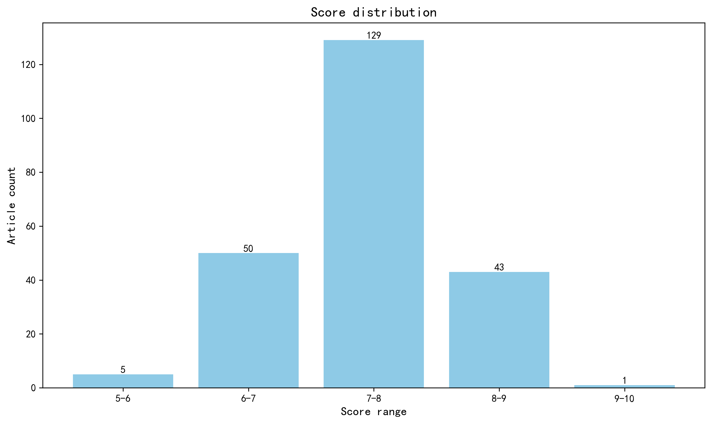

神经科学快讯·第015期 受伤的上皮细胞也会‘放电’：PNAS 发现上皮单层中的慢速电压尖峰 (2026-06-20)
📊 本周概览
历史摘要修订（2026-10-18）：第 015 期保留历史期号、日期与封面。本期 438 条记录中补回 200 条正式摘要，仅对这些条目使用 DeepSeek 重新评分和分级推荐，其余评估保持原值。修订后拟发布 204 篇，其中 5 篇仍缺充分摘要，已保留资料不足提示。来源、旧评分和推荐变更见 getfiles/abstract_history_2026-10-18.json。
- 头条推荐: 1 篇
- 深度解读: 119 篇
- 简要提及: 84 篇
- 跨界启发: 0 篇
- 已过滤: 234 篇
🌏 环球视野

地区与机构按本期原始发表记录、ROR 及城市地址规则分别统计；跨地区合作可重复计入，不作为完整机构排名。评分分布不含“域外局限”文章。
🌍 国家/地区分布 TOP 10
| 排名 | 国家 | 文章数量 |
|---|---|---|
| 1 | United States | 96 |
| 2 | China | 46 |
| 3 | United Kingdom | 24 |
| 4 | Germany | 19 |
| 5 | Canada | 13 |
| 6 | Japan | 11 |
| 7 | France | 10 |
| 8 | Spain | 10 |
| 9 | Switzerland | 9 |
| 10 | Italy | 8 |
地区计次合计: 319 次；取得地区信息 200/228 篇
🏢 研究机构 TOP 10
| 排名 | 机构 | 文章数量 |
|---|---|---|
| 1 | Chinese Academy of Sciences | 12 |
| 2 | Harvard University | 11 |
| 3 | Stanford University | 9 |
| 4 | National Institutes of Health (United States) | 6 |
| 5 | Fudan University | 6 |
| 6 | University of Science and Technology of China | 5 |
| 7 | Sorbonne Université | 5 |
| 8 | Duke University | 5 |
| 9 | University of California San Diego | 5 |
| 10 | Shanghai Jiao Tong University | 5 |
📊 评分分布
| 评分区间 | 文章数量 |
|---|---|
| 5-6 | 5 |
| 6-7 | 50 |
| 7-8 | 129 |
| 8-9 | 43 |
| 9-10 | 1 |
总计: 228 篇评分文章
📈 各领域文章分布
| 领域 | 深度解读 | 简要提及 | 总计 |
|---|---|---|---|
| 未知领域 | 0 | 53 | 53 |
| 系统与环路神经科学 | 28 | 3 | 31 |
| 分子与细胞神经科学 | 26 | 2 | 28 |
| 感觉与运动神经科学 | 12 | 9 | 21 |
| 临床与转化神经科学 | 13 | 7 | 20 |
| 认知神经科学 | 11 | 2 | 13 |
| 方法学 | 8 | 5 | 13 |
| 发育神经科学 | 10 | 1 | 11 |
| 计算与理论神经科学 | 10 | 1 | 11 |
| 社会与情感神经科学 | 1 | 1 | 2 |
合计: 深度解读 119 篇，简要提及 84 篇，共 203 篇
🥇 头条推荐（9.0+分）
中文标题: 觉醒活跃单胺能神经元释放的色胺调节睡眠稳态
作者: Huateng Cao, Kui Wang, Jin Zhao et al.
单位: Institute of Neuroscience, CAS Center for Excellence in Brain Science and Intelligence Technology, Chinese Academy of Sciences, Shanghai, China.; Yiwu Research Institute of Fudan University, Yiwu, China.; University of Chinese Academy of Sciences, Beijing, China. 等
研究地区: China
关键词: 色胺, 睡眠稳态, 单胺能神经元, 荧光传感器, 脑脊液, 跨物种
亮点: 首次揭示色胺作为睡眠稳态调控因子及其受体GPR139，为治疗睡眠障碍提供新靶点
核心优势: 跨物种验证、新型传感器开发、从分子到行为的完整机制链
研究局限: 色胺来源的具体神经元亚型及其上游调控机制尚不完全清楚；GPR139下游信号通路细节有待深入
目标读者: 睡眠神经科学家、GPCR药理学研究者、转化睡眠医学研究者
推荐理由: 该研究鉴定色胺为一种新的睡眠压力信号分子，其脑脊液水平在两种哺乳动物中均随清醒和体力活动增加，并由觉醒相关的单胺能神经元产生。通过开发特异性荧光传感器，揭示了色胺动态与睡眠稳态的紧密关联，为理解睡眠调控机制提供了新靶点和工具，对系统与分子神经科学均有重要价值。
📚 精选文献（按领域分类）
临床与转化神经科学
中文标题: 一种中枢神经系统渗透性小分子解聚Tau蛋白减少纤维和寡聚体负荷并维持蛋白质稳态和行为
作者: Mostowfi, N., Foreman, R., Wang, J. et al.
单位: University of Southern California
研究地区: United States
关键词: 小分子药物, tau蛋白, 阿尔茨海默病, 蛋白稳态, 行为学, 药物化学
亮点: 首个通过脑渗透小分子直接解聚tau纤维和寡聚体而不产生毒性中间体的治疗策略
核心优势: 开发了一种机制全新、脑渗透的小分子PT-13，能够直接解聚tau聚集体而不形成有毒中间体，并在体内改善病理和行为。
研究局限: 仅在一个小鼠模型中验证，且长期安全性和有效性尚未评估；机制细节（共组装的具体分子互动）有待进一步明确。
目标读者: 神经退行性疾病研究者、药物化学家、转化神经科学家
推荐理由: 该研究报道了一种能穿透血脑屏障的香豆素类小分子PT-13，通过堆叠驱动的共组装机制有效解聚tau纤维和寡聚体，减少阿尔茨海默病脑源性tau种子活性。在模型系统中，PT-13降低了总tau聚集负担，保护蛋白稳态并改善行为缺陷。这一发现为tau蛋白病提供了一种潜在的疾病修饰策略，其独特的分子机制也为靶向蛋白聚集的药物设计开辟了新途径。
中文标题: 利用自监督表征的语音作为重度抑郁症辅助诊断的生物标志物
作者: Yunhan Lin, Biman Najika Liyanage, Chuan Shi et al.
单位: Peking University Institute of Mental Health, Beijing, China.; NHC Key Laboratory of Mental Health (Peking University), Beijing, China.; Peking University Sixth Hospital, Beijing, China. 等
研究地区: China, United Kingdom
关键词: 自监督学习, 语音生物标志物, 深度学习, 人类, 重度抑郁障碍, 多中心队列
亮点: 利用自监督表征在大规模语音数据中实现高精度抑郁症辅助诊断
核心优势: 大规模多中心队列验证，自监督模型显著优于传统方法，且外部验证有效
研究局限: 外部验证样本量较小，未阐明神经生物学机制，仅相关性
目标读者: 计算精神病学、语音信号处理、情感计算和临床心理学研究者
推荐理由: 本研究利用自监督语音表示在大型多中心队列中建立抑郁诊断模型，系统比较了WavLM、HuBERT等基础模型与传统声学特征，验证了语音作为客观生物标志物的临床潜力。工作规模大、方法严谨，为精神疾病客观诊断提供了可借鉴的范式。
中文标题: 单倍型分辨的甲基化组揭示自闭症谱系障碍中父母来源的DNA甲基化失衡
作者: Lu Xia, Hailiang Guo, Ruiting Liu et al.
单位: School of Public Health, Peking University, Beijing 100191, China.; The Key Laboratory of Pediatric Rare Diseases of the Ministry of Education, University of South China, Hengyang and Central South University, Changsha, 410078 Hunan, China.; Center for Medical Genetics and Hunan Key Laboratory of Medical Genetics, School of Life Sciences, Central South University, Changsha, 410008 Hunan, China. 等
研究地区: China
关键词: ASD, DNA甲基化, 亲本效应, 单倍型解析, PacBio HiFi, 表观基因组
亮点: 首次利用单倍型分辨甲基化组揭示ASD中亲本来源的DNA甲基化失衡
核心优势: 系统性地在患者-同胞对照设计中鉴定了亲本特异性差异甲基化位点和区域
研究局限: 样本量相对较小，且局限于特定人群，部分关联可能需更大样本验证
目标读者: 神经表观遗传学、自闭症研究和计算基因组学研究者
推荐理由: 该研究首次系统解析自闭症谱系障碍中亲本来源的DNA甲基化不平衡，通过单倍型分相甲基化谱揭示大量父源和母源特异性差异甲基化位点及区域，为理解ASD的表观遗传机制提供了新维度。方法上，PacBio HiFi测序结合单倍型分析，为精准研究基因组印记和亲本效应提供了可复制范本。
中文标题: 破坏脑-脾轴损害单核细胞-小胶质细胞通讯并加速淀粉样变性小鼠模型的疾病进展
作者: Tommaso Croese, Miguel A. Abellanas, Michal Schwartz
单位: Department Of Brain Sciences, Weizmann Institute Of Science, Rehovot, Israel. Michal.Schwartz@Weizmann.Ac.Il.; Department Of Brain Sciences, Weizmann Institute Of Science, Rehovot, Israel. Tommaso.Croese@Icloud.Com.
资深研究者: Tommaso Croese (h指数=12); Michal Schwartz (h指数=105)
关键词: 阿尔茨海默, 小鼠模型, 脑-脾轴, 神经免疫, 小胶质细胞, 单核细胞
亮点: 揭示脾脏通过单核细胞-小胶质细胞通信调控阿尔茨海默病进展的新机制
核心优势: 通过功能性去神经支配与增强实验，系统证明脑-脾轴在调控外周免疫向中枢迁移及小胶质细胞状态转变中的因果作用
研究局限: 研究仅基于5xFAD小鼠模型，缺乏在人类AD中的验证，且机制细节（如脾脏与大脑之间的具体信号分子）仍需阐明
目标读者: 神经免疫学、阿尔茨海默病研究、外周-中枢通信领域研究者
推荐理由: 这项研究首次揭示了脑-脾轴在阿尔茨海默病进展中的关键作用：早期脾脏交感神经去神经支配会破坏单核细胞-小胶质细胞通讯，加速认知下降。它不仅将外周-中枢免疫交互纳入AD病理框架，还为靶向外周神经干预提供了新思路，对理解疾病从无症状到症状期转化的机制具有重要价值。
中文标题: PLK4抑制剂RP-1664通过双机制敏感性在神经母细胞瘤临床前模型中显示出强效疗效
作者: Isabel Soria-Bretones, Matias Casás-Selves, Minu Samanta et al.
单位: Divison of Oncology and Center for Childhood Cancer Research, Children's Hospital of Philadelphia, Philadelphia, PA, USA.; Repare Therapeutics, St. Laurent, QC, Canada.; Children's Cancer Institute at Minderoo Children's Comprehensive Cancer Centre, Sydney, NSW, Australia. 等
研究地区: Canada, United States, Australia
关键词: 神经母细胞瘤, PLK4抑制剂, TRIM37, 中心粒扩增, CRISPR筛选, 染色体17q
亮点: PLK4抑制剂通过双重机制（TRIM37依赖性合成致死和中心粒扩增诱导多极分裂）在神经母细胞瘤中展现强效抗肿瘤活性
核心优势: 全面临床前验证，包括多个PDX模型、转基因小鼠模型及联合治疗，证据链完整严谨
研究局限: 仍为临床前研究，未涉及临床试验；TRIM37非依赖机制的详细分子通路未完全阐明
目标读者: 肿瘤生物学、神经母细胞瘤研究、靶向治疗开发人员
推荐理由: 该研究揭示了PLK4抑制剂RP-1664在神经母细胞瘤中的作用机制，尤其是通过TRIM37依赖和独立双重通路选择性杀伤高风险肿瘤细胞，为开发针对儿童肿瘤的靶向治疗提供了新策略。结合CRISPR筛选和活细胞成像，机制解析清晰，临床前模型验证扎实，对神经肿瘤学转化研究具有重要参考价值。
中文标题: 临床连接组学：疾病中结构性脑网络的映射
作者: Andrew Zalesky, Maria A Di Biase
单位: Systems Group, Department of Psychiatry, University of Melbourne, Melbourne, VIC 3010, Australia; Department of Anatomy and Physiology, University of Melbourne, Melbourne, VIC 3010, Australia.; Department of Biomedical Engineering, University of Melbourne, Melbourne, VIC 3010, Australia. Electronic address: azalesky@unimelb.edu.au.
研究地区: Australia
关键词: 弥散MRI, 结构连接组, 白质微结构, 脑网络, 临床疾病, 方法学
亮点: 病理条件下的结构连接组映射：挑战、分类与最佳实践指南
核心优势: 系统整合了从微观到宏观的连接组异常分类与多种测量方法，提供了面向临床的可靠映射建议。
研究局限: 主要聚焦于结构连接组，未涵盖功能连接组；对特定疾病的深度分析有限。
目标读者: 临床神经影像、神经病学、精神病学及神经科学方法论研究者
推荐理由: 该综述系统梳理了在脑疾病状态下进行结构连接组映射的核心挑战，包括病变对白质微结构的影响、病理破坏网络拓扑以及方法论偏差。它连接了计算神经科学的工具与临床实践需求，为研究阿尔茨海默病、精神分裂症等疾病的网络病理学提供了关键指导，对推进精准神经影像学有重要参考价值。
中文标题: 临床可转化的超声定位显微镜揭示创伤性脑损伤患者的脑血管重塑和预后
作者: Maoyao Li, Wenxuan Wang, Yuanyi Zheng
资深研究者: Wenxuan Wang (h指数=23)
关键词: 超声定位显微镜, 创伤性脑损伤, 微血管成像, 床边评估, 人类, 脑血管重塑
亮点: 实现床旁微血管超高分辨率成像，揭示脑损伤后微循环重塑与预后关联
核心优势: 首次在临床系统上实现超声定位显微镜的床旁应用，纵向揭示脑血管重塑并预测6个月预后
研究局限: 样本量仅20例，为单中心观察性研究，需更大规模多中心验证
目标读者: 神经重症、超声影像、脑血管疾病研究者
推荐理由: 该研究突破常规超声定位显微镜对超快成像的依赖，实现神经重症监护床旁的脑微血管结构可视化。在20例去骨瓣减压术后脑损伤患者中，该方法揭示了微血管重塑的时空特征，并与预后相关。这一转化成果为实时微循环监测提供了可及工具，有望改变神经危重症的临床决策模式，对脑血管疾病和脑损伤研究具有重要方法学价值。
中文标题: 通过基因治疗恢复内质网与线粒体之间的相互作用改善2A型腓骨肌萎缩症
作者: Marine Tessier, Zeinab Hamze, Nathalie Bonello-Palot et al.
单位: Département de Génétique Médicale, Hôpital Timone, Assistance Publique- Hôpitaux de Marseille, Marseille 13005, France.; Centre de Ressources Biologiques, Assistance Publique- Hôpitaux de Marseille, Hôpital Timone Adulte, Biogénopôle, Marseille 13005, France.; Aix Marseille Univ, INSERM, Marseille Medical Genetics, U1251, Marseille 13005, France. 等
研究地区: France, Switzerland
关键词: 基因治疗, 线粒体动力学, 内质网-线粒体接触, MFN2, 轴索变性, 小鼠模型
亮点: 通过AAV9递送野生型MFN2修复内质网-线粒体接触，在症状出现后仍能改善CMT2A小鼠的运动功能，为轴索型腓骨肌萎缩症提供了首个体内基因治疗概念验证。
核心优势: 在转基因小鼠和患者来源iPSC运动神经元中双重验证，并证明症状发作后经鞘内给药仍有效，同时展示ER靶向MFN1亚型的替代策略，治疗窗口与转化可行性论证较为完整。
研究局限: 机制仍停留在MFN2过表达恢复接触的关联层面，未明确接触位点数量与轴索保护之间的因果剂量关系；长期AAV表达安全性、免疫原性及大动物/灵长类数据缺失，且对MFN2显性负性突变的竞争性干扰未充分排除。
目标读者: 神经肌肉疾病与基因治疗研究者、线粒体动力学与细胞器互作领域科学家、转化神经科学与临床前AAV开发人员
推荐理由: 该研究针对CMT2A这一缺乏治疗手段的严重轴索型周围神经病，揭示了突变MFN2破坏内质网-线粒体接触导致轴索变性的机制，并开发基因治疗恢复两者的交互，在动物模型中验证了疗效。工作将细胞器接触位点生物学与基因治疗策略紧密结合，为CMT2A提供了首个疾病修正型干预候选，也为其他由细胞器互作异常驱动的神经退行性疾病提供了可借鉴的治疗范式。
Amyotrophic lateral sclerosis as a network disease: from metabolic decline to network failure.
深度解读 7.6/10中文标题: 肌萎缩侧索硬化作为一种网络疾病：从代谢衰退到网络失效
输入资料不足：原始摘要未取得，当前评估仅供初筛，推送前需核对原文。
作者: Raffaele Dubbioso, Sabina Pappatà
单位: IRCCS SYNLAB SDN, Naples 80143, Italy.; Department of Neurosciences, Reproductive Sciences and Odontostomatology, University of Naples 'Federico II', Naples 80131, Italy.
研究地区: Italy
关键词: 神经退行性疾病, 肌萎缩侧索硬化症, 网络疾病, 代谢下降, 功能连接
亮点: 从代谢衰退到网络失效的ALS新视角
核心优势: 整合代谢与网络神经科学，提出ALS作为网络疾病的统一框架
研究局限: 缺乏新实验数据，依赖现有文献，批判性深度可能有限
目标读者: 神经退行性疾病研究者、代谢与网络神经科学交叉领域学者
推荐理由: 本文提出ALS不应仅被视为运动神经元疾病，而是由代谢崩溃引发的全脑网络失效。通过整合代谢影像与功能连接数据，揭示了疾病进展中从局部代谢异常到全局网络解耦的动态过程。这一框架为理解神经退行性疾病的系统性机制提供了新视角，也为早期诊断和靶向网络保护的干预策略奠定了理论基础。
中文标题: 融合神经刺激与外骨骼以增强脑或脊髓损伤后的感觉运动手功能
作者: Andrea Cimolato, Dunja Cekić, Natalija Katić Šećerović et al.
单位: NeuroEngineering Laboratory, Department of Health Sciences and Technology, ETH Zurich, Zurich, Switzerland.; Comprehensive Center for Artificial Intelligence in Medicine, Medical University of Vienna, Währinger Gürtel 18-20, 1090 Vienna, Austria.; Center for Medical Physics and Biomedical Engineering, Medical University of Vienna, Währinger Gürtel 18-20, 1090 Vienna, Austria. 等
研究地区: Austria, Switzerland, Serbia, Germany, Norway, Singapore
关键词: 神经调控, 外骨骼, 感觉运动功能, 手部康复, 脑机接口, 脊髓损伤
亮点: 便携式外骨骼与靶向电刺激闭环结合，在感觉完全丧失患者中重建手部触觉与精细抓握
核心优势: 针对中枢损伤后手功能这一临床难题，将可穿戴外骨骼与定制电刺激袖套整合为神经机器人系统，并在临床完全性感觉丧失患者中展示残余外周通路招募的可行性，概念验证具有转化吸引力
研究局限: 样本量小（14人仅8人完成功能评估），缺乏对照/盲法与长期随访，功能改善幅度和统计稳健性有限，且机制证据主要依赖行为学而非神经生理学验证
目标读者: 神经康复、神经工程、运动控制与脑机接口/神经假体转化研究者
推荐理由: 该研究创新性地将便携式外骨骼与靶向神经刺激（e-sleeve）结合，构建神经机器人系统，旨在改善脑或脊髓损伤后的手部感觉运动功能。在14名患者中测试，初步验证了其提升灵巧度的潜力。这项工作为神经康复提供了一种可立即转化的辅助技术方案，并强调了感觉反馈与运动辅助闭环整合的重要性，对临床转化和方法学均有启示。
中文标题: 类风湿关节炎中脑老化的神经结构和分子证据
作者: Wasen, C., Erlandsson, M., Andersson, K. et al.
单位: Karolinska Institutet
研究地区: Sweden
关键词: MRI, 生物标志物, 转录组学, 人类, 类风湿关节炎, 脑衰老
亮点: 多模态证据揭示类风湿关节炎与加速脑衰老的关联
核心优势: 结合结构MRI、血清生物标志物和单核细胞转录组学，提供了跨模态的加速脑衰老证据。
研究局限: 样本量较小，且缺乏纵向数据，因果推断受限；脑年龄预测模型仅基于健康对照，可能低估RA特异性变化。
目标读者: 神经免疫学、神经影像学和风湿病学研究者
推荐理由: 该研究通过整合结构MRI、循环神经退行性生物标志物和外周单核细胞转录组学，提供了类风湿关节炎（RA）患者大脑加速衰老的多模态证据。研究利用独立队列交叉验证，揭示了慢性系统性炎症如何驱动神经退行性变化，为RA相关认知衰退的早期干预和精准监测提供了潜在靶点，也拓展了我们对全身-脑轴衰老机制的理解。
中文标题: 靶向神经元的压电微针破坏促肿瘤神经元-免疫串扰并恢复黑色素瘤抗肿瘤免疫
作者: Anjun Song, Yanjie Zhang, Yanjun Ji et al.
单位: School of Applied Chemistry and Engineering, University of Science and Technology of China, Hefei, PR China.; State Key Laboratory of Rare Earth Resource Utilization and Laboratory of Chemical Biology, Changchun Institute of Applied Chemistry, Chinese Academy of Sciences, Changchun, PR China. jren@ciac.ac.cn.; State Key Laboratory of Rare Earth Resource Utilization and Laboratory of Chemical Biology, Changchun Institute of Applied Chemistry, Chinese Academy of Sciences, Changchun, PR China. 等
研究地区: China
关键词: 神经免疫, 黑色素瘤, 压电材料, 微针贴片, 感觉神经元, 肿瘤微环境
亮点: 一种靶向神经元的压电微针贴片，可同时减弱伤害感受器神经元的活动及其对黑色素瘤的抗肿瘤免疫抑制。
核心优势: 将材料科学（压电Mn掺杂Ti-MOF结合DRG神经元膜包覆）与神经免疫学机制巧妙地整合到单一微针平台中，在肿瘤部位实现神经元靶向的内化调控、TRPV1-Ca2+-CGRP/SP信号减弱以及cGAS-STING参与的证据。
研究局限: 机制证据似乎主要依赖单一黑色素瘤模型和药理学/通路水平的解读，而非直接因果性的遗传或光遗传学神经元操控；神经元膜包覆的组织特异性和长期安全性未充分说明；关于“破坏神经元-免疫对话”的结论可能夸大了特定的分子因果链。
目标读者: 关注神经免疫学、肿瘤神经科学、生物材料和转化纳米医学的研究人员
推荐理由: 该研究将压电材料与神经膜仿生技术结合，开发了可局部干扰神经-免疫串扰的微针贴片，为黑色素瘤治疗提供了新思路。其创新点在于利用锰掺杂MOF的压电效应和背根神经节细胞膜修饰，精准靶向肿瘤浸润神经元，从而恢复抗肿瘤免疫。这项工作凸显了神经免疫学在癌症治疗中的转化潜力，并为神经调控型生物材料的设计提供了范例。
中文标题: 靶向昼夜节律治疗癌性疼痛
输入资料不足：原始摘要未取得，当前评估仅供初筛，推送前需核对原文。
作者: Niveditha Sankar
单位: Department of Pharmacology and Experimental Neuroscience, University of Nebraska Medical Center, Omaha, Nebraska 68198 nsankar@unmc.edu.
研究地区: United States
关键词: 昼夜节律, 癌痛, 动物模型, 药理学, 行为学, 视交叉上核
亮点: 系统综述昼夜节律调控在癌症疼痛治疗中的潜在靶点与机制
核心优势: 整合了昼夜节律生物学与疼痛研究，为癌症疼痛管理提供了新视角
研究局限: 缺乏对具体临床转化的深入探讨，部分机制尚不明确
目标读者: 疼痛神经科学、癌症研究、时间生物学领域的研究者
推荐理由: 该研究聚焦于昼夜节律在癌痛发生与维持中的关键作用，并提出靶向生物钟以缓解癌痛的新策略。通过整合分子机制与行为学评估，揭示了节律紊乱如何加剧疼痛感知，并验证了时间特异性干预的镇痛潜力。不仅为癌痛治疗提供了时间药理学思路，也为理解慢性疼痛的昼夜调控机制开辟了新方向。对于从事疼痛研究、神经药理学及临床转化的读者具有重要参考价值。
TFPI2 promotes NK cell-mediated glioblastoma killing through adhesion and checkpoint control.
简要提及 7.0/10中文标题: TFPI2通过黏附和检查点调控促进NK细胞介导的胶质母细胞瘤杀伤
作者: Dongpeng Zheng, Fengqi Li, Zhuang Zhang et al.
单位: School of Pharmaceutical Science and Technology, Faculty of Medicine, Tianjin University, Tianjin 300072, China.; The State Key Laboratory of Neurology and Oncology Drug Development, Jiangsu Simcere Diagnostics Co., Ltd., Nanjing Simcere Medical Laboratory Science Co., Ltd., Nanjing 210042, China.; State Key Laboratory of Synthetic Biology, Tianjin University, Tianjin 300072, China. 等
研究地区: China
摘要: NK细胞攻击诱导的TFPI2通过ICAM1黏附和SIGLEC15检查点双重轴重塑胶质母细胞瘤免疫微环境
优势: 以转录组与功能实验串联揭示IL1β/TNFα-NFκB-TFPI2反馈环路，并解析黏附与检查点两条互补效应机制，概念整合度较高。 局限: 机制新颖性属渐进式而非范式突破；体内证据以异种移植与语境依赖为主，TFPI2诱导能力作为疗效预测标志物缺乏前瞻性验证，且人源化模型与临床转化距离尚远。 受众: 肿瘤免疫学、神经肿瘤学、NK细胞生物学及免疫治疗转化研究者
中文标题: 单侧纹状体深部脑刺激改善认知控制
作者: Elizabeth M Sachse, Evan M Dastin-van Rijn, Jon P Bennek et al.
单位: Neuroscience, University of Minnesota, Minneapolis, Minnesota 55454.; Departments of Psychiatry & Behavioral Sciences, University of Minnesota, Minneapolis, Minnesota 55454.; Departments of Psychiatry & Behavioral Sciences, University of Minnesota, Minneapolis, Minnesota 55454 sachs075@umn.edu awidge@umn.edu. 等
研究地区: United States
摘要: 在啮齿类模型中复现VCVS DBS认知控制增强的偏侧化效应，并揭示单侧与双侧刺激通过相同决策变量起效。
优势: 用计算建模将单侧/双侧刺激与同一决策变量（如决策阈值或非决策时间）对应，并纳入雌雄两性验证，增强了该转化模型对DBS参数优化的参照价值。 局限: 结论主要基于反应时这一单一行为指标和一项已知范式，缺乏神经电生理因果证据，偏侧化效应的机制解释与人类临床直接对应仍较薄弱。 受众: 从事DBS机制、认知控制神经环路、计算精神病学与转化神经科学的系统/计算神经科学家
中文标题: 限制ALS中的神经退行性变：一种磷酸酶铺平道路
作者: Elena I Rugarli, Thomas Langer
单位: Cologne Excellence Cluster on Cellular Stress Responses in Aging-Associated Diseases (CECAD), University of Cologne, Cologne, Germany; Cologne Excellence Cluster on Cellular Stress Responses in Aging-Associated Diseases (CECAD), University of Cologne, Cologne, Germany.; Institute for Genetics, University of Cologne, Cologne, Germany 等
研究地区: Germany
摘要: 聚焦PGAM5-OMA1通路，为ALS治疗提供新靶点视角
优势: 敏锐捕捉并解读重要发现，提出治疗转化潜力 局限: 仅基于单一研究，缺乏独立数据支持 受众: 神经退行性疾病研究者、ALS领域科学家、线粒体生物学专家
Feynman Kac Reweighted Schrödinger Bridge Matching for Surface-Based Tau PET Harmonization
简要提及 6.9/10中文标题: 基于费曼-卡克重加权薛定谔桥匹配的Tau PET图像标准化
作者: Jianwei Zhang, Xinyu Nie, Jiaxin Yue et al.
资深研究者: Jianwei Zhang (h指数=49); Yonggang Shi (h指数=36)
摘要: 提出Feynman Kac重加权薛定谔桥匹配解决Tau PET数据协调中的子组分布偏移问题
优势: 通过子组感知的重加权机制，在数据层面实现生物学一致的运输，显著降低了tau阳性状态误匹配 局限: 仅基于两个数据集和特定示踪剂对（PI-2620和AV-1451），泛化到其他示踪剂和场景需要进一步验证 受众: 神经影像计算方法学、核医学、阿尔茨海默病生物标志物研究者
中文标题: 迷幻蘑菇素中毒期间的脑电微状态动态与急性体验及持续性心理变化的关系
作者: Jajcay, N., Vejmola, C., Korcak, J. et al.
单位: Institute of Computer Science, The Czech Academy of Sciences
研究地区: Poland, Czechia
摘要: EEG微状态动力学揭示psilocybin加速大脑状态转换，并与急性体验及28天后心理变化相关
优势: 首次将EEG微状态动力学与远期间隔的心理变化直接关联，为psilocybin的神经机制提供候选标记物 局限: 样本量小（n=15），相关分析为探索性，未进行多重比较校正，仅包含健康志愿者 受众: 精神药理学、EEG神经影像、意识研究及精神疾病转化研究者
中文标题: 靶向HMGB1-TLR4轴缓解神经病理性疼痛相关认知缺陷
作者: Junhua Li, Yafang Liu, Zhaoxia Liao et al.
单位: Department of Anesthesiology, Sun Yat-sen Memorial Hospital, Sun Yat-sen University, Guangzhou 510120, China shenzhw3@mail.sysu.edu.cn wuyi55@mail.sysu.edu.cn.; Guangdong Provincial Key Laboratory of Malignant Tumor Epigenetics and Gene Regulation, Sun Yat-sen Memorial Hospital, Sun Yat-sen University, Guangzhou 510120, China.; Department of Anesthesiology, Sun Yat-sen Memorial Hospital, Sun Yat-sen University, Guangzhou 510120, China.
研究地区: China
摘要: HMGB1-TLR4轴被确立为连接慢性神经病理性疼痛与海马依赖性认知障碍的关键神经炎症通路，并可通过药理学干预缓解。
优势: 构建了从外周损伤到海马神经炎症与突触可塑性受损的完整因果链，结合基因敲除、神经元特异性敲低、外源性HMGB1补充及甘草酸抑制等多层次实验加以验证。 局限: 核心通路HMGB1-TLR4在疼痛-认知共病中并非全新概念，机制新意有限；仅使用雄性小鼠，缺乏雌性验证与细胞类型特异性分子下游的深入解析。 受众: 神经免疫学、疼痛机制与突触可塑性研究者，以及关注神经炎症靶点转化的临床前药理学家
中文标题: 进行性多灶性白质脑病患者幸存者的长期预后
作者: Nicolas Lambert, Majdouline El Moussaoui, Adèle Le Guilloux et al.
单位: Department of Neurology, CHU de Liège/Hôpital de la Citadelle, 4000 Liège, Belgium.; Experimental Immunotherapeutics Unit, National Institute of Neurological Disorders and Stroke, National Institutes of Health, Bethesda, MD 20892, USA.; ESCMID Study Group for Infectious Diseases of the Brain (ESGIB), 4051 Basel, Switzerland. 等
研究地区: United States, Belgium, Switzerland, France, Italy, Germany, Denmark, The Netherlands, Portugal, Norway, Czechia, Martinique
摘要: 跨国多中心队列刻画进行性多灶性白质脑病（PML）存活者三年功能轨迹：近半数可达功能独立，但复发几乎致命。
优势: 41中心12国245例严格确诊PML一年存活者的三年随访，样本量在该罕见病领域突出，首次系统量化三年功能结局、晚期死亡与复发率。 局限: 回顾性设计、标准化问卷数据采集，存在选择与回忆偏倚；三年功能状态分析中报告的一年功能状态OR=0.01（95%CI <0.01-0.03）提示统计建模或变量编码可能异常，需谨慎解读；缺乏统一MRI判读与免疫重建治疗细节。 受众: 神经感染/神经免疫临床研究者、PML及免疫抑制相关脑病方向临床医生与流行病学家
分子与细胞神经科学
中文标题: 靶向PGAM5驱动的线粒体整合应激反应可减缓所有亚型ALS的进展
作者: Zhilong Zheng, Wangju Yang, Zhen Chen et al.
单位: Department of Medicinal Chemistry, School of Pharmacy, Nanjing Medical University, Nanjing 211166, Jiangsu, China. Electronic address: pharmchen@njmu.edu.cn.; Institute for Stem Cell and Neural Regeneration, School of Pharmacy, Nanjing Medical University, Nanjing 211166, Jiangsu, China.; Department of Neurobiology, School of Basic Medical Sciences, Nanjing Medical University, Nanjing 211166, Jiangsu, China. 等
研究地区: China
关键词: CRISPR筛选, 线粒体应激, ALS, 磷酸酶, 脊髓, 神经肌肉接头
亮点: 揭示PGAM5-OMA1-mtISR通路是ALS共同致病机制，并提出老药telmisartan的靶向治疗潜力。
核心优势: 通过CRISPR筛选发现PGAM5作为ALS跨亚型共同靶点，并利用多种体内外模型系统验证其机制和治疗效果，尤其发现现有药物telmisartan可抑制PGAM5。
研究局限: 研究主要在细胞和动物模型中进行，缺少人体临床试验数据；telmisartan作为PPARγ激动剂可能有其他效应，特异性需进一步确认；PGAM5在其他神经退行性疾病中的作用未探讨。
目标读者: 神经退行性疾病研究者、ALS临床专家、药物开发者和线粒体生物学研究者
推荐理由: 该研究通过CRISPR-Cas9筛选发现PGAM5是ALS的共性病理介质，揭示其通过去磷酸化OMA1激活线粒体整合应激反应，进而驱动神经肌肉接头破坏和运动功能减退。在散发性ALS患者脊髓中PGAM5水平升高，提示其作为治疗靶点的潜力。工作为理解ALS的跨亚型机制和开发广谱疗法提供了新方向。
中文标题: 挥发性麻醉药通过与通道门控直接相关的位点调节电压门控钠通道功能
作者: David Hollingworth, Karl F Herold, Geoff Kelly et al.
单位: The Medical Research Council Biomedical NMR Centre, The Francis Crick Institute, London, UK.; Department of Anesthesiology, Weill Cornell Medicine, New York, NY, USA.; School of Natural Sciences, Birkbeck University of London, London, UK. 等
研究地区: United Kingdom, United States
关键词: 电压门控钠通道, 挥发性麻醉药, X射线晶体学, NavMs, NaChBac, 门控机制
亮点: 首次以原子分辨率解析挥发性麻醉药在电压门控钠通道上的结合位点，并证明该位点通过置换膜脂直接调控通道失活门控。
核心优势: X射线晶体学结合定点突变与电生理多模态验证，在原子水平上把挥发性麻醉药的作用位点与钠通道失活门控功能因果关联起来。
研究局限: 核心结构证据来自原核通道NavMs，人源Nav1.1仅通过失活调制和同源位点推断支持，缺乏人源通道的原子结构或直接结合证据；临床相关性仍属外推。
目标读者: 离子通道生物物理学家、麻醉机制研究者、膜蛋白结构生物学家和计算神经科学家
推荐理由: 该研究首次以原子分辨率揭示了挥发性麻醉药在电压门控钠通道上的结合位点，并证明该位点与通道门控直接偶联。通过比较原核与真核通道，作者发现麻醉药通过置换脂质分子来调节通道失活，为理解全身麻醉的分子机制提供了结构基础。这一发现不仅将挥发性麻醉药的作用靶点从蛋白质-脂质界面具体化到氨基酸残基水平，也为开发靶向钠通道的新型麻醉剂或治疗药物提供了可操作的模板。
中文标题: 早期资源匮乏导致雌性前额叶皮层的持续性转录变化和血管重塑
作者: Andrews, E. R., Crist, R. C., Silva, A. I. et al.
单位: University of Pennsylvania Perelman School of Medicine
关键词: 早期逆境, 资源稀缺, 有限垫料模型, 雌性大鼠, 内侧前额叶皮层, 转录组学
亮点: 首次揭示早期资源匮乏触发雌性前额叶皮层持续血管重构的细胞和分子机制
核心优势: 结合单核转录组学和3D血管成像，从分子到结构水平正交验证了雌性特异性血管变化
研究局限: 仅在啮齿类模型中验证，且未直接操纵血管基因以建立因果关系
目标读者: 神经科学家、性别差异研究者、发育神经生物学家、血管生物学家
推荐理由: 该研究利用雌性大鼠的有限垫料模型模拟早期贫困，系统揭示了资源稀缺如何通过持续转录变化和血管重塑影响内侧前额叶皮层功能。结合分子与细胞层面的多组学分析，为理解早期逆境导致长期脑脆弱性的机制提供了新视角，对发育与精神疾病研究具有重要参考价值。
中文标题: 可溶性α2δ-1在疾病脑脊液中改变，调节网络稳态并挽救神经精神小鼠模型的缺陷
作者: Marc Dos Santos, Marc P Forrest, Ewa Bomba-Warczak et al.
单位: Department of Neuroscience, Northwestern University Feinberg School of Medicine, Chicago, IL 60611, USA; Department of Neurology, Northwestern University Feinberg School of Medicine, Chicago, IL 60611, USA.; Center for Autism and Neurodevelopment, Northwestern University Feinberg School of Medicine, Chicago, IL 60611, USA. 等
研究地区: United States
关键词: 可溶性α2δ, CSF, 电压门控钙通道, 网络稳态, 精神分裂症, 小鼠模型
亮点: 发现可溶性钙通道亚基α2δ-1作为新型细胞外信号分子，调控网络稳态并逆转精神分裂症样缺陷
核心优势: 首次鉴定可溶性α2δ-1为活动依赖的细胞间信号，并在神经系统疾病中具有治疗潜力
研究局限: 机制细节尚不明确（如何被释放、受体等），需进一步验证临床转化潜力
目标读者: 神经科学、精神疾病、细胞信号转导研究者
推荐理由: 该研究发现电压门控钙通道亚基α2δ-1的可溶形式在人脑脊液中分泌，并证明其作为活动调控的细胞间信号调节神经网络稳态。在精神分裂症患者CSF中水平降低，而在小鼠模型中补充可溶性α2δ-1可挽救行为缺陷和网络失调。这一发现不仅揭示了离子通道亚基的非经典功能，也为精神疾病的生物标志物和潜在治疗靶点提供了新方向。
中文标题: 出生后人类神经干细胞的分离
作者: Liu, D. D., Eastman, A. E., Womack-Gambrel, N. L. et al.
单位: Stanford University
研究地区: United States
关键词: 人类, 神经干细胞, 索引分选, 克隆条形码, 异种移植, A2B5+EGFR+
亮点: 首次从产后人脑中分离并功能表征两种神经干细胞亚群，揭示其命运偏向及随年龄的指数衰减趋势
核心优势: 结合索引分选、克隆条形码和异种移植，系统鉴定并验证了产后人类神经干细胞的两个功能亚群
研究局限: 预印本未经同行评审，样本量有限，亚群体内功能意义需进一步验证
目标读者: 神经发育生物学、神经干细胞、再生医学和衰老研究者
推荐理由: 该研究通过索引分选技术首次从出生后人类脑中前瞻性分离出两类神经干细胞亚群，并结合克隆条形码和体内异种移植揭示了其分化动力学。这不仅为理解人类产后神经发生提供了直接的工具和细胞靶标，也为干细胞生物学研究设立了新的方法学标准，对再生医学和脑发育研究具有重要价值。
中文标题: NPAS3调控的星形胶质细胞线粒体生物能量学是认知所必需的
作者: Kateryna Murlanova, Ksenia Novototskaya-Vlasova, Shovgi Huseynov et al.
单位: Department of Pathology and Anatomical Sciences, Jacobs School of Medicine and Biomedical Sciences, State University of New York at Buffalo, Buffalo, NY, USA.; Department of Physiology and Biophysics, Jacobs School of Medicine and Biomedical Sciences, State University of New York at Buffalo, Buffalo, NY, USA.; Department of Pharmacology and Toxicology, Jacobs School of Medicine and Biomedical Sciences, State University of New York at Buffalo, Buffalo, NY, USA. 等
研究地区: United States, Denmark, South Korea
关键词: 星形胶质细胞, 线粒体, NPAS3, 基因敲除, 认知功能, 小鼠
亮点: 揭示星形胶质细胞NPAS3通过调控线粒体能量代谢影响认知功能的新机制
核心优势: 多模态实验（基因敲除、代谢组学、电生理、行为学）结合乳酸拯救实验，建立了从分子代谢到认知表型的完整因果链。
研究局限: 仅在小鼠模型中验证，缺乏人类星形胶质细胞或患者数据支持临床转化。
目标读者: 神经科学、胶质细胞生物学、代谢生物学和神经精神疾病研究者
推荐理由: 该研究揭示了转录因子NPAS3在星形胶质细胞中调控线粒体生物能量代谢的关键作用，并证明这一细胞类型特异性机制是维持正常认知功能所必需的。通过条件性敲除小鼠模型，作者发现星形胶质细胞NPAS3缺失导致线粒体谷氨酸载体表达下降、能量代谢受损，进而引发突触功能障碍和认知缺陷。这一发现为理解精神疾病中认知障碍的细胞代谢基础提供了新视角，并提示星形胶质细胞线粒体可作为潜在治疗靶点。
中文标题: 人2型IP3受体构象景观及配体依赖性聚集
作者: Caifeng Liu, Yu-Jing Lan, Max G Kushner et al.
单位: Department of Molecular Physiology and Biophysics, Vanderbilt University, School of Medicine, Nashville, TN, USA.; Center for Structural Biology, Vanderbilt University, Nashville, TN, USA.; Department of Cell and Developmental Biology, Vanderbilt University, School of Medicine, Nashville, TN, USA. 等
研究地区: United States
关键词: IP3受体, 钙信号, 冷冻电镜, 构象景观, 配体门控, 聚类
亮点: 首个IP3R-2冷冻电镜结构全景图，将配体依赖的构象变化与通道激活后的细胞聚集机制直接联系起来。
核心优势: 在同一亚型中整合了多配体状态（IP3、Ca2+、ATP）的cryo-EM构象景观、亚型差异、配体依赖的通道间界面鉴定，并用活细胞成像验证聚集表型与界面突变解耦。
研究局限: 聚集的功能后果（如Ca2+信号调控、ER重塑或病理意义）未被直接证明；界面破坏是否在生理表达水平和多种细胞类型中普遍成立仍待验证。
目标读者: 钙信号、离子通道结构生物学、膜蛋白冷冻电镜及细胞生理学研究者
推荐理由: 该研究首次报道了人源2型IP3受体（IP3R-2）在有无IP3、Ca2+和ATP条件下的冷冻电镜结构，揭示了其构象景观和配体依赖性聚类，填补了IP3R亚型特异性结构信息的空白。IP3R-2介导的钙信号对神经元可塑性、突触传递等至关重要。该工作为理解IP3R-2在神经生理及病理中的作用提供了结构基础，并展示了冷冻电镜在膜蛋白动态构象研究中的方法学价值。
中文标题: ATF2磷酸化是神经元凋亡的核心转录驱动因子
作者: Jorge Gómez-Deza, Matthew Nebiyou, Lara H El Touny et al.
单位: Eunice Kennedy Shriver National Institute of Child Health and Human Development, National Institutes of Health, Bethesda, MD, USA; Fox Chase Cancer Center, Cancer Signaling and Microenvironment Program, Philadelphia, PA, USA. Electronic address: jorge.gomez-deza@temple.edu.; Department of Cancer and Cellular Biology, Lewis Katz School of Medicine, Temple University, Philadelphia, PA, USA 等
研究地区: United States
关键词: CRISPR筛选, 全基因组, 人类神经元, 神经元凋亡, ATF2, DLK
亮点: 首次系统性揭示ATF2磷酸化而非JUN磷酸化是神经元凋亡的核心转录驱动，为神经退行性疾病提供新靶点。
核心优势: 结合全基因组CRISPR筛选和体内外功能验证，发现并证明了ATF2磷酸化在凋亡通路中的核心地位及JUN磷酸化的非必需性。
研究局限: 核心发现主要基于体外和动物模型，缺乏在人类神经退行性疾病样本中的直接验证；ATF2作为治疗靶点的长期安全性和有效性未知。
目标读者: 神经退行性疾病研究者、细胞死亡与转录调控学者、药物靶点发现专家
推荐理由: 该研究通过全基因组CRISPR抑制筛选，在人类神经元中系统鉴定了凋亡所需基因，发现ATF2磷酸化是核心转录驱动事件，与DLK和JUN形成新的促死亡级联。这一发现不仅深化了对神经元凋亡分子机制的理解，也为阿尔茨海默病等神经退行性疾病提供了潜在的治疗靶点。
中文标题: 具有相反活性的白藜芦醇异构体靶向内切酶G以调控神经退行性变和线粒体清除
作者: Jason L J Lin, Xiaoqi Wu, Graham A J Redweik et al.
单位: Department of Medical Biotechnology and Laboratory Science, Chang Gung University, Taoyuan 333, Taiwan.; Institute of Molecular Biology, Academia Sinica, Taipei 11529, Taiwan.; Department of Molecular, Cellular and Developmental Biology, University of Colorado, Boulder, CO 80309. 等
研究地区: Taiwan, United States
关键词: 白藜芦醇, EndoG, 线粒体消除, 神经退行性变, 秀丽隐杆线虫, 异构体
亮点: 白藜芦醇顺反异构体以相反方式直接结合线粒体核酸内切酶EndoG，分别促进和抑制α-突触核蛋白诱导的帕金森病多巴胺能神经元退变，顺式异构体在小鼠模型中显示治疗潜力。
核心优势: 发现同一天然化合物的两种光致异构体通过差异结合模式（顺式阻断DNA结合位点、反式稳定二聚体界面）对同一靶点产生相反活性，并在线虫和帕金森病小鼠模型中实现多模态功能验证。
研究局限: 核心机制验证主要依赖线虫遗传学与细胞模型，哺乳动物体内证据集中于顺式异构体的表型改善，缺乏EndoG敲除/敲低在哺乳动物中的直接遗传学验证以及异构体在体内的药代动力学和靶点占据数据。
目标读者: 神经退行性疾病机制、线粒体生物学、天然产物药理学与药物发现研究者
推荐理由: 该研究发现白藜芦醇的顺/反异构体通过靶向线粒体核酸内切酶EndoG对线粒体消除产生相反作用，并调控神经退行性变。这一发现不仅揭示了天然化合物异构体特异性的分子机制，也为开发针对EndoG的神经保护疗法提供了新思路，尤其对理解线粒体功能障碍在神经退行性疾病中的作用具有重要意义。
中文标题: 溶酶体回收神经元脂质使胶质细胞能够浸润突触区域
作者: Emma K Theisen, Irma Magaly Rivas-Serna, Peiwen Cheng et al.
单位: Department of Neurobiology, Stanford University, Stanford, CA 94305, USA.; Department of Agriculture, Food, and Nutritional Science, University of Alberta, Edmonton, AB T6G 2R3, Canada.; Department of Anatomy, University of California, San Francisco, San Francisco, CA 94114, USA. 等
研究地区: United States, Canada
关键词: 果蝇, 脂质组学, 溶酶体, 鞘脂, 遗传学, 发育
亮点: 揭示发育中胶质细胞通过溶酶体回收神经元膜脂驱动自身形态建成的新机制
核心优势: 首次将溶酶体介导的神经元-胶质细胞脂质代谢耦合与胶质细胞突触区域浸润的发育程序联系起来
研究局限: 基于果蝇模型，人类保守性及在不同脑区的重要性尚需验证
目标读者: 神经发育生物学、脂质代谢、胶质细胞生物学和溶酶体功能研究者
推荐理由: 该研究利用果蝇模型揭示了发育过程中特定鞘脂的瞬时积累，并证明这种脂质脉冲来源于神经元和胶质细胞的合成，最终被溶酶体回收，从而促进胶质细胞向突触区域的浸润。这一发现将溶酶体脂质代谢与神经发育中的膜重塑和胶质-神经元互作联系起来，为理解溶酶体贮积症的神经病理机制提供了新视角。
中文标题: 斑马鱼神经元微外显子通过cAMP-PKA-CREB通路调节觉醒
作者: Tahnee Mackensen, Luis Pedro Iñiguez, Thomas Soares Mullen et al.
单位: Universitat Pompeu Fabra, Barcelona, Spain.; Centre for Genomic Regulation (CRG), Barcelona Institute of Science and Technology, Dr. Aiguader 88, Barcelona 08003, Spain.; Biozentrum, University of Basel, Basel, Switzerland. 等
研究地区: Spain, Switzerland, Portugal, France, United Kingdom
关键词: 斑马鱼, 可变剪接, 微外显子, cAMP-PKA-CREB, 觉醒, 睡眠
亮点: 斑马鱼srrm3依赖的微外显子剪接通过cAMP-PKA-CREB轴调控觉醒稳态，将RNA加工缺陷与神经调质失衡及睡眠/觉醒障碍联系起来
核心优势: 多模态证据链完整：从剪接调控因子突变体的行为与神经元表型，到药理学双向操控cAMP通路（抑制 rescue / 激活 phenocopy），再到IEG down-regulation与CREB磷酸化降低的分子适应证据，形成因果性较强的机制闭环
研究局限: 机制主要停留在cAMP-PKA-CREB轴的药理学与相关性层面，srrm3下游具体微外显子靶标及其与觉醒环路的因果映射尚未系统解析；斑马鱼模型向哺乳动物及神经发育障碍的转化外推有限
目标读者: 神经发育与睡眠/觉醒调控研究者、RNA剪接与转录后调控领域学者、系统与计算神经生物学家
推荐理由: 该研究首次在斑马鱼中揭示微外显子剪接调控因子srrm3通过cAMP-PKA-CREB通路维持觉醒稳态。srrm3突变导致持续性高觉醒，表现为睡眠减少、感觉过敏和行为亢进，模拟了神经发育障碍的核心症状。研究将转录后调控与觉醒控制联系起来，为理解睡眠-觉醒障碍的分子机制提供了新视角，并提示可变剪接可能是神经发育疾病治疗的新靶点。
中文标题: 内吞机制向神经末梢活性区周边区的部署不依赖于活性区组装和诱发释放
作者: Javier Emperador-Melero, Steven J Del Signore, Kevin M De León González et al.
单位: Department of Biology, Brandeis University, Waltham, United States.; Department of Neurobiology, Harvard Medical School, Boston, United States.; Department of Neuroscience and Institute for Translational Neuroscience, New York University Grossman School of Medicine, New York, United States.
研究地区: United States
关键词: 突触前末梢, 内吞作用, 活性区, 周边区, 海马, 果蝇神经肌肉接头
亮点: 内吞机器向突触周围区（periactive zone）的部署是组成型过程，无需活跃区组装或突触活动驱动，为活跃区与突触周围区独立组装提供机制证据。
核心优势: 跨物种（小鼠海马与果蝇神经肌肉接头）结合药理学与遗传沉默、活跃区支架蛋白遗传消融的多重严谨扰动实验，系统性证明内吞蛋白定位对活性区和突触活动不敏感。
研究局限: 以静态定位/蛋白水平为核心读数，缺乏对组成型内吞功能（囊泡回收动力学）和突触周围区超微结构边界的功能性验证；阴性结果受检测灵敏度限制，'periactive zone'定义仍较松散。
目标读者: 突触生物学、膜运输与内吞、神经环路生理及果蝇遗传学研究者
推荐理由: 该研究挑战了内吞蛋白靶向周边区依赖活动与活性区机制的传统模型。通过药理学与遗传学沉默，在小鼠海马突触和果蝇神经肌肉接头中证明周边区靶向 largely 独立于活性区组装与诱发释放。这一发现重塑了对突触前膜 trafficking 组织原则的理解，提示内吞机器部署可能由内在程序预先设定，为突触稳态与可塑性研究提供了新视角。
Structural basis for lysophosphatidic acid recognition and atypical Gα(q) coupling by LPAR5.
深度解读 7.8/10中文标题: 溶血磷脂酸识别及LPAR5非典型Gα(q)偶联的结构基础
作者: Xin Li, Kai Wang, Zhongliang Xing et al.
单位: State Key Laboratory of Drug Research, Shanghai Institute of Materia Medica, Chinese Academy of Sciences, Shanghai 201203, China.; University of Chinese Academy of Sciences, Beijing 100049, China.; Research Center for Medicinal Structural Biology, National Research Center for Translational Medicine at Shanghai, State Key Laboratory of Medical Genomics, Ruijin Hospital affiliated to Shanghai Jiao Tong University School of Medicine, Shanghai 200025, China.
研究地区: China
关键词: 冷冻电镜, G蛋白偶联受体, LPAR5, Gq蛋白, 溶血磷脂酸, 神经病理性疼痛
亮点: LPAR5-Gq冷冻电镜结构揭示非经典Gα(q)偶联模式：wavy hook偏离TM6，指向ICL1-H8界面
核心优势: 2.96 Å冷冻电镜结构结合位点定向突变功能验证，首次系统刻画LPAR5的LPA识别模式及非经典G蛋白偶联几何，为GPCR信号特异性提供结构层面新证据
研究局限: 结构分辨率约3 Å且仅捕获Gq偶联单一状态，缺乏G12/13等其他LPAR5下游通路的比较结构；神经病理性疼痛与瘙痒相关功能数据有限，转化相关性尚未直接验证
目标读者: GPCR结构生物学、神经药理学、疼痛与瘙痒机制研究及计算系统生物学研究者
推荐理由: 该研究利用冷冻电镜首次解析了LPAR5与溶血磷脂酸及Gq蛋白复合物的高分辨率结构，揭示了LPAR5独特的配体识别模式和非常规Gα(q)偶联机制。LPAR5是神经病理性疼痛和瘙痒的关键调控受体，该结构为理解其信号转导的分子基础提供了直接证据，并为开发靶向LPAR5的镇痛药物提供了精确的结构模板。研究展示了膜蛋白结构生物学在神经药理学中的强大应用潜力。
中文标题: 肠道病毒D68的2A蛋白酶导致核孔复合体功能障碍并独立促进运动神经元毒性
作者: Katrina M Zinn, Mathew W McLaren, Michael T Imai et al.
单位: Hugo W. Moser Research Institute, Michael V. Johnston Center for Developmental Neuroscience, Kennedy Krieger Institute, Baltimore, United States.; Department of Neurology, Johns Hopkins School of Medicine, Baltimore, United States.
研究地区: United States
关键词: 肠道病毒D68, 核孔复合体, 运动神经元, 急性弛缓性脊髓炎, 蛋白酶, 细胞毒性
亮点: EV-D68的2A蛋白酶通过切割Nup98和POM121破坏核孔复合体功能，并以独立于病毒复制的机制直接杀伤运动神经元。
核心优势: 将病毒蛋白酶与核孔复合体的直接切割、核转运障碍和干细胞来源运动神经元毒性三者串联起来，而且用telaprevir在低于抑制病毒复制的浓度下实现救援，从而区分出蛋白酶毒性与病毒复制效应。
研究局限: 机制证据主要来自体外报告系统与iPSC来源运动神经元，缺少体内AFM模型验证；而且2Apro与3Cpro切割核孔蛋白的相对贡献及下游细胞死亡通路的因果链条仍不够完整。
目标读者: 神经病毒学、运动神经元疾病与AFM机制研究、核孔复合体生物学及神经退行性疾病研究者
推荐理由: 该研究揭示肠道病毒D68的2A蛋白酶通过切割核孔复合体组分导致核孔功能障碍，并独立于病毒复制直接引发运动神经元毒性。这一发现将核孔病理与感染性运动神经元疾病联系起来，为急性弛缓性脊髓炎的机制提供了新视角，并提示核孔复合体可能成为治疗靶点。研究巧妙结合病毒学与神经退行性病变的细胞生物学，对理解选择性运动神经元脆弱性具有重要启示。
中文标题: 神经元YTHDF2通过促进m6A依赖的胞质线粒体mRNA降解抑制Aβ病理中的先天免疫激活
作者: Wenqi Pan, Lin Yang, Yao Zhang et al.
单位: State Key Laboratory of Environmental Chemistry and Ecotoxicology, Research Center for Eco-Environmental Sciences, Chinese Academy of Sciences, Beijing 100085, China.; Department of Pathology, Institute of Basic Medical Sciences & School of Basic Medicine, Chinese Academy of Medical Sciences & Peking Union Medical College, Beijing 100005, China.; Center for Experimental Animal Research, Institute of Basic Medical Sciences & School of Basic Medicine, Chinese Academy of Medical Sciences & Peking Union Medical College, Beijing 100005, China. 等
研究地区: China
关键词: m6A, YTHDF2, 线粒体mRNA, RIG-I-MAVS, 先天免疫, 阿尔茨海默病
亮点: 神经元YTHDF2通过m6A依赖的胞质线粒体mRNA降解抑制RIG-I-MAVS先天免疫激活，将线粒体RNA代谢与Aβ病理中的神经炎症和认知衰退直接联系。
核心优势: 概念新颖：发现线粒体编码mRNA存在m6A修饰并被YTHDF2在胞质中识别降解，从而避免RIG-I-MAVS异常激活，构建了m6A-mtRNA-先天免疫-Aβ病理的新调控轴，并提供了Ythdf2缺失加重Aβ神经炎症和认知障碍的因果性证据。
研究局限: 主要依赖Aβ相关模型和关联性时间线，YTHDF2下调的上游机制、m6A在mt-mRNA上的写入/擦除酶及位点特异性、以及神经元-小胶质细胞旁分泌环路在人类AD中的保守性均缺乏直接验证；胞质mt-mRNA的定量与m6A位点映射方法细节尚未充分展开。
目标读者: 神经免疫学、阿尔茨海默病机制、RNA表观转录组学与线粒体生物学研究者
推荐理由: 该研究揭示了YTHDF2通过识别并降解胞质m6A修饰的线粒体mRNA（如mt-Nd4），抑制RIG-I-MAVS先天免疫通路的新机制，在生理状态下维持神经元免疫稳态。在Aβ病理中，YTHDF2下调导致mt-mRNA积累和免疫激活，为AD提供了新的分子靶点。这项工作将m6A修饰、线粒体功能与神经免疫联系起来，对理解AD发病机制和开发治疗策略具有重要意义，推荐给分子与细胞神经科学及临床转化领域的读者。
中文标题: 星形胶质细胞FTO依赖的m6A去甲基化驱动七氟烷诱导的小鼠围术期神经认知障碍
作者: Junhua Li, Zhaoxia Liao, Kun Zhang et al.
单位: Department of Anesthesiology, Sun Yat-sen Memorial Hospital, Sun Yat-sen University, Guangzhou, China lijinfeng@gzucm.edu.cn wuyi55@mail.sysu.edu.cn.; Department of Anesthesiology, Sun Yat-sen Memorial Hospital, Sun Yat-sen University, Guangzhou, China.; Guangdong Provincial Key Laboratory of Malignant Tumor Epigenetics and Gene Regulation, Sun Yat-sen Memorial Hospital, Sun Yat-sen University, Guangzhou, China. 等
研究地区: China
关键词: m6A, FTO, 星形胶质细胞, 七氟烷, 围手术期神经认知障碍, 内侧前额叶
亮点: 星形胶质细胞FTO通过m6A去甲基化上调GLT-1驱动七氟烷诱导的围术期神经认知障碍，SAMe可逆转这一过程
核心优势: 采用细胞类型特异性条件敲除与过表达、多模态电生理与钙成像验证，并给出SAMe药理学 rescue，机制链条完整且具转化潜力。
研究局限: 仅限雄性小鼠且集中于mPFC单一脑区，GLT-1上调导致谷氨酸能传递异常的因果方向仍需更直接证据，行为范式与临床PND的对应性有限。
目标读者: 围术期神经科学、表观转录组学、胶质细胞生物学及麻醉机制研究学者
推荐理由: 该研究首次揭示星形胶质细胞FTO依赖的m6A去甲基化在七氟烷诱导的围手术期神经认知障碍中的驱动作用。通过细胞特异性操作，作者证明星形胶质细胞而非神经元或内皮细胞的FTO上调足以引发认知损伤，将表观转录组调控与胶质细胞功能及术后认知障碍联系起来，为PND提供了新的细胞和分子靶点。
中文标题: 转录活性下降与剪接变化驱动衰老转录组中基因长度偏倚的重塑
作者: Saeid Parast, Madhurima Das, Yue He et al.
单位: Simpson Querrey Institute for Epigenetics, Department of Biochemistry and Molecular Genetics, Northwestern University Feinberg School of Medicine, Chicago, IL 60611.; Department of Biochemistry and Biophysics, University of California San Francisco, San Francisco, CA 94158.; Gladstone Institute for Data Science and Biotechnology, J. David Gladstone Institutes, San Francisco, CA 94158.
研究地区: United States
关键词: RNAPII, 转录衰退, 可变剪接, 衰老, 小鼠, 人类
亮点: 衰老通过转录活性下降和剪接改变，导致转录组出现偏向短基因的系统性重编程
核心优势: 多模态整合新生RNA-seq、长读长测序与RNAPII-Mediator相互作用分析，在多种衰老组织与物种间观察到基因长度偏倚转录变化这一现象的一致性
研究局限: 基因长度偏倚与转录频率下降、剪接异常之间的因果关系尚未通过扰动实验建立，Mediator相互作用减弱也仅是相关性证据，且人类数据主要依赖公共数据集再分析
目标读者: 衰老生物学、转录调控、RNA剪接及神经退行性疾病研究者
推荐理由: 该研究通过多模态转录组分析，揭示了衰老过程中RNA聚合酶II转录活性全局下降及剪接变化，并首次提出基因长度偏倚的转录重编程现象。这一发现将转录衰退与基因结构特征联系起来，为理解衰老相关基因表达失调提供了新机制，对神经退行性病变和脑老化研究具有重要启示。
A cannabidiol-sensitive region involved in the allosteric modulation of the α7 nicotinic receptor.
深度解读 7.6/10中文标题: 大麻二酚敏感区域参与α7烟碱型受体的变构调节
作者: Juan Facundo Chrestia, Franco Viscarra, Philip C Biggin et al.
单位: Department of Biological and Medical Sciences, Oxford Brookes University, Oxford OX3 0BP, United Kingdom.; Structural Bioinformatics and Computational Biochemistry, Department of Biochemistry, Oxford University, Oxford OX1 3QU, United Kingdom.; Departamento de Biología, Bioquímica y Farmacia and Instituto de Investigaciones Bioquímicas de Bahía Blanca, Universidad Nacional del Sur-Consejo Nacional de Investigaciones Científicas y Técnicas, Bahía Blanca 8000, Argentina.
研究地区: Argentina, United Kingdom
关键词: α7 nAChR, 大麻二酚, 单通道记录, 分子动力学模拟, 变构调节, 定点突变
亮点: 单通道记录、分子动力学模拟与定点突变联合揭示α7烟碱受体上由CBD调控的变构区域，且M4-L487A突变可将CBD抑制逆转为强正向变构调节。
核心优势: 功能、计算与突变三类证据相互印证，并给出突变导致调控方向反转的清晰机制性证据。
研究局限: 机制结论主要依赖计算模拟与突变功能实验，缺少CBD结合的直接结构证据；单通道记录的样本量与统计效力未充分呈现。
目标读者: 配体门控离子通道、神经药理学、计算生物物理与神经治疗开发研究者
推荐理由: 该研究结合单通道记录、分子动力学模拟和定点突变，首次定位了α7烟碱型乙酰胆碱受体上对CBD敏感的变构调节区域。CBD不仅显著抑制通道活动，还诱发罕见的长时间开放，提示其复杂的变构机制。该工作为理解CBD的神经药理学作用提供了分子基础，并展示了多技术整合在受体变构研究中的方法学价值，对神经退行性疾病和炎症相关药物开发具有潜在意义。
中文标题: 核内CK1δ是PER:CRY复合体动力学和昼夜节律周期的关键决定因素
作者: Fidel Emmanuel Serrano, Daniela Marzoll, Bianca Ruppert et al.
单位: Heidelberg University Biochemistry Center, Heidelberg, Germany.
研究地区: Germany
关键词: 生物钟, CK1δ, PER:CRY复合体, 核质穿梭, 磷酸化, 昼夜节律
亮点: 核内CK1δ的可用性受快速降解与主动核输出双重限制，经由磷酸化依赖的PER2-CRY1解离机制重塑昼夜节律抑制的早期-晚期转换
核心优势: 结合诱导性过表达、内源性PER2定位与复合物化学计量分析，提出了CK1δ时空动态调控PER:CRY复合物核质分配的可检验机制模型
研究局限: 核心结论多基于过表达系统，内源性CK1δ-PER2-CRY1化学计量与磷酸化位点的生理相关性仍需在敲入/内源水平及多模态节律表型中验证
目标读者: 昼夜节律、系统生物学、蛋白质稳态与激酶信号领域的神经科学与细胞生物学家
推荐理由: 该研究通过诱导性过表达系统揭示核内CK1δ的可用性受快速降解和主动核输出限制，而胞质CK1δ则易于与PERs结合，从而阐明了CK1δ在PER:CRY复合体动态调控和节律周期决定中的关键作用。这一发现不仅深化了对生物钟反馈环路时空动态的理解，也为昼夜节律紊乱相关疾病中外源CK1δ调节的机制提供了新视角，对分子与系统神经科学交叉领域具有重要参考价值。
中文标题: iSCORE-PD：用于研究帕金森病的同基因干细胞库
作者: Oriol Busquets, Hanqin Li, Frank Soldner
单位: Dominick P. Purpura Department Of Neuroscience, Rose F. Kennedy Center, Albert Einstein College Of Medicine, Bronx, Ny, Usa.; Aligning Science Across Parkinson'S (Asap) Collaborative Research Network, Chevy Chase, Md, Usa.
资深研究者: Oriol Busquets (h指数=19); Hanqin Li (h指数=12)
关键词: 基因编辑, iPSC, 帕金森病, 疾病建模, 干细胞, 同基因对照
亮点: 大规模、标准化的PD相关基因编辑干细胞库及其质控框架，为帕金森病机制研究提供系统性资源平台。
核心优势: 系统生成并全基因组测序验证65株等基因干细胞系，明确区分编辑与培养来源的突变，建立可复现的质控范式。
研究局限: 功能验证不足，且所有细胞系源自单一hESC系，遗传背景有限，可能限制疾病表型的多样性。
目标读者: 帕金森病研究者、干细胞生物学家、疾病模型与遗传学研究者
推荐理由: 该研究构建了包含65株基因编辑人源干细胞系的开放资源库，覆盖SNCA、PRKN、PINK1等多个帕金森病高风险及致病突变，并提供同基因对照。这一资源为解析PD发病机制、建立体外疾病模型以及高通量药物筛选提供了标准化平台，是分子与细胞神经科学领域的重要基础设施。
Catch, dock, unravel, and lock.
深度解读 7.3/10中文标题: 捕捉、停靠、解开、锁定
输入资料不足：原始摘要未取得，当前评估仅供初筛，推送前需核对原文。
作者: Jan Bieschke
单位: Medical Research Council Prion Unit at University College London (UCL), UCL Institute of Prion Diseases, London W1W 7FF, United Kingdom.
研究地区: United Kingdom
关键词: 突触传递, 囊泡对接, 分子机制, SNARE蛋白, 电生理
亮点: 系统阐述蛋白质错误折叠的动力学机制及神经退行性疾病治疗新靶点
核心优势: 提出catch-dock-unravel-lock四阶段模型，整合了多种实验证据
研究局限: 缺乏对模型普适性的检验，过度依赖体外实验
目标读者: 神经退行性疾病研究者、蛋白质折叠与聚集领域科学家
推荐理由: 该研究聚焦于囊泡对接与融合的分子步骤，通过Catch-dock-unravel-lock的序列揭示了神经递质释放的精确调控机制。对理解突触传递的分子基础以及可塑性调控具有重要意义。
中文标题: 单羧酸转运蛋白2通过少突胶质细胞调节髓鞘维持和轴突完整性
作者: Leire Izagirre-Urizar, Luna Mora-Huerta, Irene Soler-Saez et al.
单位: CIBERNED, ISCIII (CIBER, Carlos III Institute Spanish Ministry of Sciences and Innovation), Madrid, Spain.; Laboratory of Comparative and Regenerative Neurobiology, Cavanilles Institute of Biodiversity and Evolutionary Biology, University of Valencia, Paterna, Spain.; Achucarro Basque Center for Neuroscience/Department of Neurosciences, University of the Basque Country, Leioa, Spain. 等
研究地区: Spain, France, United States, Mexico
关键词: 单羧酸转运蛋白, 少突胶质细胞, 髓鞘, 轴突完整性, AAV, 多发性硬化
亮点: 揭示少突胶质细胞MCT2通过代谢调控髓鞘维持和轴突保护的新机制
核心优势: 结合体内AAV靶向敲除与代谢干预，直接证明MCT2在髓鞘维持中的因果作用
研究局限: 主要基于小鼠模型，且炎症程度较轻，对人类MS的转化意义需进一步验证
目标读者: 神经代谢、脱髓鞘疾病、胶质细胞生物学研究者
推荐理由: 该研究揭示了单羧酸转运蛋白MCT2在少突胶质细胞中维持髓鞘和轴突完整性的关键代谢机制，并在多发性硬化（MS）中观察到MCT2下调。通过少突胶质细胞特异性AAV介导的MCT2敲除，实验证实了MCT2对白色质稳态的必要性。这一发现为理解脱髓鞘疾病中代谢功能障碍导致的轴突损伤提供了新靶点，具有重要的临床转化潜力。
中文标题: 突触囊泡胞吐中双Ca2+传感器的进化保守与分化机制
作者: Lei Li, Jiafan Wang, Jingyao Xia et al.
单位: Department of Neuroscience, City University of Hong Kong, Kowloon, Special Administrative Region of China.; School of Life Science and Technology, Southeast University, Nanjing 210096, China.; Centre for Regenerative Medicine and Health, Hong Kong Institute of Science and Innovation, Chinese Academy of Sciences, Shatin, Special Administrative Region of China. 等
研究地区: China, Australia, United States
关键词: SNARE复合体, 突触结合蛋白, 秀丽隐杆线虫, AlphaFold3, 神经递质释放, 钙传感器
亮点: 双Ca2+传感器SNT-1/SNT-3通过C2B-SNARE界面与多碱基基序的差异依赖，分别驱动线虫突触的快速与慢速释放，揭示进化上保守又分化的胞吐机制。
核心优势: 结合AlphaFold 3结构预测与系统性靶向突变电生理，在同一突触上解析两个同源Ca2+传感器在快速与慢速释放中的差异机制。
研究局限: 证据主要来自线虫遗传学与预测结构模型，缺乏直接生化结合验证和哺乳动物系统验证，机制推断依赖间接突变效应。
目标读者: 突触传递、膜运输、SNARE复合体与分子进化研究者，以及计算结构生物学与系统神经科学家
推荐理由: 该研究利用AlphaFold 3预测SNT-1/SNT-3与SNARE复合体的相互作用，结合功能实验，揭示了双钙传感器在突触囊泡胞吐中的保守与分化机制。其创新在于将结构预测与在体电生理相结合，阐明了SNT-1和SNT-3通过不同结构界面（C2B-SNARE排列和多碱基基序）介导快慢释放的分子逻辑。这项工作不仅深化了对突触传递双钙传感器系统的理解，也为计算结构生物学在神经科学中的应用提供了范例，对关注突触功能和计算建模的读者具有重要参考价值。
中文标题: 肌酸转运体缺陷小鼠模型中的阶段和区域依赖性蛋白质组改变
作者: Shingo Ito, Yumi Iwata, Tatsuki Uemura et al.
单位: Department of Pharmaceutical Microbiology, Faculty of Life Sciences, Kumamoto University, Kumamoto 862-0973, Japan ishingo@kumamoto-u.ac.jp.; Department of Molecular Pathophysiology, Institute for Advanced Medical Sciences, Nippon Medical School, Bunkyo-ku, Tokyo 113-8602, Japan.; Department of Pharmaceutical Microbiology, Graduate School of Pharmaceutical Sciences, Kumamoto University, Kumamoto 862-0973, Japan. 等
研究地区: Japan
关键词: 肌酸转运体, CTD小鼠模型, 蛋白质组学, 发育阶段, 脑区差异, SLC6A8
亮点: 首个模拟患者致病突变的CRT-G561R敲入小鼠揭示CTD出生后脑发育中阶段与脑区依赖的蛋白质组重塑
核心优势: 采用CRISPR/Cas9构建的致病突变敲入小鼠，在体外验证糖基化成熟与膜定位缺陷的同时，系统描绘海马与皮层发育期蛋白质组的区域异质性重塑
研究局限: 为单突变小鼠模型的描述性蛋白质组学，机制因果链和区域差异的功能验证有限，且仅用雄性小鼠
目标读者: 神经发育生物学、蛋白质组学、罕见代谢性脑病与转运体研究者
推荐理由: 该研究利用模拟患者致病变异的Slc6a8敲入小鼠，结合阶段与脑区分辨的蛋白质组学，揭示了肌酸转运体缺乏症（CTD）中发育依赖和区域特异的分子改变。这不仅深化了对CTD病理机制的理解，也为寻找阶段特异性治疗靶点提供了资源。方法上整合了遗传模型与高通量蛋白质组学，对研究神经代谢疾病与发育的交叉领域具有参考价值。
中文标题: 癫痫蛋白PCDH19的胞内结构域通过Xlr基因在体内调控皮层神经元树突棘密度
作者: Sylvia A Newbold, Victoria Becerra-Espinosa, Jaime Fabra-Beser et al.
单位: Centro de Investigación Biomédica en Red sobre Enfermedades Neurodegenerativas (CIBERNED), Universidad de Valencia, 46100, Burjassot, Valencia, Spain.; Division of Neuroscience, School of Biosciences, Cardiff University, CF10 3AX Cardiff, Wales, United Kingdom.; BIOTECMED Institute, Universidad de Valencia, Burjassot, 46100 Valencia, Spain.
研究地区: United Kingdom, Spain
关键词: PCDH19, 树突棘, Xlr基因, 癫痫, 皮层神经元, 条件敲除
亮点: 癫痫相关黏附分子PCDH19通过蛋白酶切与胞内域核转位，经Xlr基因调控皮层树突棘密度，提出突触-细胞核稳态信号新模型
核心优势: 首次在体内（子宫内电转）证明PCDH19胞内域而非黏附功能调控上层皮层神经元树突棘密度，并将蛋白酶切、importin介导核转位、转录组改变与Xlr基因上调整合为一条突触到核的信号通路
研究局限: 机制链条多为相关性证据，Xlr上调是否为树突棘减少的充分必要中介缺乏挽救实验；RNAseq与电转过表达体系难以完全排除人为效应，且未直接验证PCDH19作为活动传感器的动态特性
目标读者: 神经发育与突触生物学研究者、癫痫与孤独症疾病机制研究者、细胞黏附与核信号转导领域学者
推荐理由: 该研究揭示癫痫相关蛋白PCDH19的胞内结构域（ICD）通过调控Xlr基因家族转录，在体内控制皮层神经元树突棘密度。利用条件敲除小鼠，作者证明PCDH19的蛋白酶切加工在皮层中发生，且ICD足以调节棘密度，为PCDH19相关癫痫的发病机制提供了新的分子通路。这项工作将细胞黏附分子与转录调控及突触结构可塑性联系起来，对理解发育性癫痫和认知障碍具有重要价值。
中文标题: GPR37调节脱髓鞘损伤后的髓鞘再生
作者: Renana Hajbi Karasik, Anna Vainshtein, Rina Aharoni et al.
单位: Dep of Immunology and Regenerative Biology, Weizmann Institute of Science, Rehovot, Israel.; Institute of Biochemistry and Cell Biology, Italian National Research Council, Rome, Italy.; Dep of Molecular Cell Biology, Weizmann Institute of Science, Rehovot, Israel. 等
研究地区: Israel, Italy, South Korea
摘要: GPR37缺失在三种脱髓鞘模型中一致加速髓鞘再生，提示该GPCR是促进多发性硬化髓鞘修复的候选靶点。
优势: 同时采用局灶性溶血卵磷脂、系统性铜腙和免疫介导EAE三种互补模型，并结合少突胶质细胞特异性敲除验证细胞自主效应，模型覆盖度和内部一致性较好。 局限: 机制探索仍停留在遗传敲除表型层面，缺乏GPR37配体、下游信号通路及少突胶质细胞分化/迁移动态的直接证据；期刊层级为Journal of Neuroscience，样本量与统计细节未在摘要中体现，且铜腙模型中突变体脱髓鞘反而更重，表型解释存在混杂。 受众: 髓鞘生物学、少突胶质细胞分化、多发性硬化疾病模型与胶质细胞GPCR信号研究者
中文标题: COMMD1通过抑制ALS中CCS的棕榈酰化诱导SOD1铜缺乏
作者: Xiaoli Su, Xingli Tan, Ying Wang et al.
单位: Department of Neurology, First Affiliated Hospital of Harbin Medical University, Harbin 150000, China.; School of Basic Medicine Sciences, Shandong Second Medical University, Weifang 261053, China.; Department of Neurology, Second Affiliated Hospital of Harbin Medical University, Harbin 150000, China. 等
研究地区: China
摘要: COMMD1通过HIF-1α/FASN轴抑制CCS棕榈酰化，限制SOD1铜装载，靶向该通路在ALS小鼠中延缓运动衰退并延长生存。
优势: 在hSOD1G93A小鼠中开展体内验证，并建立机制链条，把COMMD1与CCS棕榈酰化/HIF-1α-FASN轴、SOD1铜缺乏直接联系起来。 局限: 铜代谢与棕榈酰化之间的因果链主要依赖敲低相关实验；HIF-1α/FASN通路的遗传或药理学回补验证有限，性别特异性与跨模型普适性尚未检验。 受众: ALS疾病机制、铜稳态/金属伴侣生物学及神经退行性蛋白稳态研究者
发育神经科学
中文标题: 七鳃鳗3D单细胞转录组学揭示脊椎动物脑的祖先和特化特征
作者: Haixu Wu, Duoyuan Chen, Jun Li et al.
单位: State Key Laboratory of Genetic Evolution and Animal Model, Kunming Institute of Zoology, Chinese Academy of Sciences, Kunming, China.; State Key Laboratory of Genome and Multi-omics Technologies, BGI Research, Hangzhou, China.; College of Life Sciences, University of Chinese Academy of Sciences, Beijing, China. 等
研究地区: China
关键词: 七鳃鳗, 全脑图谱, 空间转录组学, 单核RNA测序, 跨物种比较, 发育进化
亮点: 七鳃鳗3D分子图谱揭示脊椎动物脑进化保守性与细胞创新
核心优势: 首次构建七鳃鳗全脑3D单细胞图谱，发现类小脑结构在有颌类之前就已存在
研究局限: 依赖于单一种类的七鳃鳗，可能无法完全代表无颌类；功能验证尚需进一步研究
目标读者: 进化神经生物学、比较基因组学、发育生物学和单细胞组学研究者
推荐理由: 该研究通过空间转录组学和单核RNA测序构建了七鳃鳗大脑的3D单细胞分子图谱，鉴定了209个细胞簇，并系统比较了跨脊椎动物物种的脑区组织。研究揭示了保守的祖先蓝图与显著的谱系特化，为理解脊椎动物大脑的进化起源和发育机制提供了关键的分子和细胞层面证据。方法学上整合多模态组学与进化比较，为发育神经科学和进化神经生物学提供了高分辨率的参考框架。
Two translocation mechanisms drive neural stem cell dissemination into the human fetal cortex
深度解读 8.6/10中文标题: 驱动神经干细胞播散进入人类胎儿皮层的两种易位机制
作者: Ryszard Wimmer, Clarisse Brunet Avalos, Pauline Lestienne et al.
单位: Hector Institute for Translational Brain Research (HITBR gGmbH), Mannheim, Germany; Department of Translational Brain Research, Central Institute of Mental Health, Medical Faculty Mannheim, Heidelberg University, Mannheim, Germany; Institut Curie, PSL University, Sorbonne Université, CNRS UMR144, Cell Biology and Cancer, 75005 Paris, France. 等
研究地区: France, Germany, Sweden
关键词: bRG细胞, 人类皮层, 活体成像, 类脑器官, 细胞迁移, MST/IST
亮点: 发现bRG细胞通过两种机制（MST和IST）在人类胎儿皮层中扩散，其中新发现的IST占主导地位
核心优势: 首次鉴定并表征了bRG细胞的间期体细胞转位（IST）及其分子机制，揭示了人类皮层扩张的新驱动力
研究局限: 主要基于离体组织和类器官模型，人类活体验证有限；样本量可能较小；机制细节（如微管组织中心）未完全阐明
目标读者: 神经发育生物学、干细胞生物学、神经肿瘤学研究者
推荐理由: 本研究通过活体成像和皮层类脑器官，揭示了人类基底放射状胶质（bRG）细胞定植新皮层的两种转位机制：有丝分裂躯体转位（MST）和间期躯体转位（IST）。该发现阐明了bRG细胞如何驱动新皮层扩张，为理解人脑进化与发育异常提供了关键细胞生物学基础。
中文标题: alx基因家族赋予额鼻颅神经嵴细胞分节身份
作者: Abigail Mumme-Monheit, Jennyfer M Mitchell, Raisa Bailon-Zambrano et al.
单位: Department of Craniofacial Biology, University of Colorado Anschutz Medical Campus, Aurora, CO, USA. james.nichols@cuanschutz.edu.; Department of Craniofacial Biology, University of Colorado Anschutz Medical Campus, Aurora, CO, USA.; Department of Ecology and Evolutionary Biology, University of Colorado Boulder, Boulder, CO, USA.
研究地区: United States
关键词: 斑马鱼, 颅神经嵴细胞, alx基因家族, 同源异形转化, 节段身份, Hox基因
亮点: Alx基因被鉴定为额鼻神经嵴细胞的同源异型选择基因，将面中部骨骼纳入咽弓分节系列，改写脊椎动物头部分节的经典边界。
核心优势: 概念突破性强：通过斑马鱼与七鳃鳗跨物种比较、边界界定与镜像同源异型转化表型，提出额鼻神经嵴是咽弓分节系列最前端的“节段”，为Alx赋予homeotic selector gene地位。
研究局限: 核心证据以斑马鱼遗传学与表型描述为主，Alx下游靶基因与骨骼形态转化的直接分子机制、以及哺乳动物中的保守性验证仍有限；跨物种表达数据为相关性层面。
目标读者: 发育神经生物学、神经嵴与颅面发育遗传学、进化发育生物学及脊椎动物头骨骼演化研究者
推荐理由: 该研究在斑马鱼中鉴定出alx基因家族为额鼻颅神经嵴细胞赋予节段身份，挑战了额鼻区域不属于节段系列的传统观点。alx突变导致镜像同源异形转化，并明确了额鼻与第一咽弓之间的边界。这项工作将Hox样节段编码原理拓展至最前端的颅神经嵴群体，为理解面部骨骼多样性的发育逻辑提供了全新框架。
中文标题: RAI1保护人类神经发育基因表达的保真度和时间节奏
作者: Zhou, B., Mohanty, S., Riggle, P. et al.
单位: Department of Human Genetics and Division of Pediatric Neurology, Department of Pediatrics, University of Michigan Medical School, Ann Arbor, MI 48109, USA
研究地区: United States
关键词: 人类, 等基因细胞系, RAI1, Smith-Magenis综合征, 神经分化, 基因表达调控
亮点: 发现RAI1作为人类神经发育基因表达时序的‘刹车’，其缺失导致发育加速和中胚层异常激活。
核心优势: 首次在人类ESC模型中揭示RAI1缺失促进神经发育转录组加速，并识别出中胚层程序的异常激活。
研究局限: 仅基于体外分化模型，缺乏体内验证；RAI1的直接靶标和分子机制尚不明确。
目标读者: 神经发育生物学、表观遗传学、神经疾病模型研究者
推荐理由: 本研究利用敲除RAI1的人类胚胎干细胞系揭示了该基因在神经发育过程中维持基因表达保真度和时序的关键作用。RAI1的单倍体不足导致Smith-Magenis综合征，但此前其细胞功能机制不明。作者通过单细胞转录组和神经分化实验，证明RAI1缺失会扰乱数百个发育相关基因的表达节奏和水平，为理解人类大脑发育的独特时间线以及相关神经发育疾病提供了重要的分子机制。
中文标题: 发育期少突胶质细胞通过介导同步自发活动调控脑功能
作者: Ryo Masumura, Kyosuke Goda, Mariko Sekiguchi et al.
单位: Department of Cognitive Neurobiology, Graduate School of Medical and Dental Sciences, Institute of Science Tokyo, Tokyo, Japan.
研究地区: Japan
关键词: 少突胶质细胞, 自发同步活动, 小脑, 小鼠, 光遗传学, 钙成像
亮点: 发育期少突胶质细胞通过调控浦肯野细胞同步自发活动，因果性地塑造成年小脑依赖行为，并揭示焦虑与社会/运动功能可分离的发育时间窗。
核心优势: 利用少突胶质细胞特异性遗传操作结合在体电生理与成年期光遗传再同步化，建立了发育期胶质细胞—神经同步性—复杂行为的因果链条，并区分出可恢复与不可恢复的行为成分。
研究局限: 机制主要停留在相关性/同步性层面，少突胶质细胞调控浦肯野细胞同步性的分子与环路中介尚未阐明；行为恢复的不完全性及单一脑区（小脑）结论的跨脑区普适性仍需验证。
目标读者: 发育神经生物学、胶质细胞生物学、小脑与运动控制、系统神经科学及行为神经科学研究者
推荐理由: 本研究在小鼠小脑中发现，发育中的少突胶质细胞通过调控同步自发活动来影响神经环路成熟，并对成年行为产生持久影响。该工作将少突胶质细胞从传统的髓鞘形成角色拓展为发育期神经活动同步性的关键调节者，揭示了胶质细胞-神经元互作在脑发育中的新机制。研究结合细胞特异性遗传操作、在体成像和行为学，为理解发育关键期自发活动的组织原理及其长期后果提供了重要证据，对发育神经科学和胶质细胞生物学领域具有广泛启示。
中文标题: 自闭症谱系障碍小鼠模型中的皮层发育动态
作者: Lena A Schwarz, Christoph P Dotter, Sergey Isaev et al.
单位: Ludwig Boltzmann Institute for Network Medicine, University of Vienna, Vienna, Austria.; Institute of Science and Technology Austria, Klosterneuburg, Austria.; Department of Neuroimmunology, Center for Brain Research, Medical University Vienna, Vienna, Austria. 等
研究地区: Austria, Sweden
关键词: 单核多组学, 小鼠, 放射状胶质细胞, 发育延迟, 自闭症模型, 跨模型收敛
亮点: 跨ASD模型揭示神经发育的共同动态收敛性
核心优势: 系统性多模型、多阶段、多组学分析揭示ASD相关发育变化的收敛与动态
研究局限: 仅基于单基因模型，未能涵盖特发性ASD；缺乏人类数据验证
目标读者: 神经发育疾病、单细胞多组学、计算生物学、神经科学研究者
推荐理由: 该研究通过对11种自闭症单基因小鼠模型进行跨发育阶段的单核多组学分析，发现不同遗传突变在放射状胶质细胞谱系上表现出共同扰动，揭示了一种短暂的发育延迟而非永久性谱系错误指定。这一发现为理解自闭症表型异质性下的共同神经生物学通路提供了新视角，强调了发育时序在疾病机制中的核心作用。
中文标题: 受限迁移诱导发育中神经元的非致死性DNA损伤
作者: Zhejing Zhang, Andres Canela, Junko Kurisu et al.
单位: Graduate School of Biostudies, Kyoto University, Kyoto, Japan.; Radiation Biology Center, Kyoto University, Kyoto, Japan.; Institute for Integrated Cell-Material Science (WPI-iCeMS), Kyoto University, Kyoto, Japan. 等
研究地区: Japan, Singapore
关键词: 神经元迁移, DNA损伤, 机械应力, 小鼠, 大脑皮层, 小脑皮层
亮点: 发现发育中神经元迁移导致的机械应力引起非致死性DNA损伤，为脑发育和疾病风险提供新视角
核心优势: 首次揭示生理性神经元迁移过程中的非核膜破裂性DNA损伤及其修复机制
研究局限: 机制细节（如拓扑异构酶IIβ的作用）需进一步验证，行为表型较轻微
目标读者: 神经发育生物学、DNA损伤修复、细胞力学研究者
推荐理由: 该研究首次揭示在生理性神经元迁移过程中，细胞核通过狭窄间隙时产生的机械应力即可导致大量DNA双链断裂，且这些损伤非致死，可能具有调控发育的功能。这一发现挑战了DNA损伤仅与病理过程相关的传统观点，为理解神经发育中的基因组稳定性与神经发生机制提供了全新视角，并为迁移相关的神经系统疾病研究开辟了新方向。
中文标题: 下丘脑内侧视前区Esr1依赖的信号传导与转录成熟塑造青春期交配行为的发展
作者: Koichi Hashikawa, Yoshiko Hashikawa, Brandy Briones et al.
单位: Center for the Neurobiology of Addiction, Pain, and Emotion, Department of Anesthesiology and Pain Medicine, Department of Pharmacology, University of Washington, Seattle, United States.; University of North Carolina, Chapel Hill, United States.; Department of Biochemistry, University of Washington, Seattle, United States. 等
研究地区: United States
关键词: 内侧视前区, Esr1, 单细胞测序, GABA能神经元, 青春期, 小鼠
亮点: 通过青春期MPOA单细胞转录组动态与Esr1条件性敲除，解析GABA能神经元性别特异性成熟程序如何控制交配行为的发育时间窗。
核心优势: 将scRNA-seq与细胞类型特异性基因敲除结合，在转录成熟轨迹与行为出现之间建立因果联系，并揭示Esr1依赖的性别特异性基因调控网络。
研究局限: 机制停留在转录描述层面，缺乏对下游靶基因和神经环路活动的功能验证；行为学表型较集中，难以排除发育期Esr1缺失的间接效应。
目标读者: 发育神经生物学、行为神经内分泌学、单细胞转录组学和下丘脑环路研究者
推荐理由: 该研究利用单细胞转录组和原位杂交技术，系统描绘了青春期小鼠内侧视前区（MPOA）的转录动态，揭示Esr1信号驱动GABA能神经元转录成熟并塑造交配行为出现的关键作用。工作将激素信号、细胞类型特异性转录程序与行为发育相连接，为理解青春期脑成熟和性别差异提供了重要分子框架，对发育与行为神经科学具有较高参考价值。
中文标题: 丘脑活动调控发育期视觉丘脑中间神经元密度
作者: Irene Huerga-Gómez, Daniel Torres-Romero, Pablo Castellano-Ruiz et al.
单位: Instituto de Neurociencias de Alicante, Universidad Miguel Hernández-Consejo Superior de Investigaciones Científicas (UMH-CSIC), San Juan de Alicante, Alicante 03550, Spain.; Instituto de Neurociencias de Alicante, Universidad Miguel Hernández-Consejo Superior de Investigaciones Científicas (UMH-CSIC), San Juan de Alicante, Alicante 03550, Spain g.lbendito@umh.es.
研究地区: Spain
关键词: 视觉丘脑, 中间神经元, 神经活动, 转基因小鼠, 兴奋抑制平衡, 发育可塑性
亮点: 丘脑内在活动是视觉通路抑制性回路装配的跨区域组织者，而非单纯视网膜输入依赖的被动过程。
核心优势: 采用区域特异性转基因小鼠在视觉通路不同位点与发育窗口定向操纵活动，结合丘脑与皮层parvalbumin/somatostatin中间神经元密度的层特异性定量，因果性地将丘脑内在活动与远端皮层抑制性回路组装联系起来。
研究局限: 机制证据主要停留在活动操纵与密度表型的相关性层面，缺乏下游分子/环路中介的因果解析；操纵的时间窗与细胞类型特异性有限，且结论主要基于小鼠单一感觉通路，向其他丘脑核团与物种的泛化性未验证。
目标读者: 发育神经生物学、系统神经科学、抑制性回路与丘脑-皮层环路研究者
推荐理由: 该研究利用区域特异性转基因小鼠在视觉通路不同位点与发育阶段操控神经活动，揭示丘脑活动调控发育中视觉丘脑内中间神经元密度的机制。这一发现将活动依赖性可塑性从皮层拓展到皮层下感觉站，为理解兴奋-抑制平衡的组装提供了新的环路级原理，对感觉系统发育与相关疾病机制研究具有重要启示。
中文标题: EMB/ATG7介导的自噬过程调控神经突生长并促进肠神经元发育
作者: Luyao Wu, Jing Wang, Jun Xiao et al.
单位: Department of Pediatric Surgery, Tongji Hospital, Tongji Medical College, Huazhong University of Science and Technology, Wuhan, Hubei 430030, China.; Hubei Clinical Center of Hirschsprung's Disease and Allied Disorders, Wuhan, Hubei 430030, China.
研究地区: China
关键词: 肠神经系统, 自噬, 神经突起生长, EMB/ATG7, 神经嵴细胞, 小鼠模型
亮点: EMB通过招募ATG7促进自噬体形成，驱动肠神经元轴突生长与成熟，为肠神经系统发育障碍提供新机制。
核心优势: 以患者遗传学线索为起点，结合小鼠敲低模型、体外功能实验、Smart-seq2与免疫共沉淀-质谱，将EMB-ATG7自噬轴与肠神经元轴突生长直接关联，并扩展到临床HG相关样本。
研究局限: 机制主要依赖相关性/敲低与体外过表达体系，缺乏Emb条件性敲除、自噬通量动态追踪及ATG7互作结构细节的因果验证，且样本量与患者队列规模有限。
目标读者: 肠神经系统发育、自噬与神经突起生长领域的神经生物学家及发育生物学家
推荐理由: 该研究揭示了EMB/ATG7介导的自噬过程在肠神经系统发育中的关键作用。作者发现EMB突变导致自噬流受损，进而影响肠神经元的神经突起生长和成熟，为肠神经发育不良（如神经节细胞减少症）提供了新的机制解释。这项工作将自噬与神经突起生长联系起来，拓展了发育神经生物学与细胞代谢交叉的视角，对理解肠脑轴发育及相关疾病具有潜在意义。
中文标题: 神经发育中施万细胞-轴突相互作用的调控：Slit2在轴突分选中的作用
作者: Emanuela Porrello, Michaela Hörner, Alessio Gioia et al.
单位: Immunobiology of neurological disorders Unit, Institute of Experimental Neuroscience, IRCCS San Raffaele Scientific Institute, Milan 20132, Italy.; Neuromuscular repair Unit, Institute of Experimental Neuroscience, IRCCS San Raffaele Scientific Institute, Milan 20132, Italy.; Neurophysiology Unit, IRCCS San Raffaele Scientific Institute, Milan 20132, Italy. 等
研究地区: Italy, United States
摘要: Slit2被鉴定为施万细胞-轴突径向分选与髓鞘化平衡的新型调控因子，提示排斥性轴突导向信号在周围神经发育中的非经典作用。
优势: 以Csn5（Jab1）条件性敲除的轴突分选缺陷小鼠为起点，结合转录组筛选与Slit2功能获得/缺失突变体，构建了从表型发现到因果验证的较完整证据链，并延伸至神经损伤再生。 局限: 机制层面仍停留在表达变化与整体功能表型，缺乏Slit2受体（Robo1/2）在施万细胞或轴突侧的直接分子通路证据；超微结构定量与分选缺陷的细胞自主性验证不足，且期刊层级与创新幅度更接近领域内重要推进而非范式突破。 受众: 周围神经发育、施万细胞生物学、髓鞘形成与神经再生研究领域的神经科学家
感觉与运动神经科学
中文标题: 人类中央前回全身表征的马赛克分布
作者: Darrel R Deo, Elizaveta V Okorokova, Anna L Pritchard et al.
单位: Wu Tsai Neurosciences Institute, Stanford University, Stanford, CA, USA. ddeo@stanford.edu.; Department of Neurosurgery, Stanford University, Stanford, CA, USA. ddeo@stanford.edu.; Department of Organismal Biology and Anatomy, University of Chicago, Chicago, IL, USA. 等
研究地区: United States
关键词: 微电极阵列, 单神经元记录, 人类, 前运动皮层, 全身表征, 脑机接口
亮点: 单神经元分辨率揭示人类运动皮层全身表征的镶嵌式组织
核心优势: 首次在人类运动皮层以单神经元精度绘制全面的身体表征图谱，发现高度混合的表征结构，挑战经典同人模型
研究局限: 样本来自瘫痪患者，可能不能完全代表健康运动皮层；电生理覆盖范围有限（中央前回冠部）
目标读者: 运动神经科学、神经工程、脑机接口、计算神经科学研究者
推荐理由: 该研究利用微电极阵列在人类前中央回以单神经元分辨率绘制了全身运动表征的镶嵌式图谱，首次在人类中验证了精细的躯体拓扑结构。其发现不仅深化了对运动皮层组织原则的理解，也为神经假体和脑机接口的精准解码提供了关键的神经基础。
中文标题: 浅层背角的GABA能Gbx1神经元是应激诱导镇痛脊髓回路的关键元件
作者: Karen Haenraets, Robert P Ganley, Francesca Pietrafesa et al.
单位: Institute of Pharmacology and Toxicology, University of Zurich, Winterthurerstrasse 190, 8057 Zürich, Switzerland; Institute of Pharmacology and Toxicology, University of Zurich, Winterthurerstrasse 190, 8057 Zürich, Switzerland.; Institute of Pharmacology and Toxicology, University of Zurich, Winterthurerstrasse 190, 8057 Zürich, Switzerland. Electronic address: hwildner@pharma.uzh.ch. 等
研究地区: Switzerland
关键词: 脊髓背角, GABAergic, 应激诱导镇痛, Gbx1, 光遗传学, 小鼠
亮点: 首次揭示脊髓Gbx1阳性GABA能神经元在应激镇痛中的核心抑制性回路机制
核心优势: 结合基因标记、行为学、病毒示踪和光遗传学，完整鉴定了脊髓背角一个特定抑制性中间神经元群体及其在应激镇痛中的必要性和上游调控
研究局限: 仅关注游泳应激模型，其他应激形式下是否同样重要尚未验证；对Gbx1神经元的具体抑制机制和投射靶点下游效应仍需进一步解析
目标读者: 疼痛神经科学、脊髓回路、应激生理学和镇痛机制研究者
推荐理由: 该研究鉴定了脊髓背角浅层表达Gbx1的GABA能中间神经元，作为应激诱导镇痛的关键脊髓效应元件。通过光遗传学抑制这些神经元可完全消除游泳应激诱导的镇痛，而基础痛觉不受影响。研究还揭示了其在脊髓环路中的位置和功能连接。这一发现填补了应激下行调控通路中脊髓靶细胞的空白，为理解内源性镇痛机制提供了新靶点，并可能启发非阿片类镇痛策略的开发。
Proliferative Capacity and Neural Lineage Commitment of Muller Glia in the Adult Human Retina
深度解读 8.1/10中文标题: 成人视网膜中Müller胶质细胞的增殖能力和神经谱系承诺
作者: Magda, D. P., Tyler, T., Gerendas, L. et al.
单位: Semmelweis University
研究地区: Hungary
关键词: Müller胶质细胞, 视网膜, 神经再生, 器官型培养, FGF-2, GSK-3抑制
亮点: 揭示人类Muller胶质细胞具内在再生潜力，定义信号可激活神经发生程序。
核心优势: 首次在成人人类视网膜中通过单一信号组合诱导Muller胶质细胞增殖并分化为多种神经元类型。
研究局限: 新生成神经元的成熟度和功能性整合未得验证，长期存活和突触连接有待后续研究。
目标读者: 视网膜神经生物学、再生医学、胶质细胞生物学和转化医学研究者
推荐理由: 该研究通过长期人视网膜器官型培养，证明FGF-2联合GSK-3抑制足以诱导成人Müller胶质细胞增殖并表达神经前体标志物，挑战了人类视网膜缺乏再生潜能的传统观点。研究阐明了固有神经发生程序被重新激活的关键信号条件，为视网膜退行性疾病的细胞替代治疗提供了全新策略和理论基础。
中文标题: 一种脂肪酸酰胺激活髓系细胞并改善视网膜退行性病变中的神经血管结果
作者: Guoqin Wei, Shreyosree Chatterjee, Qinglin Yang et al.
单位: Department of Molecular and Cellular Biology, Scripps Research, La Jolla, CA, USA.; Lowy Medical Research Institute, La Jolla, CA, USA.; Department of Chemistry, Scripps Research, La Jolla, CA, USA. 等
研究地区: United States
关键词: 代谢组学, 小鼠, 视网膜, 脂肪酸酰胺, 骨髓细胞, 神经血管单元
亮点: 鉴定出 erucamide-TMEM19 通路调控视网膜神经免疫相互作用，为退行性眼病提供新治疗策略。
核心优势: 通过无偏代谢组学发现 erucamide 并整合纳米递送与结合蛋白鉴定，揭示了脂肪酸酰胺在视网膜神经血管单元中的新功能。
研究局限: 机制主要基于小鼠模型，TMEM19 下游信号及在人类中的保守性尚未明确。
目标读者: 视网膜生物学、神经血管单元、神经免疫和脂肪酸代谢研究者。
推荐理由: 该研究通过高分辨率代谢组学发现erucamide在视网膜变性中失调，并证明其体内给药可通过激活骨髓细胞改善神经血管功能。这一发现不仅揭示了脂肪酸酰胺在神经血管互作中的新角色，还为视网膜变性提供了潜在的治疗靶点，对理解神经退行性疾病的代谢-免疫-血管交互具有重要启示。
中文标题: 耳鸣随机共振模型的十年：从幻听感知到适应性感觉优化
作者: Patrick Krauss, Achim Schilling
资深研究者: Achim Schilling (h指数=25)
关键词: 耳鸣, 随机共振, 听觉系统, 神经噪声, 信号检测, 适应性优化
亮点: 系统综述随机共振模型十年进展，将耳鸣重新定义为适应优化的副产物
核心优势: 整合理论、计算、临床和动物证据，提出统一框架，并提供新治疗思路
研究局限: 部分预测仍需直接实验验证，模型解释力在复杂临床异质性中尚存局限
目标读者: 听觉神经科学、计算神经科学、耳科学及感觉系统信息处理研究者
推荐理由: 这篇综述回顾了耳鸣随机共振模型提出十年来的发展，将耳鸣从病理性感知重新定义为听觉系统对听力损失的适应性优化机制。模型巧妙利用神经噪声增强信号检测，为理解感觉系统在损伤后的功能重塑提供了计算框架。对于关注听觉神经科学、计算建模及临床转化的研究者，本文提供了整合理论与实验的独特视角。
中文标题: 活体成像和多模态分析揭示Notch抑制下耳蜗支持细胞亚群的转分化
作者: Lama Khalaily, Shahar Kasirer, Rotem Domb et al.
单位: Department of Human Genetics and Computational Medicine, Gray Faculty of Medical and Health Sciences and Sagol School of Neuroscience, Tel Aviv University, Tel Aviv, Israel.; School of Physics and Astronomy, Faculty of Exact Sciences, Tel Aviv University, Tel Aviv, Israel.; School of Neurobiology, Biochemistry & Biophysics, Faculty of Life Sciences, Tel Aviv University, Tel Aviv, Israel. 等
研究地区: Israel, United States
关键词: 活体成像, 单细胞多组学, 耳蜗, 支持细胞转分化, Notch抑制, 毛细胞再生
亮点: 发现Notch抑制下仅有Deiters'细胞亚群具备转分化能力，揭示耳蜗再生细胞异质性的分子基础
核心优势: 整合活体成像与单细胞多组学，首次在单细胞分辨率下定义并验证了具有转分化能力的支持细胞亚群
研究局限: 局限于新生小鼠，成年耳蜗的再生潜力及因果机制未直接验证
目标读者: 听觉神经科学、发育生物学、再生医学及单细胞组学研究者
推荐理由: 该研究通过活体成像与单细胞多组学策略，精细描绘了耳蜗支持细胞在Notch抑制下的转分化过程，揭示了支持细胞的异质性与再生潜能的动态调控。不仅为感觉上皮再生提供了新的细胞和分子靶点，也为利用活体体系研究谱系可塑性树立了范例。
中文标题: 当预期不足时：鲁棒与自适应反馈控制策略的混合提升动态环境中的伸手运动
作者: Hari Teja Kalidindi, Frédéric Crevecoeur
单位: Donders Center for Cognition, Radboud University, Nijmegen 6500 HB, The Netherlands.; Institute of Communication Technologies, Engineering and Applied Mathematics, UCLouvain, Louvain-la-Neuve 1348, Belgium.; Institute of Neuroscience, UCLouvain, Brussels 1200, Belgium. 等
研究地区: Belgium, The Netherlands
关键词: 运动控制, 感觉运动适应, 计算建模, 行为学, 人类, 反馈控制
亮点: 在同一受试者中同时量化前馈适应、鲁棒反馈与在线自适应控制，并揭示三者随环境可预测性与运动阶段动态切换的组合策略。
核心优势: 将三种控制机制置于同一实验框架与个体内比较，并用EMG在时间维度上验证鲁棒控制主导早期阶段、在线自适应主导晚期修正的双重分离，方法与概念整合度高。
研究局限: 样本量有限（34人）且以行为与EMG相关证据为主，缺乏神经环路层面的因果或生理机制证据；对三类策略的操作性定义依赖特定力场范式，跨任务与跨效应器的泛化尚待检验。
目标读者: 运动控制、感觉运动整合与计算神经科学研究者，以及研究机器人交互与康复控制的系统生物学家
推荐理由: 该研究创新性地在同一受试者中量化了运动适应中的三种控制策略：基于内部模型的试次间适应、无模型鲁棒控制以及在线反馈适应。通过巧妙的实验范式分离各策略的贡献，揭示了不同动态环境下策略的灵活调配与混合使用。这一工作不仅深化了对感觉运动系统如何处理不确定性的理解，也为机器人控制与康复训练提供了生物启发的控制框架。
中文标题: 大麻二酚通过依赖于N-酰基磷脂酰乙醇胺特异性磷脂酶D（NAPE-PLD）的机制减轻化疗引起的周围神经病理性疼痛
作者: Alves Jesus, C. H., Li, A., Luquet, S. et al.
单位: Indiana University
研究地区: United States
关键词: 大麻二酚, NAPE-PLD, 神经病理性疼痛, 小鼠, 行为学, 脂质信号
亮点: 揭示CBD镇痛依赖于NAPE-PLD和PPAR受体，而非CB1/CB2或GPR55
核心优势: 利用基因敲除和药理学工具，系统阐明了CBD缓解化疗诱导神经病理性疼痛的关键分子通路
研究局限: 仅使用小鼠模型，且未深入探究NAPE-PLD下游的具体脂质介质变化
目标读者: 疼痛研究者、神经药理学、大麻素生物学和转化医学研究者
推荐理由: 本研究揭示了CBD减轻化疗诱导的周围神经病理性疼痛的新机制——依赖于NAPE-PLD酶活性。通过小鼠模型，作者证明CBD通过激活该酶促进内源性大麻素合成，从而产生镇痛效果。这一发现为理解CBD的非精神活性镇痛作用提供了关键分子靶点，也为开发基于脂质信号的疼痛疗法奠定了理论基础，对疼痛研究领域具有重要价值。
中文标题: 抑制性环路可恢复视网膜假体中的OFF通路反应
作者: Maya Carleton, Nicholas W Oesch
单位: Ophthalmology, University of California San Diego, La Jolla, California 92093.; Departments of Psychology, University of California San Diego, La Jolla, California 92093.; Departments of Psychology, University of California San Diego, La Jolla, California 92093 noesch@ucsd.edu. 等
研究地区: United States
关键词: 视网膜假体, OFF通路, 视网膜神经节细胞, 抑制性环路, 光遗传学, 小鼠
亮点: 视网膜假体刺激下OFF通路失效的机制解析：AII无长突细胞经HCN通道介导抑制后反弹，为人工视觉恢复暗特征提供参数优化靶点。
核心优势: 结合全细胞记录、药理学与化学遗传学手段，将电刺激诱发的OFFα细胞抑制后反弹兴奋追溯到AII无长突细胞这一特定突触前来源，机制链条完整。
研究局限: 仅基于小鼠视网膜色素变性模型的离体电刺激记录，样本限于特定RGC亚型，未在体验证或展示刺激参数调整后的知觉改善。
目标读者: 视网膜神经生理学、视觉假体开发、视网膜回路计算建模及神经工程研究者
推荐理由: 该研究针对视网膜假体仅能激活ON通路、无法恢复OFF通路响应的关键缺陷，通过在小鼠视网膜色素变性模型中量化OFF通路损伤，并证明抑制性环路调控可恢复OFF样响应。这项工作不仅揭示了假体刺激下OFF通路失效的环路机制，也为下一代视网膜假体设计提供了可操作的神经调控策略，对感觉修复和神经工程领域具有重要推动意义。
中文标题: 压力诱导的镇痛：通过脊髓上门的控制
作者: Yan Zhang, Qiufu Ma
单位: Department of Neurology, The First Affiliated Hospital of USTC, Division of Life Sciences and Medicine, University of Science and Technology of China, Hefei 230001, China. Electronic address: yzhang19@ustc.edu.cn.; Westlake Laboratory of Life Sciences and Biomedicine, Westlake University, Hangzhou 310024, Zhejiang, China. Electronic address: maqiufu@westlake.edu.cn.; School of Life Sciences and Center of Bioelectronic Medicine, Westlake University, Hangzhou 310024, Zhejiang, China
研究地区: China
关键词: 脊髓, GABA能中间神经元, 延髓头端腹内侧区, 应激, 镇痛, 门控机制
亮点: 揭示压力镇痛中脊髓上-脊髓解除抑制门控机制的新见解
核心优势: 由领域大牛撰写，对Haenraets等人发现的关键回路机制提供了权威解读和背景整合
研究局限: 作为短篇评论，缺乏原始实验数据支撑，全面性和深度受限于篇幅
目标读者: 疼痛神经科学、脊髓回路和压力应激研究者
推荐理由: 本研究揭示了应激诱导镇痛的全新机制：延髓头端腹内侧区通过抑制脊髓GABA能中间神经元，解除其对疼痛传递的门控作用。这一发现为理解疼痛调控的脑-脊髓环路提供了重要基础，并为开发新型镇痛策略提供了潜在靶点。
中文标题: 长期肌肉骨骼重组背后的多时间尺度神经适应
作者: Roland Philipp, Yuki Hara, Naohito Ohta et al.
单位: National Center of Neurology and Psychiatry, Department of Neurophysiology, Tokyo, Japan.; University of ElectroCommunications, Graduate School of Informatics and Engineering, Department of Mechanical and Intelligent Systems Engineering, Tokyo, Japan.; National Center of Neurology and Psychiatry, Department of Orthopaedic Surgery, Tokyo, Japan. 等
研究地区: Japan, Canada
关键词: 非人灵长类, 肌腱转移, 运动适应, 肌电记录, 抓握任务, 多时间尺度
亮点: 非人灵长类肌腱转移模型揭示中枢神经系统对躯体结构改变采用双时相、多时间常数的适应性控制策略
核心优势: 利用非人灵长类肌腱转移模型直接操纵骨骼肌肉系统，在两个月尺度上追踪抓握任务中的肌电活动，首次系统刻画了从功能代偿到回退原策略的两阶段适应过程。
研究局限: 样本量有限（动物数量少），术后恢复仅追踪两个月，缺乏神经环路层面的直接机制证据，仅凭肌电推断中枢策略存在逆向推理的不确定性。
目标读者: 运动控制与神经康复研究者、系统神经科学家、计算运动控制建模者
推荐理由: 该研究利用非人灵长类肌腱转移模型，揭示了中枢神经系统在长期肌肉骨骼重组后如何通过多时间尺度适应策略恢复运动控制。通过记录抓握任务中的肌肉活动，作者展示了从即刻代偿到渐进性功能重塑的动态过程，为理解运动系统在内部身体变化下的可塑性提供了罕见证据，对运动康复和神经假体设计具有重要启示。
中文标题: 利用小鼠长期成像分析发育和衰老过程中角膜轴突重塑
作者: Elena Bizzarri, Quentin Rappeneau, Cadisha Saint-Hilaire et al.
单位: Sorbonne Université, INSERM, CNRS, Institut de la Vision, Paris 75012, France.; Centre hospitalier national d'ophtalmologie des Quinze-Vingts, Inserm-DGOS CIC 1423, IHU ForeSight, Paris 75012, France.; Department of Ophthalmology, New Civil Hospital, Strasbourg University Hospital, FMTS, University of Strasbourg, Strasbourg 67091, France. 等
研究地区: France
关键词: 角膜神经, 长期活体成像, CGRP, 轴突重塑, 衰老, 小鼠
亮点: 通过长达近两年的活体角膜神经纵向成像，首次直观揭示浅层神经丛持续重塑与深层基质神经高度稳定的空间分区可塑性规律
核心优势: 在单一活体动物中实现从小鼠出生后第三周至近2岁的同区域追踪，创下轴突形态动力学纵向研究的时长纪录，并建立微创高分辨角膜活体 imaging 范式
研究局限: 依赖单一CGRP:GFP转基因标记的伤害性轴突，缺乏多类神经亚型、胶质与血管等多模态验证；年龄相关轴突覆盖下降的机制与功能后果未深入解析，且样本量与统计细节在摘要中未体现
目标读者: 角膜神经生物学、周围神经损伤与再生、衰老神经生物学及活体成像技术开发研究者
推荐理由: 该研究利用转盘共聚焦显微镜对CGRP:GFP小鼠角膜神经进行长期活体成像，首次在体追踪同一轴突在发育和衰老过程中的动态重塑。这项工作填补了角膜神经体内研究的技术空白，揭示了感觉神经末梢在自然生命周期中的可塑性规律，为理解外周神经退行性变化和角膜疾病提供了重要基础。方法学上，长期活体成像策略可推广至其他浅表组织神经研究。
中文标题: 感觉刺激引发中脑背侧被盖区血清素和多巴胺神经元的不同尖峰反应
作者: Földi, P., Müller, K., Magyar, D. et al.
单位: HUN-REN Institute of Experimental Medicine
研究地区: Hungary
摘要: 揭示背侧中脑被盖5-HT和DA神经元对不同感觉刺激的差异性spike响应，特别是足部电击下VIP+ DA神经元的延迟激活
优势: 首次在相同条件下对比鉴定后的5-HT和DA神经元对多种感觉刺激的spike响应，并发现分子亚型（VIP）导致的时程差异 局限: 仅使用足部电击作为厌恶刺激，缺乏奖赏刺激对比；样本量有限；机制解析不够深入 受众: 系统神经科学、单胺能系统、感觉处理研究者
Dynamic and Context-Dependent Modulation of Somatosensory Input in the Primate Primary Motor Cortex.
简要提及 6.7/10中文标题: 灵长类初级运动皮层中体感输入的动态与情境依赖性调制
作者: Junichiro Yoshida, Satomi Kikuta, Woranan Hasegawa et al.
单位: Department of Biotechnology and Life Science, Faculty of Engineering, Tokyo University of Agriculture and Technology, Tokyo 184-8588, Japan.; Department of Neurophysiology, National Institute of Neuroscience, National Center of Neurology and Psychiatry, Tokyo 187-8502, Japan seki@ncnp.go.jp.; Department of Neurophysiology, National Institute of Neuroscience, National Center of Neurology and Psychiatry, Tokyo 187-8502, Japan.
研究地区: Japan
摘要: 运动执行时本体感觉输入在M1被广泛门控，但拮抗肌与牵张皮肤来源的特定传入信号在维持姿势时选择性保留，体现情境依赖的感觉门控。
优势: 在清醒猴M1同时记录LFP与单细胞SEP，直接比较肌肉与皮肤传入在主动运动与静态保持中的抑制与保留，提供了M1本体感觉门控的因果性电生理证据。 局限: 样本仅两只雄性猴、单一腕关节任务，SEP为电刺激诱发的同步响应，难以完全反映自然运动中的传入动态；未操纵感觉反馈或因果验证保留信号对姿势控制的行为贡献。 受众: 运动系统神经科学家、感觉运动整合与神经假体/康复研究方向的计算与系统生物学家
中文标题: 自然声音统计特性的脑表征
作者: Yousef Mohammadi, Alexander J Billig, Joel I Berger et al.
单位: Newcastle University Medical School, Newcastle upon Tyne NE2 4HH, United Kingdom.; UCL Ear Institute, University College London, London WC1X 8EE, United Kingdom.; Department of Imaging Neuroscience, University College London, London WC1N 3AR, United Kingdom. 等
研究地区: United Kingdom, United States
摘要: 系统操纵声纹理统计结构，揭示听觉皮层对自然统计量的分级编码及内侧颞叶的调节性参与。
优势: 通过两个fMRI实验对纹理统计量进行参数化与选择性操纵，将低层与高层统计贡献在听觉通路及MTL中分离，设计清晰。 局限: 仅有BOLD相关证据、缺乏电生理或因果操纵验证；高层统计操纵效应较弱，MTL结果限于功能连接且解释较间接。 受众: 听觉神经科学、神经影像与计算/系统神经科学研究者
中文标题: 具身化在多模态婴儿模型中塑造翻身行为
作者: Leon Philipp, Francisco M. López, Jochen Triesch
资深研究者: Jochen Triesch (h指数=38)
摘要: 利用具身虚拟婴儿模型揭示身体形态对翻身行为发展的塑造作用
优势: 结合强化学习与多模态虚拟婴儿模型，定量复现了婴儿翻身的发展特征 局限: 模型未包含真实肌肉系统与完整感知运动闭环，且对比实证数据有限 受众: 发展神经科学、计算认知科学、机器人学与运动控制研究者
中文标题: 运动努力不改变序列到达运动的计划跨度
作者: Aslan Bellmann, Leonie Oostwoud Wijdenes, W Pieter Medendorp
单位: Donders Institute for Brain, Cognition, and BehaviourRadboud University, Nijmegen, The Netherlands.
研究地区: The Netherlands
摘要: 运动努力不影响序列到达运动的规划范围
优势: 通过操控运动阻力并结合规划模型，系统检验了努力对规划范围的影响 局限: 负结果可能受限于任务和参数范围，缺乏神经活动直接证据 受众: 运动控制、决策和认知神经科学研究者
中文标题: 回复Borst等人：针灸与安慰剂效应
输入资料不足：原始摘要未取得，当前评估仅供初筛，推送前需核对原文。
作者: Lynne Peeples, Gene Russo
单位: PNAS, National Academy of Sciences, Washington, DC 20001.; Freelance Science Writer, Seattle, WA 98103.
研究地区: United States
摘要: 对Borst等人关于针灸安慰剂效应的观点进行尖锐批判，强调方法学缺陷与证据差异。
优势: 针对针灸研究中安慰剂对照的混淆问题提出深刻的方法学批判，凸显随机对照试验设计的漏洞。 局限: 仅针对单一研究的评论性回应，未提供系统性文献综述或原创实验证据，指导性有限。 受众: 针灸与安慰剂效应研究者、疼痛神经科学及临床实验方法学专家
中文标题: 观察动作时皮质脊髓兴奋性的时间进程：早期抑制随后恢复至基线而无易化的证据
作者: Baptiste, W. M., Moreno-Verdu, M., Van Caenegem, E. E. et al.
单位: Universite Catholique de Louvain
研究地区: Belgium
摘要: 挑战传统动作观察易化观点，揭示早期抑制和肌肉特异性的时间动态
优势: 精细时间分辨率（100-800ms）和多种条件（肌肉、方向）揭示时间特异性抑制效应 局限: 预印本缺乏具体统计数据和效应量，未经过同行评审；研究仅限于特定手部动作，泛化性不足 受众: 运动神经科学、动作观察、TMS研究者和认知神经科学研究者
中文标题: 年轻成年人手部本体感觉不同亚模态和运动技能的不对称性评估
作者: Osman Barış Ünver, Erhan Nalçacı, Fikret Arı et al.
单位: Department of Electronics Engineering, Faculty of Engineering, Ankara University, Ankara, Türkiye.; Department of Physiology, Faculty of Medicine, Ankara University, Ankara, Türkiye.; Department of Biostatistics, Faculty of Medicine, Ankara University, Ankara, Türkiye.
研究地区: Türkiye
摘要: 系统比较健康年轻成人手部运动-位置与力量-努力本体感觉的偏侧性及其与运动技能的关系。
优势: 首次同时评估两种本体感觉亚模态的偏侧性，为手部功能不对称提供量化证据。 局限: 样本仅限健康年轻右利手，缺乏神经影像或电生理验证，临床推广性有限。 受众: 运动神经科学、康复医学、手部功能评估研究者
中文标题: 重复分体式跑步机行走过程中运动控制策略和生理唤醒的适应
作者: Beier Lin, Kaya J Yoshida, S Jayne Garland et al.
单位: Faculty of Health Sciences, Western University, London, Ontario, Canada.; Rehabilitation Research Program of the Centre for Aging SMART, GF Strong Rehabilitation Centre, Vancouver, British Columbia, Canada.; Graduate Studies in Rehabilitation Sciences, University of British Columbia, Vancouver, British Columbia, Canada. 等
研究地区: Canada
摘要: 首次揭示重复split-belt行走中自主神经唤醒与运动适应的动态关系
优势: 结合电生理与运动学，系统分析了多次暴露下步长对称性适应和EDA变化的时间模式 局限: 样本量较小，仅限年轻健康成人，且暴露时间短，可能未达稳态适应，缺乏长期或训练效果 受众: 运动控制、神经适应、自主神经系统研究的学者及康复医学从业者
方法学
Untethered thin-film neurostimulator wrapped around tiny nerve trunks for wireless neuromodulation
深度解读 8.2/10中文标题: 用于无线神经调控的、包裹微小神经干的非束缚薄膜神经刺激器
作者: Renyuan Sun, Wenyuan Wang, Wenliang Liu et al.
单位: Materials Research Laboratory, University of Illinois Urbana-Champaign, Urbana, IL 61801, USA.; Department of Ultrasound Medicine, Union Hospital, Tongji Medical College, Huazhong University of Science and Technology, Wuhan 430022, China.; National Engineering Research Center for Nanomedicine, Research Center for Intelligent Fiber Devices and Equipment, State Key Laboratory of New Textile Materials and Advanced Processing, College of Life Science and Technology, Huazhong University of Science and Technology, Wuhan 430074, China. 等
研究地区: China, United States
关键词: 薄膜刺激器, 无线神经调控, 超声, 外周神经, 神经假体, 电刺激
亮点: 无线自粘薄膜神经刺激器可无损伤地包裹细小神经干，实现精准电疗
核心优势: 提出了针对细小神经干的无线、自粘、无引线薄膜刺激方案，避免机械损伤，并在心肌炎模型中验证了免疫调控效果
研究局限: 仅在大鼠模型验证，长期稳定性和人体转化数据缺失；超声穿透深度和聚焦精度在体型较大个体中可能受限
目标读者: 神经工程、生物医学工程、电疗转化研究的学者
推荐理由: 该研究开发了一种无线、自粘附的薄膜神经刺激器（NWUS），可共形包裹微小神经干，避免了传统有线刺激器在体动时对脆弱神经的损伤。这一工程突破为长期稳定的外周神经调控提供了可行方案，有望推动神经假体和闭环电刺激治疗的发展，对临床转化神经科学具有重要价值。
中文标题: 具有可切换柔性的电子器件用于三维共形神经接口
作者: Xingdao He, Matthew Chamberlin, Zhaoqi Chen et al.
单位: Department of Biomedical Engineering, College of Biomedicine, City University of Hong Kong, Kowloon, Hong Kong SAR 999077, China.; Department of Neuroscience, College of Biomedicine, City University of Hong Kong, Kowloon, Hong Kong SAR 999077, China.; Department of Mechanical Engineering, City University of Hong Kong, Kowloon, Hong Kong SAR 999077, China. 等
研究地区: China
关键词: 神经界面, 液态金属, 3D共形, 脑沟脑回, 非穿透式, 人工智能设计
亮点: AI设计的液态金属合金实现36.2°C原位刚度切换，让神经界面兼具刚性植入与柔性贴合，实现对脑沟与脑回的无损三维大面覆盖。
核心优势: 利用定制液态金属合金的相变（熔点精准调至36.2°C）实现植入后有效模量下降三个数量级，巧妙化解了刚性植入与柔性贴合之间的固有矛盾，并在啮齿类与猪模型上完成了多模态电生理验证。
研究局限: 长期生物相容性、液态金属泄漏风险及反复热循环下的力学疲劳尚未充分评估；猪模型仅提供初步转化证据，大规模灵长类长期记录稳定性仍待验证。
目标读者: 神经工程、植入式脑机接口、柔性电子材料与系统神经科学研究者
推荐理由: 该研究开发了sFlex-Fold，一种具有可切换柔性的生物电子系统，利用AI设计的液态金属合金实现相变调控，从而无损地3D访问皮层脑回和脑沟，提供大面积、非穿透性的深部组织覆盖。这项技术突破了传统神经界面难以触及大灵长类复杂脑沟的限制，为系统神经科学提供了新的工具，有望在灵长类模型中实现更全面的皮层活动记录与调控。
中文标题: 类淋巴动态的无创全脑成像
作者: Nanchao Wang, Xinyuan Yu, Matthew Lowerison et al.
单位: Department of Anesthesiology, Duke University Medical Center, Durham, NC, USA.; Department of Biomedical Engineering, Duke University, Durham, NC, USA.; Department of Biomedical Engineering, State University of New York at Buffalo, Buffalo, NY, USA. 等
研究地区: United States, China
关键词: 光声成像, 超声定位显微镜, NIR-II窗口, 全脑成像, 胶质淋巴系统, 脑脊液
亮点: 无创全脑成像技术实时追踪小鼠类淋巴系统，揭示病理状态下的动力学变化
核心优势: 首次实现无创、全脑、超分辨率的类淋巴系统动态成像，整合光声与超声技术
研究局限: 目前仅在小鼠模型验证，缺乏与其他成像模态的交叉验证和人脑适用性数据
目标读者: 神经科学家、脑血管研究者、生物医学工程师和神经影像学专家
推荐理由: 该研究开发了结合三维光声断层成像与超声定位显微镜的混合技术（3D-PAULM），并利用近红外二区光声染料实现无创全脑胶质淋巴动态成像。这一突破性方法填补了深脑胶质淋巴功能研究的成像空白，为解析脑脊液循环机制及神经退行性疾病中的废物清除障碍提供了强大工具。
中文标题: 基于图的可解释模型在多模态生物医学数据整合中的应用：技术综述与基准测试
作者: Alireza Sadeghi, Farshid Hajati, Ahmadreza Argha et al.
单位: Holcombe Department of Electrical and Computer Engineering, Clemson University, Clemson, SC, USA.; School of Science and Technology, Faculty of Science, Agriculture, Business and Law, University of New England, Armidale, NSW, Australia.; School of Biomedical Engineering, UNSW Sydney, Sydney, NSW, Australia. 等
研究地区: United States, Australia, China
关键词: 图模型, 多模态整合, 可解释AI, SHAP, 阿尔茨海默病, 基准测试
亮点: 系统梳理并基准测试可解释图模型在多模态医疗数据整合中的应用，为AI临床信任提供参考。
核心优势: 综合分类、XAI技术比较和基准测试，并提出可操作的未来方向（动态图、知识整合、LLM解释性）。
研究局限: 基准测试仅基于阿尔茨海默病数据，泛化性有限；未深入分析图结构对解释性的影响。
目标读者: 生物医学AI研究人员、计算病理学家、临床数据科学家
推荐理由: 该综述系统梳理了可解释图模型在多模态生物医学数据整合中的应用，聚焦疾病分类任务，并对SHAP、显著性等可解释性技术进行了基准测试。对于神经科学领域，图模型能够有效融合影像、基因组、临床等多尺度数据，并为阿尔茨海默病等复杂脑疾病的机制解析提供全新视角。本文为希望引入可解释图模型的神经科学家提供了实用的方法指南和评估参考。
中文标题: 基于精选残差分解提高高密度表面肌电图运动单位提取量
作者: Osswald, M., Del Vecchio, A.
单位: Friedrich-Alexander Universitaet Erlangen-Nuernberg
研究地区: Germany
关键词: HD-sEMG, 运动单元分解, 残余分解, 肌电信号, 人类
亮点: Curated Residual Decomposition大幅提升HD-sEMG中运动单位产量，尤其恢复低振幅MU
核心优势: 通过迭代分解残差信号显著增加MU数量，并验证了新增MU的准确性，实用性高
研究局限: 手动编辑初始分解可能耗时，且第二次迭代收益递减，需进一步自动化
目标读者: 神经肌肉电生理学、运动控制、生物医学工程研究者
推荐理由: 该研究提出了一种新颖的残留信号分解策略（CRD），通过逐步分解初始分解后残留的信号，显著提高了从高密度表面肌电（HD-sEMG）中识别运动单元（MU）的数量，尤其增加了低振幅MUs的检出率。传统方法往往因动作电位叠加而遗漏这些单元，CRD通过手动编辑与迭代分解有效克服了这一限制。该方法为神经肌肉系统的非侵入性研究提供了更全面的运动单元采样工具，有助于深入理解运动控制机制及神经肌肉疾病的病理生理变化。
中文标题: 原位石墨烯测序：组织微环境的空间转录组学与慢性电生理表征
作者: Jaeyong Lee, Wenbo Wang, Qiang Li et al.
单位: Broad Institute of MIT and Harvard, Cambridge, MA, USA.; John A. Paulson School of Engineering and Applied Sciences, Harvard University, Boston, MA, USA.; Department of Stem Cell and Regenerative Biology, Harvard University, Cambridge, MA, USA. 等
研究地区: United States
关键词: 空间转录组学, 慢性电生理, 石墨烯, STARmap, 多模态整合, 神经环路
亮点: 可拉伸透明石墨烯电极阵列将长期电生理记录与原位空间转录组无缝整合，实现单细胞分辨率下电活动与基因表达的多模态联合刻画。
核心优势: 首次将慢性单细胞级电生理与成像型空间转录组（STARmap）在同一组织微环境中整合，石墨烯/PEDOT:PSS透明电极兼顾电学与光学兼容性，技术路线具有清晰的原创性。
研究局限: 概念验证仅限hiPSC来源心肌细胞与内皮细胞共培养体系，缺乏真正的神经组织或活体脑内验证；空间转录组与电生理在时间分辨率与配准精度上的耦合仍较间接，多模态因果关联证据有限。
目标读者: 神经工程、多模态神经技术、空间转录组学与组织微环境研究的系统/计算神经科学家
推荐理由: 该研究提出in situ graphene-seq平台，将慢性电生理记录与基于成像的空间转录组学（STARmap）相结合，实现了对同一组织微环境中细胞电活动与基因表达谱的同步、高时空分辨率捕获。这一技术突破解决了电生理与转录组学难以兼容的长期难题，为在环路水平解析细胞功能与分子身份的耦合关系提供了强大工具，对系统神经科学和精准医学研究具有重要推动作用。
中文标题: 可调贝塞尔光束双光子荧光显微镜用于脑动力学高速体积成像
作者: Mengyang Jacky Li, Jinghui Wang, Mikolaj Walczak et al.
单位: Department of Electrical and Computer Engineering, Princeton University, Princeton, United States.; Omenn Darling Bioengineering Institute, Princeton University, Princeton, United States.; Department of Diagnostic Radiology and Nuclear Medicine, University of Maryland School of Medicine, Baltimore, United States.
研究地区: United States
关键词: 双光子显微镜, 贝塞尔光束, volumetric imaging, 小鼠, 钙成像, 高速成像
亮点: 可调贝塞尔焦点把慢速三维扫描变为高速二维面扫描，并与三维靶向光遗传扰动整合，用于跨尺度活体脑成像
核心优势: 轴心固定于物镜焦平面的可调贝塞尔焦点设计，使高速体积成像与同步三维靶向光遗传刺激兼容，并在血流的神经血管耦合、单细胞消融后微胶质突起动态等多场景中展示多功能性
研究局限: 方法属于对既有贝塞尔光束扫描策略的工程学改进与集成，原创突破性有限；主要基于小鼠脑血管与神经免疫等特定模型和场景，缺乏与其他高速体积成像平台的系统定量基准比较及跨脑区、跨疾病模型的泛化验证
目标读者: 系统神经科学、活体多光子成像方法学、神经血管耦合与神经免疫研究者
推荐理由: 该研究提出可调谐贝塞尔光束双光子荧光显微镜（tBessel-TPFM），一种紧凑、低成本且多功能的活体脑成像平台，可在毫米级视野内实现亚细胞分辨率的高速体积成像。其核心创新在于通过可调谐贝塞尔光束实现灵活的三维采样和时空分辨率调节，兼容靶向扰动，为研究大脑从微米到毫米、毫秒到小时尺度的结构和动态异质性提供了强大工具。对系统与环路神经科学家而言，tBessel-TPFM 能够同时捕捉大规模神经环路动态和精细细胞事件，推动对脑功能跨尺度机制的理解。
中文标题: 婴儿脑发育中结构-功能模块一致性的鲁棒概率测量
作者: Lingbin Bian, Feihong Liu, Qian Wang et al.
单位: Affiliation: Shanghai Clinical Research and Trial Center, Shanghai 201210, China; Affiliation: School of Biomedical Engineering & State Key Laboratory of Advanced Medical Materials and Devices, ShanghaiTech University, Shanghai 201210, China; Affiliation: Shanghai United Imaging Intelligence Co., Ltd., Shanghai 200230, China 等
资深研究者: Feihong Liu (h指数=12); Qian Wang (h指数=101)
研究地区: China
关键词: 概率测量, 模块一致性, 脑网络, 婴儿发育, 结构-功能耦合, 群体分析
亮点: 提出随机模块方法稳健测量结构-功能模块一致性，揭示婴儿脑发育中初级与高级皮层的差异重组
核心优势: 创新性地引入随机模块概率框架，克服传统方法对模块大小一致性和个体变异的限制
研究局限: 仅基于单一数据集（BCP），缺乏跨数据集验证和与其他方法的系统比较
目标读者: 发育神经科学、脑网络分析、计算神经科学研究者
推荐理由: 该研究提出了一种基于随机模块的概率框架，用于鲁棒测量婴儿大脑发育中结构-功能模块的一致性。传统模块划分在个体间存在异质性，该方法通过分配概率捕捉区域归属的不确定性，为发育中脑网络的重组提供了更可靠的量化工具。对理解早期大脑可塑性及神经发育障碍具有方法学价值。
中文标题: 磁脊图的正向建模：边界元法与有限元法的系统比较
作者: Schmidt, M., O'Neill, G., Spedden, M. E. et al.
单位: University College London
摘要: 系统比较BEM与FEM在脊髓磁图前向建模中的表现，揭示骨几何模型的关键影响。
优势: 全面比较了多种骨几何模型在两种框架下的前向解，提供了明确的方法学指导。 局限: 仅基于模拟数据，缺乏实验验证；未考虑组织电导率不确定性等因素。 受众: 计算生物医学、神经影像、脊髓磁图研究者
OpTI-Mouse: Optimization for Targeted Temporal Interference Stimulation in the Mouse Brain
简要提及 6.4/10中文标题: OpTI-Mouse：小鼠脑中靶向时域干涉刺激的优化
作者: Jingsheng Tang, Zhengkang Zhou, Yingyue Xin et al.
资深研究者: Mo Wang (h指数=77); Quanying Liu (h指数=31)
摘要: 首个针对小鼠大脑的TI刺激计算优化框架，显著提升靶向强度和聚焦性。
优势: 开发了整合小鼠头部建模与优化算法的工具，实现了多目标平衡的刺激策略。 局限: 仅基于计算模型，缺乏实验验证；未考虑个体差异和实际电极因素。 受众: 神经调控、计算神经科学、生物医学工程和动物模型研究者。
中文标题: EEGDash：一个用于公共神经生理数据机器学习的开源平台
作者: Bruno Aristimunha, Aviv Dotan, Pierre Guetschel et al.
单位: Affiliation: Yneuro and Université Paris-Saclay & Inria, France; Affiliation: UC San Diego, United States; Affiliation: Ben-Gurion University, Israel 等
研究地区: United States, France, Israel, The Netherlands
摘要: 一站式访问数百个公共神经生理数据集，无需定制代码
优势: 整合了791个数据集并自动修复格式，使跨数据集分析变得简单 局限: 缺乏对平台性能或用户效率提升的系统性评估 受众: 计算神经科学、机器学习研究者，以及任何使用公共EEG/MEG数据的科学家
中文标题: 电解损伤后多电极阵列的材料损伤可忽略不计
作者: Alice Tor, Stephen E Clarke, Iliana E Bray et al.
单位: Bioengineering Department, Stanford University, Stanford, United States.; Electrical Engineering Department, Stanford University, Stanford, United States.; Neurosurgery Department, Stanford University, Stanford, United States. 等
研究地区: United States
摘要: 用SEM系统量化电解损毁对Utah阵列的物理损伤，为长期植入电极的安全扰动技术提供材料层面证据。
优势: 最大规模既往植入Utah阵列单电极SEM图像集（11个完整阵列+1个破损阵列），并首次量化电解损毁与非损毁电极间材料损伤差异。 局限: 样本量小（4名受试者、8个阵列）、损毁次数分布极不均衡（10/1/4/1），统计检验力有限且缺乏跨时间点纵向对照，难以排除个体差异与植入时长的混杂。 受众: 脑机接口与长期植入电极研究者、神经工程与生物材料科学家、从事电解损毁扰动实验的系统神经科学家
中文标题: 使用高密度扩散光学断层扫描在精确准确性微发生研究设计中测量言语、语言和听觉临床人群随时间的变化
作者: Crow, S., Segel, A., Speh, E. et al.
单位: The University of Texas at Dallas
研究地区: United States
摘要: 首次将微基因设计结合高密度扩散光学断层成像用于言语语言临床人群的纵向脑功能监测
优势: 展示了穿戴式fNIRS在自然情境下多次测量的可行性和信号质量控制流程 局限: 单被试设计且数据仅部分可用，缺乏统计推断和样本泛化性 受众: 言语语言病理学、神经康复、光学成像技术研究者
社会与情感神经科学
中文标题: 催产素调节社会网络中学习等级关系的神经计算机制
作者: Jiawei Liu, Chen Qu, Rémi Philippe et al.
单位: School of Psychology, Center for Studies of Psychological Application, and Guangdong Key Laboratory of Mental Health and Cognitive Science, South China Normal University, Guangzhou 510631, China.; Laboratory of Neuroeconomics, Institut des Sciences Cognitives Marc Jeannerod, CNRS, Lyon 69675, France.; Key Laboratory of Brain, Cognition and Education Sciences (South China Normal University), Ministry of Education, Guangzhou 510631, China. 等
研究地区: China, France
关键词: 催产素, 社会网络, 等级学习, 计算建模, fMRI, 强化学习
亮点: 催产素通过调节自我/他人参照框架下的社会记忆与vmPFC-杏仁核活动，重塑复杂社会网络等级关系的学习与推断。
核心优势: 首次在人类中结合社会网络等级学习范式、催产素药物操纵与fMRI，揭示参照框架依赖的vmPFC与杏仁核计算机制。
研究局限: 行为效应量有限且样本量未明确突出，仅考察单一催产素剂量与短期操控，跨性别、跨文化及长期泛化性证据不足。
目标读者: 社会神经科学、神经药理学、计算神经科学与决策神经科学研究者
推荐理由: 该研究结合计算建模与fMRI，揭示了催产素如何调控社会网络中复杂等级关系（<, =, >）的学习机制。通过对比安慰剂，发现催产素特异性增强对平等关系的学习，并调节与自我/他人参照相关的奖励预测误差信号。这一工作将社会等级学习从线性层级拓展到关系网络，为理解催产素在社会认知中的计算机制提供了新视角。
中文标题: 大鼠新型合作行为范式的建立：揭示复杂度递增的社会协调策略及脆性X综合征模型中的社会互惠缺陷
作者: Ashutosh Shukla, Edward L Rivera, John H Bladon et al.
单位: Department of Psychology, Brandeis University, Waltham, Massachusetts 02453 shantanu@brandeis.edu.; Neuroscience Program, Brandeis University, Waltham, Massachusetts 02453.; Department of Psychology, Brandeis University, Waltham, Massachusetts 02453. 等
研究地区: United States
摘要: 配对空间迷宫任务揭示大鼠协作存在从追随式到预测式互惠的分层策略，且Fmr1敲除模型选择性丧失高阶预测性社会互惠
优势: 任务设计具有概念创新，将协作策略按复杂度分层（追随跟踪 vs 预测性同步互惠），并提示Fmr1大鼠存在策略特异性缺陷而非一般性社交能力丧失，为自闭症谱系社交机制研究提供可操作的范式和假说。 局限: 证据强度偏弱：仅使用雄性和同窝配对，样本量与统计细节未在摘要中体现，缺乏神经环路或计算机制层面的验证，Fmr1缺陷与预测性互惠的因果联系仍停留在行为描述层面，距离顶刊机制性证据标准有明显差距。 受众: 社会神经科学、行为神经科学、自闭症与脆性X综合征模型研究者及计算精神病学研究者
系统与环路神经科学
中文标题: 协调口手食物操作的大脑皮层环路
作者: Xu An, Yi Li, Katherine Matho et al.
单位: Cold Spring Harbor Laboratory, Cold Spring Harbor, NY 11724, USA. Electronic address: tony.xu.an1985@gmail.com.; Department of Neurobiology, Duke University Medical Center, Durham, NC 27710, USA; Cold Spring Harbor Laboratory, Cold Spring Harbor, NY 11724, USA. 等
研究地区: United States, Canada
关键词: 光遗传学, 皮层环路, 运动协调, 小鼠, RFO, 进食行为
亮点: 首次鉴定出专门协调手口动作的皮层区域及其细胞类型特异性环路
核心优势: 通过系统性光遗传学筛选、细胞类型特异性操控及自由行为记录，清晰揭示了RFO区域PT和IT神经元在协调多效应器自然行为中的不同功能分工。
研究局限: 小鼠模型与人类手口协调的差异未涉及，且该环路是否参与其他社会性或习得性行为有待验证。
目标读者: 系统神经科学、运动控制、神经环路和行为神经科学研究者
推荐理由: 该研究通过系统性光遗传学筛选，发现了一个此前未被描述的皮层区域——喙侧前肢-口面部区（RFO），其锥体束和大脑内投射神经元分别驱动前肢与口面部的协调运动，揭示了专门化的皮层环路如何将离散的动作组装成完整的进食行为。这一发现不仅填补了运动皮层功能图谱的空白，也为理解复杂序列运动的神经编码提供了新切入点。
中文标题: 单个纹状体细胞类型内的双记忆印记架构区分性控制酒精复发和消退
作者: Xueyi Xie, Yufei Huang, Ruifeng Chen et al.
单位: Institute for Neuroscience, Texas A&M University, College Station, TX 77843, USA.; Department of Neuroscience and Experimental Therapeutics, Naresh K. Vashisht College of Medicine, Texas A&M University Health Science Center, Bryan, TX 77807, USA.; Department of Neuroscience and Experimental Therapeutics, Naresh K. Vashisht College of Medicine, Texas A&M University Health Science Center, Bryan, TX 77807, USA 等
研究地区: United States
关键词: 印迹, 纹状体, 酒精成瘾, 小鼠, 化学遗传学, 消退记忆
亮点: 发现纹状体同一神经元亚型内存在双印痕架构，分别编码成瘾复发和消退记忆，为治疗提供新靶点。
核心优势: 在单一细胞类型（dMSN）中鉴定出解剖和功能上不同的两个印痕群体，分别控制复发和消退，揭示了对立记忆的存储机制。
研究局限: 主要基于雄鼠，且未完全排除其他细胞类型或环路参与；消退记忆的长期稳定性未充分探讨。
目标读者: 成瘾、记忆、纹状体环路和印痕领域的研究者
推荐理由: 该研究在单一细胞类型（直接通路中等棘突神经元）中发现了两个功能对立的印迹群，分别编码酒精复发和消退记忆，且解剖位置和活动模式截然不同。这一发现为成瘾治疗中消退训练的局限性提供了神经环路层面的解释，并为操控特定记忆以抑制复发开辟了新思路。
中文标题: 后扣带回皮层中历史编码的自适应重组支持灵活决策策略
作者: Yu E Zhang, Bethanny P Danskin, Maxwell Zhou et al.
单位: Department of Neurosciences, University of California, San Diego, La Jolla, CA 92093, USA; Center for Neural Circuits and Behavior, University of California, San Diego, La Jolla, CA 92093, USA; Department of Neurobiology, University of California, San Diego, La Jolla, CA 92093, USA 等
研究地区: United States
关键词: 双光子钙成像, 小鼠, 后扣带回皮层, 灵活决策, 历史编码, 行为学
亮点: RSC神经元群体根据环境变化动态重编程历史整合时间尺度，支持灵活决策
核心优势: 结合双光子钙成像、行为学范式和光遗传学，因果证明了RSC在自适应历史整合中的关键作用
研究局限: 仅关注RSC，未系统探索与其他脑区的互动；环境变化可能过于离散，自然情境下更渐进
目标读者: 系统神经科学、认知神经科学、计算神经科学、决策研究者
推荐理由: 该研究通过双光子钙成像揭示了后扣带回皮层（RSC）如何根据环境变化速率自适应地重组历史信息编码，进而支持灵活的决策策略。实验设计巧妙，结合了不同时间尺度的任务，发现RSC神经元群体在快变环境中偏向短时程历史，在慢变环境中整合长时程历史。这不仅为理解皮层如何在动态环境中灵活调配记忆资源提供了新机制，也为系统神经科学中策略切换的环路基础研究树立了范例。
中文标题: 全脑范围的旋转波地形协调
作者: Zhiwen Ye, Alexander E Ladd, Nancy MacKenzie et al.
单位: Department of Neurobiology & Biophysics, University of Washington, Seattle, WA, USA.; Allen Institute for Brain Science, Seattle, WA, USA.
研究地区: United States
关键词: 皮层宽域成像, 电生理, 小鼠, 体感皮层, 运动皮层, 旋转波
亮点: 全脑宽场成像揭示旋转波的拓扑协调与轴突基础
核心优势: 结合皮层宽场成像与环路操纵，首次建立了旋转波的全脑拓扑组织及其与轴突架构的因果关系。
研究局限: 依赖小鼠模型，且旋转波的具体功能意义仍需深入探究。
目标读者: 系统神经科学、计算神经科学、脑成像、运动控制研究者
推荐理由: 该研究通过皮层宽域成像和电生理技术，在清醒小鼠中揭示了全脑尺度上旋转波的空间组织模式，发现其以体感皮层为中心、沿躯体拓扑图传播，且半球间和感觉-运动皮层间存在镜像协调。这一发现为理解大脑大规模神经活动动态的解剖基础和功能意义提供了新视角，对系统神经科学和计算建模具有重要价值。
中文标题: 感觉处理中广泛的时间连续体源于非拓扑细胞多层级梯度
作者: Kathrin D Wicke, Nikolaos Kladisios, Kathrin Kattler-Lackes et al.
单位: Hannover Graduate School for Neurosciences, Infection Medicine and Veterinary Sciences, Hannover 30559, Germany.; Institute of Zoology, University of Veterinary Medicine, Hannover 30559, Germany.; Department of Genetics and Epigenetics, Saarland University, Saarbrücken 66123, Germany.
研究地区: Germany
关键词: patch-seq, 听觉脑干, 细胞异质性, 功能连续体, 多层级梯度, 群体编码
亮点: 听觉脑干神经元并非离散类型，而是沿分子-生物物理-突触多层级梯度构成连续时间滤波器组，匹配环境声瞬态频率范围
核心优势: patch-seq多模态单细胞记录将分子表达、膜电学与突触特性在同一神经元上定量关联，揭示跨层级连续梯度与时间常数全覆盖的功能对应
研究局限: 结论主要基于体外切片与有限物种的听觉脑干群体，连续梯度在清醒动物行为中的因果作用和跨脑区/跨感觉模态的普适性尚未验证
目标读者: 听觉神经科学、系统神经科学、计算神经科学与单细胞多组学研究者
推荐理由: 该研究利用patch-seq在听觉脑干中发现了一个非拓扑的异质性细胞群体，其分子、生物物理和突触特性构成连续梯度，从而形成广阔的时间感受野连续体。这一发现挑战了离散神经元分类的传统观点，揭示了感觉处理中时间信息的连续表征机制，为理解群体编码的灵活性和感觉整合提供了新视角。
中文标题: 灵长类运动前皮层在执行与观察动作中对运动学结构的动态群体编码
作者: Konstantinos Chatzimichail, Christos Paschalidis, Eleftheria Tzamali et al.
单位: Lab of Movement Physiology, Medical School, University of Crete, Heraklion, Greece.; Institute of Applied and Computational Mathematics, Foundation for Research and Technology-Hellas, Heraklion, Greece.; Graduate Program in the Brain and Mind Sciences, University of Crete, Heraklion, Greece.
研究地区: Greece
关键词: 猕猴, 前运动皮层, 镜像神经元, 群体编码, 动作观察, 电生理
亮点: 执行与观察动作共享部分重叠的群体几何结构，前运动皮层以动态、时间特异的群体编码表征手部运动学结构。
核心优势: 对433个前运动皮层神经元在执行与观察抓握动作中进行同步记录，结合群体几何与跨条件分类分析，系统检验了镜像神经元表征目标、抓握还是运动学这一长期争论，证据层次清晰。
研究局限: 样本来自单一脑区、少量动物且范式限于reach-to-grasp，跨脑区、跨任务及因果操控证据不足，行为学与神经解码之间的对应关系仍有解释空间。
目标读者: 系统与计算神经科学家、镜像神经元与动作理解研究者、脑机接口与运动解码领域学者
推荐理由: 该研究通过记录猕猴前运动皮层433个神经元在动作执行和观察期间的群体活动，揭示了抓握特异性信息在两种条件下广泛分布且动态重组，且跨任务阶段泛化有限。这一发现挑战了镜像神经元编码抽象目标或静态抓握的观点，表明其表征的是随时间演化的运动学群体密码。研究为理解动作观察与执行的神经基础提供了新的群体水平框架，对镜像系统理论和脑机接口解码具有重要启示。
Connectome wiring shapes population-level neural geometry in the Drosophila visual system
深度解读 8.0/10中文标题: 连接组布线塑造果蝇视觉系统中群体水平的神经几何结构
作者: Zhou, M. G., Hasler, J. O.
单位: Georgia Institute of Technology
研究地区: United States
关键词: 连接组, 群体编码, 果蝇, 视觉系统, 计算建模, 神经几何
亮点: 连接组布线通过代表性几何刻画群体神经活动结构，提供独立于行为的保真度度量
核心优势: 提出代表性几何作为判别生物学接线与任意接线的群体级度量，无需行为解码器
研究局限: 仅基于果蝇视觉系统的一个模型（Flyvis）验证，泛化性待检验
目标读者: 计算神经科学、连接组学、系统神经科学研究者
推荐理由: 该研究提出群体级神经几何作为区分真实生物布线与非生物布线的关键指标，巧妙利用果蝇视觉系统的连接组数据与强化学习模型，揭示了结构-功能关系的新维度。工作为理解连接组如何塑造神经群体的表征空间提供了定量框架，对系统神经科学中网络结构与计算功能之间的关系具有重要启发。
中文标题: Ca2+通道与释放传感器之间的松散耦合作为高级脑功能的突触关联
作者: Bornschein, G., Schwarze, M., Brunner, A. et al.
单位: Carl Ludwig Institute for Physiology, Medical Faculty, University of Leipzig, 04103 Leipzig, Germany
研究地区: Germany
关键词: 前额叶皮层, 躯体感觉皮层, 突触前纳米结构, Ca2+通道, 释放传感器, 锥体神经元
亮点: 揭示同类突触在不同皮层区域的耦合模式差异，为高阶脑功能提供突触前纳米结构基础。
核心优势: 首次从突触前纳米尺度证明，同一类型锥体神经元在不同皮层区域采用不同耦合模式（PFC微域 vs S1纳米域），直接关联高阶认知功能。
研究局限: 基于预印本，仅比较S1和PFC两个区域，缺乏其他区域验证，且耦合差异的分子机制和因果性尚待进一步实验。
目标读者: 突触生理学、神经环路可塑性、皮层功能特化及计算神经科学研究者。
推荐理由: 该研究揭示了相同类型的锥体神经元突触在不同脑区（前额叶皮层 vs 初级躯体感觉皮层）存在显著的功能性突触前纳米结构差异：前额叶皮层的突触以松散的Ca2+通道与释放传感器耦合为特征，而躯体感觉皮层的突触则耦合更紧密。这一发现将突触前纳米架构的差异与高阶认知功能联系起来，为理解脑区特异性突触功能分化提供了新的分子和细胞机制，对系统与环路神经科学以及突触可塑性研究具有重要意义。
中文标题: 双前岛叶-前额叶皮层环路介导慢性应激诱导的社交互动缺陷
作者: Shen Li, Jun Yang, Mingze Cai et al.
单位: Department of Neurobiology, Beijing Institute of Basic Medical Sciences, 100850 Beijing, China; Key Laboratory of Neuroregeneration, Co-innovation Center of Neuroregeneration, Nantong University, Nantong, 226019 Jiangsu Province, China; Department of Neurobiology, Beijing Institute of Basic Medical Sciences, 100850 Beijing, China. 等
研究地区: China
关键词: 前岛叶, 前额叶皮层, 慢性应激, 社交缺陷, 光遗传学, 小鼠
亮点: 揭示前岛叶-前额叶双通路分别编码社交恐惧与社交新奇偏好，为应激相关社交障碍提供回路靶点
核心优势: 首次区分AID→FrA和AIV→PrL两条通路在社交恐惧和新奇偏好中的相反作用，并阐明PV中间神经元和OXTR信号的机制
研究局限: 仅使用小鼠模型且主要关注雄性；下游分子机制研究较初步；社交新奇偏好范式的行为学解释需谨慎
目标读者: 神经环路、应激神经生物学、精神疾病及社交行为研究者
推荐理由: 该研究通过精细的环路追踪和功能操纵，揭示了前岛叶两个亚区（AID和AIV）的CaMKIIα神经元分别投射至额叶联合皮层和前边缘皮层，编码社交恐惧和社交新颖性偏好。在慢性应激易感小鼠中，AID-FrA环路过度活跃导致社交恐惧，而AIV-PrL环路活动不足削弱社交探索。这一双环路模型为理解应激相关社交障碍的神经基础提供了新框架，也为干预靶点指明了方向。
中文标题: 皮层树突在体电压动态
作者: J David Wong-Campos, Pojeong Park, Byung Hun Lee et al.
单位: Janelia Research Campus, Howard Hughes Medical Institute, Ashburn, VA, USA.; Department of Brain Sciences, DGIST, Daegu, Republic of Korea.; Department of Chemistry and Chemical Biology, Harvard University, Cambridge, MA, USA. 等
研究地区: United States, South Korea
关键词: 电压成像, 树突, 光遗传学, 双平面成像, 皮层, 小鼠
亮点: 结合光遗传和电压成像首次揭示活体皮层树突广泛电位相关性和bAP传播调节
核心优势: 在体树突电压动态的高时空分辨率测量，揭示广泛相关性和bAP滤波新机制
研究局限: 主要关注L2/3锥体神经元，未涉及其他细胞类型和更深皮层
目标读者: 计算神经科学、树突生理学、光学成像和可塑性研究者
推荐理由: 本研究首次在清醒小鼠皮层L2/3锥体神经元中，利用双平面结构光照明显微镜同时记录树突和胞体的膜电位动态，揭示了突触输入和反向传播动作电位在树突中的整合规律。该技术突破使得在体追踪亚细胞电压信号成为可能，为理解树突计算、可塑性规则及神经环路信息处理提供了关键实验工具。对系统与环路神经科学领域具有重要方法论价值。
中文标题: 两个环路，一种压力：剖析共病恐惧和快感缺失的神经逻辑
作者: Qiuhong Xin, Hailan Hu
单位: School of Brain Science and Brain Medicine, Zhejiang University School of Medicine, Hangzhou 310058, China; MOE Frontier Science Center for Brain Science and Brain-Machine Integration, State Key Laboratory of Brain-Machine Intelligence, New Cornerstone Science Laboratory, Zhejiang University, Hangzhou 311121, China.; MOE Frontier Science Center for Brain Science and Brain-Machine Integration, State Key Laboratory of Brain-Machine Intelligence, New Cornerstone Science Laboratory, Zhejiang University, Hangzhou 311121, China. Electronic address: huhailan@zju.edu.cn.
研究地区: China
关键词: 岛叶, 前额叶, 社交恐惧, 快感缺失, PV中间神经元, 光遗传学
亮点: 揭示平行环路调控应激共病的新框架
核心优势: 优雅地整合环路机制与共病逻辑，提出侧向抑制驱动行为共病的创新模型。
研究局限: 作为Preview，缺乏原始数据和实证验证，批判性深度有限。
目标读者: 应激神经科学、情感障碍环路研究者
推荐理由: 该研究通过精细的环路示踪与操纵，揭示了岛叶-前额叶平行环路分别控制应激诱导的社交恐惧与新奇偏好缺陷，并发现局部PV中间神经元介导的侧向抑制是两者共病的关键。这一发现为理解精神疾病中症状共存的神经基础提供了清晰的环路逻辑，并为开发针对特定症状的干预策略指明了靶点。
Robust and replicable effects of ageing on resting state brain electrophysiology measured with MEG.
深度解读 7.8/10中文标题: 使用MEG测量的静息态脑电生理学中衰老的稳健且可复现的影响
作者: Quinn, A. J., Pitt, J., Kohl, O. et al.
单位: , , Department of Psychiatry, ,; Institute of Cognitive Neuroscience, ,; Centre for Human Brain Health, School of Psychology, University of Birmingham, UK. 等
研究地区: United Kingdom
关键词: MEG, 老化, 静息态, 功率谱, 可重复性, 衰老标志
亮点: 全频谱-全脑MEG图谱揭示老龄化效应稳健可复制，并提供统计功效规划框架
核心优势: 系统地量化了老龄化对静息态MEG功率谱的影响，跨数据集复制并考虑协变量，方法学严谨
研究局限: 主要基于横断面数据，缺乏纵向验证；GLM-Spectrum的生物学解释尚不明确
目标读者: 老龄化神经科学、脑电/脑磁图分析、计算神经科学研究者
推荐理由: 本研究系统评估了老化对静息态MEG功率谱的影响，发现尽管存在广泛的方法学异质性，但老化效应在多个数据集和参数选择下仍表现出稳健性和可重复性。这一工作为建立可靠的脑电生理学衰老标志奠定了基础，对临床转化和大规模老龄化研究具有重要方法学指导意义。
中文标题: 脑干与皮层下白质的自动分割：使用BundleParc绘制深部被盖核心
作者: Schilling, K. G., Rudravaram, G., Theberge, A. et al.
单位: Department of Radiology and Radiological; Vanderbilt University Institute of Imaging Science, Vanderbilt University Medical Center, Nashville, TN, United States
研究地区: United States
关键词: 扩散MRI, 白质束, 自动分割, 脑干, 皮层下, BundleParc
亮点: 首个自动化分割97条脑干及皮层下白质通路的开源工具
核心优势: 系统性地将解剖先验与深度学习结合，在多个跨年龄和疾病数据集上验证了鲁棒泛化能力
研究局限: 依赖高性能扩散MRI数据，其准确性受限于参考数据集的质量和手工QA的可靠性
目标读者: 扩散MRI方法学、脑白质解剖、连接组学和神经影像计算研究者
推荐理由: 该研究通过改进BundleParc架构，首次实现了对97个脑干和皮层下白质束的自动分割与沿束分区，填补了大规模连接组分析中深部核团和脑干通路的空白。这一工具将极大推动基底节、小脑、边缘系统等环路的结构与功能研究，为系统神经科学提供高精度的白质图谱。方法学上，其可扩展性强，有望整合到主流扩散MRI分析流程中。
中文标题: 揭示α2δ-1在神经元网络中的功能
作者: Jianing Li, Samuel M Young
单位: Center of Molecular Medicine, University of North Carolina at Chapel Hill, Chapel Hill, NC 27599, USA; Center of Molecular Medicine, University of North Carolina at Chapel Hill, Chapel Hill, NC 27599, USA.; Department of Pediatrics University of North Carolina at Chapel Hill, Chapel Hill, NC 27599, USA 等
研究地区: United States
关键词: α2δ-1, 小清蛋白中间神经元, 兴奋-抑制平衡, 精神分裂症模型, 小鼠, 神经元周围网络
亮点: α2δ-1可溶性胞外域作为调节兴奋/抑制平衡的新信号，为精神疾病治疗提供新靶点。
核心优势: 揭示α2δ-1在神经网络中的非突触胞外信号功能，连接分子机制与疾病模型，具有转化潜力。
研究局限: 基于单一研究，独立验证和机制细节仍不足，结论普遍性有待进一步实验支持。
目标读者: 突触生物学、精神疾病模型、细胞外基质研究者
推荐理由: 本研究鉴定出α2δ-1的活性依赖性可溶性胞外域作为一种全新的“脱落组”信号，通过特异性增强小清蛋白（PV）阳性中间神经元功能，精细调节神经网络兴奋-抑制平衡。该分子机制不仅揭示了神经元活动如何动态调控胞外基质与抑制性回路，而且通过合成SEAD1肽段成功挽救精神分裂症模型小鼠的认知和回路缺陷，为开发靶向E-I失衡的神经精神疾病疗法提供了新思路。
Structured stabilization in recurrent neural circuits through inhibitory synaptic plasticity
深度解读 7.7/10中文标题: 递归神经回路中通过抑制性突触可塑性的结构化稳定
作者: Festa, D., Cusseddu, C., Gjorgjieva, J.
单位: School of Life Sciences, Technical University of Munich; School of Life Sciences, , ,
研究地区: Germany
关键词: 抑制性突触可塑性, 循环神经网络, 兴奋-抑制平衡, 计算建模, 皮层环路
亮点: 揭示抑制性STDP规则如何同时稳定网络并产生功能连接基序，实现“结构化稳定”。
核心优势: 系统展示了不同iSTDP规则如何导致不同连接图案，并将它们与功能网络特性（如墨西哥帽、侧抑制）联系起来。
研究局限: 缺乏直接的实验验证，预测需进一步检验。
目标读者: 计算神经科学、抑制性可塑性、皮层回路建模研究者
推荐理由: 该研究通过一类广泛的抑制性突触可塑性规则，揭示了抑制性连接如何自组织实现网络活动的稳态调节与计算功能的双重作用。研究不仅为环路中兴奋-抑制平衡的结构化提供了机制性见解，也为理解皮层信息处理与稳定性之间的权衡提供了理论框架。
中文标题: 外侧隔核GABA能神经元介导右美托咪定对神经病理性疼痛雄性小鼠模型中的痛觉超敏和睡眠的作用
作者: Haiting Fan, Yingying Su, Jie Deng et al.
单位: Department of Anesthesiology, The First Affiliated Hospital, Sun Yat-sen University, Guangzhou, China.; Guangdong Province Key Laboratory of Brain Function and Disease, Department of Physiology and Pain Research Center, Zhongshan Medical School, Sun Yat-sen University, 74 Zhongshan Road 2, Guangzhou, China.; Guangdong-Hong Kong-Macao Greater Bay Area Center for Brain Science and Brain-Inspired Intelligence, School of Biomedical Engineering, Southern Medical University, Guangzhou, China. 等
研究地区: China
关键词: 小鼠, 外侧隔核, GABA能神经元, 神经病理性疼痛, 睡眠障碍, 右美托咪定
亮点: 揭示侧隔GABA能神经元作为疼痛-睡眠共病的关键枢纽及右美托咪定的双环路调控机制
核心优势: 首次建立侧隔GABA能神经元与两个不同LPO亚环路分别介导疼痛和睡眠障碍的因果关系，为共病治疗提供精准靶点
研究局限: 仅使用雄性小鼠，性别差异未知；未进行长期睡眠结构分析；机制依赖药理学和化学遗传学，缺乏直接电生理数据支持
目标读者: 疼痛神经生物学、睡眠神经科学、神经药理学和环路研究学者
推荐理由: 该研究聚焦外侧隔核（LS）GABA能神经元在神经病理性疼痛与睡眠障碍共病中的核心作用，发现SNI模型下LS GABA能神经元过度活跃同时驱动痛觉敏化和睡眠紊乱，而右美托咪定通过激活α2A受体抑制该过度活跃，从而发挥镇痛和促眠双重效应。这一发现揭示了疼痛-睡眠相互恶化的关键环路节点，为共病机制研究提供了新靶点，并为临床药物DEX的环路机制提供了直接证据。
中文标题: 视觉辨别学习过程中初级视觉皮层与顶叶皮层反应选择性的差异性变化
作者: John P McClure, Mátyás Váradi, Jasper Poort
单位: Department of Physiology, Development and Neuroscience, University of Cambridge, Cambridge CB2 3EG, United Kingdom.; Department of Physiology, Development and Neuroscience, University of Cambridge, Cambridge CB2 3EG, United Kingdom jp816@cam.ac.uk.
研究地区: United Kingdom
关键词: 视觉辨别学习, 初级视觉皮层, 后顶叶皮层, 钙成像, 小鼠, 朝向选择性
亮点: 学习通过层级分化的可塑性机制重塑视觉表征：V1保持特征偏好并提升可靠性，PPC则任务依赖性地重组织特征偏好
核心优势: 在同一动物、同一范式中同步比较V1与PPC的表征变化，并通过引导/非引导刺激与情境切换设计，清晰分离了感觉编码稳定性与决策相关重组织
研究局限: 仅限小鼠go/no-go朝向判别与钙成像，PPC细胞类型与下游读出未解析，特征偏好“重组织”需电生理与因果操纵进一步验证
目标读者: 视觉系统、学习与可塑性、决策神经科学及计算神经科学研究者
推荐理由: 该研究通过双光子钙成像，在朝向辨别go/no-go任务中同步追踪小鼠V1与PPC的神经元反应选择性变化。发现学习后V1对相关朝向的选择性增强，而PPC则表现出不同的重塑模式，提示决策相关区域并非简单继承感觉皮层的可塑性，而是进行独特的表征转换。这项工作为理解学习如何沿感觉-决策通路分配神经计算资源提供了关键环路证据，对系统神经科学和认知神经科学均有重要启示。
中文标题: 小鼠味觉皮层中的线性和分类编码单元驱动味觉决策中的群体动态和行为
作者: Liam Lang, Camelia Yuejiao Zheng, Jennifer M Blackwell et al.
单位: Center for Neural Circuit Dynamics, Stony Brook University, Stony Brook, United States.; Graduate Program in Neuroscience, Stony Brook University, Stony Brook, United States.; Department of Neurobiology and Behavior, Stony Brook University, Stony Brook, United States. 等
研究地区: United States
关键词: 味觉皮层, 群体编码, 决策, 电生理, 计算建模, 小鼠
亮点: 线性与分类编码神经元亚群被证明是驱动味觉决策中群体动态和行为的关键因果单元。
核心优势: 在一项具有挑战性的味觉混合物决策任务中，将高密度电生理、基于单神经元活动模式的分类，以及循环神经网络扰动建模三者结合，从而超越描述性相关，对特定神经元亚群实现因果性检验。
研究局限: 因果证据来自对拟合模型进行的计算扰动，而非体内环路层面的因果干预（如光遗传学沉默），因此被沉默“其他”神经元在生物学上是否真正无影响仍未被直接验证；结论基于单一脑区、物种和任务范式。
目标读者: 系统与计算神经科学家、决策研究者、味觉与感觉皮层生理学家，以及对神经群体编码和网络建模感兴趣的读者
推荐理由: 该研究结合味觉混合物决策任务、高密度电生理和计算建模，揭示了小鼠味觉皮层在刺激采样期以线性方式编码味觉，而在决策前以分类方式编码选择。单神经元活动同时贡献于群体动态和行为，为理解皮层群体编码与行为的关系提供了新机制。
中文标题: 利用多位点微刺激研究额叶眼动区眼跳生成的机制
作者: Richard Johnston, Roma O Konecky, Husam A Katnani et al.
单位: Department of Bioengineering, University of Pittsburgh, Pittsburgh, Pennsylvania, United States.; Department of Neuroscience,University of Pittsburgh, Pittsburgh, Pennsylvania, United States.; Department of Ophthalmology, University of Pittsburgh School of Medicine, Pittsburgh, Pennsylvania, United States. 等
研究地区: United States
关键词: 微刺激, 额眼区, 眼跳, 微电极阵列, 运动控制, 非人灵长类
亮点: 多触点微刺激揭示FEF眼跳编码的极坐标平均新机制
核心优势: 结合双位点微刺激与模型比较，提出极坐标平均模型优于传统向量模型，揭示了FEF群体活动读取的新规则。
研究局限: 样本量小（两只猴子），且仅在FEF和SC部分验证，缺乏对模型神经基础的直接证据
目标读者: 眼动神经生理学、运动控制、系统神经科学研究者
推荐理由: 本研究通过16通道微电极阵列对额眼区进行多部位微刺激，系统揭示了刺激参数与眼跳运动之间的复杂关系，为理解皮层运动指令的编码与解码机制提供了关键实验证据。该工作不仅深化了我们对眼跳生成神经基础的认识，也为多部位微刺激技术在运动控制环路研究中的应用树立了新范式。
中文标题: 多巴胺耗竭和L-DOPA治疗后纹状体乙酰胆碱动力学的改变
作者: Scarduzio, M., Jaunarajs, K., Standaert, D. G. et al.
单位: University of Alabama at Birmingham
研究地区: United States
关键词: 纤维光度测定, 小鼠, 纹状体, 乙酰胆碱, 帕金森病, 左旋多巴诱导的运动障碍
亮点: 从胆碱能振荡时间结构视角理解帕金森病和LID的新机制
核心优势: 揭示了多巴胺耗竭和L-DOPA治疗下纹状体ACh动力学从协调慢振荡向不规则高频活动的转变，并发现金刚烷胺可恢复低频时间结构
研究局限: 基于单侧6-OHDA小鼠模型，结果在人类PD中的普适性有待验证；且仅关注了ACh，未结合其他神经递质系统
目标读者: 帕金森病研究者、基底节神经科学、胆碱能系统研究者、运动障碍临床前模型研究者
推荐理由: 该研究利用先进的乙酰胆碱光学传感器，揭示了纹状体胆碱能中间神经元在帕金森病及L-DOPA治疗下的动态变化。关键发现是病理状态下ACh的delta节律振荡丧失，而L-DOPA治疗虽恢复部分释放但引入异常模式，为理解LID的机制提供了新的时序动力学视角，提示未来治疗应着力于恢复ACh的时空调控而非仅仅调控总水平。
中文标题: 神经元能说话吗？单细胞分辨率下视觉的语义叙述
作者: Arnau Marin-Llobet, Richard Hakim, Sara Matias et al.
单位: Affiliation: Center for Brain Science; Affiliation: Harvard University; Affiliation: Kempner Institute
资深研究者: Venkatesh N. Murthy (h指数=54); Demba Ba (h指数=16)
研究地区: United States
关键词: 高级视觉皮层, 单神经元解码, 自然语言, CLIP, 稀疏自编码器, 电生理
亮点: 以单神经元分辨率为单位，将视觉皮层活动转化为自然语言叙述，揭示细胞类型功能角色
核心优势: 首次在单神经元分辨率下将神经活动解码为自由形式自然语言，搭建了从电生理到可理解语义的桥梁
研究局限: 未经过同行评审，验证仅基于小鼠视觉皮层特定范式，可能过度依赖大型语言模型的黑箱特性，且解释性仍有限
目标读者: 计算神经科学、视觉系统神经科学、机器学习与神经接口领域的研究者
推荐理由: 这项研究提出NEURRATOR框架，将高级视觉皮层中单神经元的峰电位活动直接解码为描述场景的自由格式自然语言，实现了语义水平的单细胞分辨率解读。通过将神经活动映射到CLIP嵌入空间，并借助多模态大语言模型与稀疏自编码器验证，该方法突破了传统参数化编码模型的局限，为理解单个神经元在视觉感知中的语义角色提供了全新工具。对系统神经科学家而言，它不仅揭示了神经元可‘讲述’其编码内容，还为连接神经活动与认知语义开辟了可推广的计算路径。
中文标题: TNF-α缺失降低小清蛋白神经元密度、损害稳态可塑性、破坏突触兴奋-抑制平衡并阻止听觉皮层关键期关闭
作者: Benjamin A Schwartz, Weihua Wang, Guoqiang Jia et al.
单位: Neuroscience Program, University of Arizona, Tucson, Arizona 85724 sbao@arizona.edu.; Neuroscience Program, University of Arizona, Tucson, Arizona 85724.; Department of Physiology, University of Arizona, Tucson, Arizona 85724.
研究地区: United States
关键词: 听觉皮层, PV神经元, 稳态可塑性, 兴奋-抑制平衡, 关键期, TNF-α
亮点: TNF-α缺失使成年听觉皮层保留关键期样可塑性，提示免疫因子是皮层成熟“刹车”的必要组分
核心优势: 将免疫因子TNF-α、PV中间神经元、突触E/I平衡与关键期关闭统一到一个可检验的因果链条中，并用成年KO小鼠长期保持频率图可塑性这一功能性读出提供直接证据。
研究局限: 主要基于单一基因敲除模型和听觉皮层，缺乏TNF-α回补或PV细胞特异性操控来确立因果方向；mEPSC/mIPSC与多单位记录样本量和统计细节有限，成年“关键期样可塑性”的机制仍属相关性推断。
目标读者: 发育神经生物学、听觉系统神经科学、神经免疫交互与突触E/I平衡研究者
推荐理由: 该研究揭示了TNF-α在成年听觉皮层中的生理作用：TNF-α缺失导致PV神经元密度降低、稳态可塑性受损、兴奋-抑制平衡破坏，并阻止关键期关闭。这一发现将免疫因子与神经环路发育和可塑性直接联系，为理解关键期调控机制及免疫-神经交互提供了新视角，对发育和系统神经科学均有重要启示。
中文标题: 单次短暂线索在涡虫中留下持续一整天的内部状态印记
作者: Ojeiru Felix Ezomo, Rena Suzuki, Maria Narahashi et al.
单位: Division of Adaptation Physiology, Faculty of Medicine, Tottori University, Yonago, Tottori 683-8503, Japan.
研究地区: Japan
关键词: 涡虫, 内部状态, 自发活动, 机械刺激, 行为可塑性, 长时程
亮点: 单次短暂机械刺激即可在涡虫体内留下持续一天的内部状态印记，揭示即使紧凑神经系统也能以双时间尺度重编程行为。
核心优势: 用行为学精细拆解（分离静止回合时长与回合内运动学）证明效应是退出静止的转移概率特异性改变，而非运动整体上调，并识别出日尺度衰减后残留的多小时超日节律，构成清晰的双层时间结构。
研究局限: 证据主要限于单一物种、单一模态行为读数与相关性观察，缺乏神经环路、分子或神经调质层面的因果机制解析，且未排除外周/肌肉适应等非中枢解释。
目标读者: 比较神经科学、行为神经科学、系统生物学与计算行为建模研究者
推荐理由: 该研究在涡虫中揭示了单次短暂无害机械刺激即可引发持续超过一天的自发运动改变，挑战了内部状态依赖累积感觉历史或高强度刺激的传统观点。其精巧的行为学范式与长时程追踪为理解内部状态的诱发与维持机制提供了简单而强大的模型，对系统神经科学中状态依赖行为的环路与分子基础研究具有启发意义。
中文标题: 听觉皮层中空间显著性的表征通过时间协调选择性组织
作者: Irani-Cereceda, M., Qu, Z., Sen, K. et al.
单位: University of Illinois at Urbana-Champaign
研究地区: United States
关键词: 层流电生理, 小鼠, 听觉皮层, 空间显著性, 时间协调, 行为任务
亮点: 揭示听觉皮层通过gamma同步化而非发放率变化实现空间显著性编码的新机制
核心优势: 明确区分了行为相关声音通过时间协调而非发放率变化来组织皮层活动，提供了新的编码视角
研究局限: 仅在小鼠A1记录，缺乏因果操纵证据，且未检验是否推广到其他皮层或物种
目标读者: 系统神经科学、听觉生理学、计算神经科学研究者
推荐理由: 本研究通过小鼠层流电生理记录，揭示初级听觉皮层在行为相关声音位置处理中，通过神经元集群的时间协调而非发放率变化实现对空间显著性的选择性表征。这一发现挑战了传统基于速率编码的听觉空间表征观念，为理解复杂声学环境下的行为相关感觉处理提供了新机制，并拓展了我们对皮层环路动态组织的认识。
中文标题: 浦肯野细胞群体协方差的行为相关性
作者: Abdulraheem Nashef, Michael S Spindle, Dylan J Calame et al.
单位: Department of Physiology and Biophysics, Anschutz Medical Campus, University of Colorado, Aurora, CO, USA.; Department of Physiology and Biophysics, Anschutz Medical Campus, University of Colorado, Aurora, CO, USA. abigail.person@cuanschutz.edu.
研究地区: United States
关键词: 浦肯野细胞, 群体编码, 运动皮层, 电生理, 小鼠, 前肢reach
亮点: 蒲肯野细胞群体协方差而非放电率编码运动协调，或重新定义小脑输出的群体编码逻辑
核心优势: 首次在同步记录的多蒲肯野细胞中直接区分放电率与协方差对行为变量的差异化编码，并以模型将协方差与核团放电率及减速动力学联系起来。
研究局限: 样本量与动物数量有限，协方差与运动协调的因果性仅由简化模型支撑，缺乏光遗传或电生理扰动验证；行为范式局限于前肢伸取，泛化性不明。
目标读者: 小脑与运动控制研究者、系统神经科学家、计算神经科学家及神经群体编码领域学者
推荐理由: 该研究挑战了传统上以单个浦肯野细胞放电率解释运动的观点，通过同时记录多细胞活动，发现不同运动学变量分别与放电率或细胞间协方差相关，揭示了小脑输出可能依赖群体协方差编码新维度。这为理解小脑如何协调多细胞活动控制行为提供了新视角，并对群体编码理论有重要启示。
Passive Physiological Responses Fail to Predict Context-Dependent Action Selection in Bats
深度解读 7.2/10中文标题: 被动生理反应无法预测蝙蝠中情境依赖的动作选择
作者: George, Z. J., Marin, I., Sanderson, A. C. et al.
单位: University of Illinois Chicago
研究地区: United States
关键词: 心率监测, 果蝠, 社会呼叫, 行动选择, 性别差异, 上下文依赖
亮点: 蝙蝠社会发声的行为门控机制——生理和神经响应在隔离中持续存在，但行为仅在特定社会情境下触发。
核心优势: 结合自主神经、皮层电生理和行为学，揭示社会情境对行为产生的门控作用。
研究局限: 仅使用一种蝙蝠物种，性别差异未深入探究，神经记录仅来自A1，行为范式简单，生态效度有限。
目标读者: 社会行为神经科学、蝙蝠研究、发声感知和决策机制的研究者。
推荐理由: 该研究利用埃及果蝠的社会呼叫播放实验，结合心率监测，发现雌蝠对攻击和 distress 叫声的心率反应显著大于雄蝠，但心率变化不能预测后续的行为选择，提示生理反应与社会决策之间存在解耦。这一结果挑战了情绪生理反应直接驱动行为的传统观点，强调了社会语境和性别差异在价值分配与行动选择中的关键作用，为理解哺乳动物社会认知的神经机制提供了新视角。
中文标题: 线粒体辅酶Q氧化还原平衡抑制多巴胺能神经元活性以促进果蝇早期睡眠
作者: Rosa, J. B., Kim, H. H., Luong, J. et al.
单位: University of Pennsylvania Perelman School of Medicine
关键词: 果蝇, 多巴胺能神经元, 线粒体复合物I, 睡眠, 遗传筛选, 氧化还原平衡
亮点: 揭示线粒体辅酶Q氧化还原平衡通过反向电子传递调控多巴胺能神经活动进而影响幼年睡眠的新机制
核心优势: 通过精巧的部分抑制策略，将线粒体氧化还原信号与线粒体功能障碍分离，发现辅酶Q氧化还原状态本身即可调节神经活动和睡眠。
研究局限: 研究仅在果蝇中进行，且缺乏直接测量辅酶Q氧化还原状态及反向电子传递的实时证据，对人类的转化意义尚不明确。
目标读者: 神经科学家、睡眠研究者、线粒体生物学家、果蝇遗传学家
推荐理由: 该研究揭示了线粒体辅酶Q氧化还原平衡如何通过调控多巴胺能神经元活性来促进果蝇早期生命阶段的睡眠。通过基因表达谱和靶向RNAi筛选，作者发现线粒体复合物I（MCI）的扰动程度不同会导致截然不同的生理结果：严重MCI功能缺失引发线粒体功能障碍并降低多巴胺能活性，而适度失衡则维持睡眠需求。这一工作将线粒体代谢与发育期睡眠驱动联系起来，为理解早期睡眠的细胞内在调控机制提供了新视角，也为睡眠障碍的线粒体相关病因研究奠定了基础。
中文标题: 突触前和突触后神经元的协同作用导致体内三阶段短时程可塑性
作者: Teh, K. L., Dossi, E., Rouach, N. et al.
单位: Charite-Universitatsmedizin Berlin
研究地区: Germany
关键词: 短时程可塑性, 在体记录, 突触前, 突触后, 神经环路, 三阶段
亮点: 揭示体内短时程可塑性中突触前与突触后协同作用的三阶段模型
核心优势: 首次在体内同时记录突触后场电位和锋电位传递，揭示了突触和非突触机制共存的第三阶段可塑性
研究局限: 预印本未经同行评审，实验细节和统计分析需加强；结果可能依赖于特定通路，普适性待验证
目标读者: 从事突触可塑性、神经计算和视网膜-上丘通路研究的神经科学家
推荐理由: 该研究首次在体揭示了突触前和突触后神经元协同作用产生的三阶段短时程可塑性（STP），为理解神经环路动态信息处理提供了新的机制框架。通过同时记录突触前和突触后活动，作者阐明了STP在体与离体表现的差异，对计算神经模型中突触可塑性的参数化具有重要意义。
Anatomical organization and origins of VGLUT3-positive axon terminals in the lateral septum.
简要提及 6.8/10中文标题: 外侧隔核中VGLUT3阳性轴突终末的解剖组织和起源
作者: Elvers, L. I., van der Veldt, S., Fortin-Houde, J. et al.
单位: Université de Montréal
研究地区: Canada
摘要: 多来源VGLUT3输入特异性支配外侧隔核亚区，揭示功能特化的新解剖基础
优势: 全面描绘了VGLUT3阳性输入至外侧隔核的多个起源，并揭示其区域特异性投射模式，为理解LS功能分区提供新线索 局限: 纯解剖学研究，缺乏功能验证，未探讨VGLUT3的生理学意义 受众: 神经解剖学、边缘系统/隔核功能、神经递质/囊泡转运体研究者
中文标题: 基于性别的连接组中的网络特异性差异：一种基于Krakencoder的分析
作者: Vibhashree S H, Debanjali Bhattacharya, Vamshi Krishna Kancharla et al.
单位: Affiliation: Dept. of Artificial Intelligence, Amrita School of Artificial Intelligence, Amrita Vishwa Vidyapeetham, Bengaluru 560035, India; Affiliation: Centre for Brain Research, Indian Institute of Science, Bengaluru 560012, India
研究地区: India
摘要: 利用Krakencoder模拟连接组缺失，量化网络特异性对跨模态预测和性别差异的影响
优势: 系统评估了每个功能网络扰动对连接组预测的影响，并揭示了默认模式网络的关键作用 局限: 性别差异分析仅基于分类准确率，差异较弱；未涉及因果机制或独立验证集 受众: 连接组学、网络神经科学和性别差异研究者
中文标题: 观察到的男性和女性在精神兴奋剂/蔗糖自我给药行为中的差异可能并非主要由生物学性别驱动
作者: Madhuranthakam, I. M., Ahmed, S., Basak, K. et al.
单位: Cooper Medical School of Rowan University
研究地区: United States
摘要: 个体行为模式而非生物性别是药物自我给药行为变异的主要驱动因素
优势: 提出基于行为剖面的定量分类方法（QSCAn），挑战了以性别为中心的传统分析框架 局限: 样本量有限（尤其盐水对照组）、模型较简单、缺乏神经生物学机制验证 受众: 成瘾神经科学、性别差异研究、行为药理学研究者
计算与理论神经科学
中文标题: 使用神经常微分方程学习混合生物物理神经元模型
作者: Jonas Beck, Michael Deistler, Dóra Viktória Molnár et al.
单位: Affiliation: Hertie Institute for AI in Brain Health, Tübingen, Germany; Affiliation: Machine Learning in Science, Excellence Cluster Machine Learning, University of Tübingen, Tübingen, Germany; Affiliation: Tübingen AI Center, University of Tübingen, Tübingen, Germany 等
研究地区: Germany
关键词: 神经ODE, 混合建模, 离子通道, 计算建模, 电生理
亮点: 混合生物物理模型与神经ODE，发现未知离子通道门控动力学
核心优势: 即插即用框架，用神经ODE替换未知组件，同时保持机制可解释性
研究局限: 主要依赖模拟和体外数据，对噪声和体内泛化性需要更多验证
目标读者: 计算神经科学家、电生理学家、系统生物学家
推荐理由: 该研究提出一种混合建模框架，将神经ODE嵌入到基于电导的生物物理神经元模型中，以柔性方式发现未建模的离子通道动力学，同时保持机制的可解释性。这一方法弥合了简化模型与真实生物学之间的系统误差，为定量神经科学提供了强大的计算工具，尤其适用于从电生理数据中推断缺失的细胞机制。
中文标题: 随机加约束：为高维生物学构建最小模型
作者: Ilya Nemenman, Pankaj Mehta
单位: Department of Physics, Emory University, Atlanta, GA 30322.; Initiative in Theory and Modeling of Living Systems, Emory University, Atlanta, GA 30322.; Department of Biology, Emory University, Atlanta, GA 30322. 等
研究地区: United States
关键词: 随机模型, 高维动力学, 生物约束, 计算建模, 网络动力学, 跨尺度
亮点: “随机加约束”为高维生物系统提供一条可实验检验的最小建模哲学，把统计物理的典型性思维引入神经科学与生态演化。
核心优势: 提出并系统整合“随机加约束”范式，论证其如何用少量生物约束生成与实验数据匹配的高维动力学和统计特征，为跨尺度复杂系统提供统一的最小模型语言。
研究局限: 作为综述/观点文章缺乏原创数据和新算法，所引案例多来自作者群体及特定模型系统，对约束选择、模型可识别性和预测力的系统批判与定量比较仍显不足。
目标读者: 计算神经科学、系统生物学、统计物理与生态演化建模研究者，以及希望从高维数据中提炼最小模型的实验生物学家
推荐理由: 该综述提出“随机加约束”建模策略，用受生物约束的随机系统刻画高维复杂生物动力学，为神经科学中大量异质性神经元的群体活动建模提供了新范式。它系统讨论了如何平衡模型简约性与生物真实性，对计算神经科学和系统生物学读者理解高维神经数据、构建可解释模型具有重要方法论价值。
中文标题: 在完整连接组中区分接线特异性和统计控制的动力学
作者: Stavros Therianos
单位: Affiliation: Independent Researcher
关键词: 果蝇, 连接组, 电子显微镜, 计算建模, 动力学, 全脑
亮点: 完整连接组模型揭示连接精度与统计特征对神经网络动力学的分离控制
核心优势: 首次在完整连接组上分离出粗粒统计与精确连接对动力学不同方面的影响
研究局限: 使用率模型且未拟合单神经元参数，可能低估生理细节的重要性；仅基于幼虫果蝇连接组
目标读者: 计算神经科学、连接组学、系统生物学研究者
推荐理由: 本研究利用果蝇幼虫完整连接组构建固定参数下的速率动力学模型，无需拟合单神经元参数，直接揭示布线结构对神经活动动力学的控制作用，区分了布线特异性和统计调控的贡献。为理解连接组如何约束环路功能提供了理论框架，对计算神经科学和系统神经科学均有重要参考价值。
BrainWorld: A Structural-Prior-Conditioned Generative Model for Whole-Brain 4D fMRI Dynamics
深度解读 7.7/10中文标题: BrainWorld：一种结构先验条件化全脑4D fMRI动力学生成模型
作者: Junfeng Xia, Wenhao Ye, Junxiang Zhang et al.
资深研究者: Junfeng Xia (h指数=38); Wenhao Ye (h指数=15)
关键词: 生成模型, 扩散模型, fMRI, sMRI, 结构先验, 全脑
亮点: 利用结构MRI先验条件生成高质量、长时程全脑fMRI动态，在22个数据集上验证
核心优势: 首次将个体解剖结构作为先验条件融入fMRI生成扩散模型，实现400帧稳定4D轨迹生成
研究局限: 模型基于扩散过程，生成速度较慢；未与主流fMRI基础模型在同等条件下比较；临床转化证据不足
目标读者: 计算神经科学、神经影像、多模态机器学习研究者
推荐理由: BrainWorld提出了一种利用结构MRI作为解剖先验的条件生成模型，用于整脑4D fMRI动态的生成。该方法将结构信息融入去噪过程而非并行处理，在22个多样化数据集上验证了其泛化能力。对于神经科学领域，该模型不仅提供了一种新的全脑功能动态生成工具，还有助于探索结构-功能耦合关系，并可能促进脑疾病机制研究中的数据增强与假设检验。其方法学创新为计算神经科学中的生成建模提供了新范式。
中文标题: 设计最优扰动输入用于神经科学中的系统辨识
作者: Ogino, M., Sekizawa, D., Kitazono, J. et al.
单位: Graduate School of Arts and Sciences, The University of Tokyo
研究地区: Japan
关键词: 系统辨识, 扰动优化, 数据驱动, 计算建模, 网络连接, 神经动力学
亮点: 从控制理论优化神经扰动输入，提升系统辨识精度
核心优势: 提出理论最优框架，超越经验直觉，仿真验证有效
研究局限: 仅仿真验证，缺乏体内/体外实验；假设可能简化
目标读者: 计算神经科学、系统神经科学、控制理论应用于神经科学的研究者
推荐理由: 该研究提出了一种数据驱动的方法来优化扰动输入，用于更准确地识别神经网络的连接性。相比传统基于直觉的设计，该方法理论上可以显著提升系统辨识的精度和可靠性，为计算神经科学中的网络重构问题提供了强有力的新工具。
中文标题: 基于群体神经活动估算大脑所做的计算量
作者: Junang Li, Yuzheng Lin, Anuj Kumar Sharma et al.
单位: Princeton Neuroscience Institute, Princeton University, Princeton, NJ 08540.; Santa Fe Institute, Santa Fe, NM 87501.; Department of Physics, Princeton University, Princeton, NJ 08544. 等
研究地区: United States, Italy, Austria
关键词: 群体编码, 计算量估计, 时间序列分析, 统计建模, 理论框架, 神经动力学
亮点: 纯时间序列驱动的任务无关框架，首次统一量化线虫与小鼠皮层的计算量
核心优势: 提出基于统计重构的复杂度-保真度计算量度量，并在合成动力系统与真实全脑记录中双向验证，概念框架具有跨尺度普适性。
研究局限: 计算量定义的物理/信息论基础仍显操作化，统计重构对采样与模型选择敏感；实证部分停留于相对比较，缺乏与独立神经生理或行为变量的机制性因果检验。
目标读者: 计算神经科学、系统神经科学、理论生物学与信息论方法学研究者
推荐理由: 该研究提出了一个任务无关的框架，利用群体神经活动的经验时间序列来估计大脑实现的计算量。通过统计重构方法，将动力学系统的复杂性量化为计算量，为理解神经计算提供了新的定量指标。这一工作不仅填补了计算量估计的方法学空白，还为比较不同脑区或状态下的计算负荷提供了可能，对计算神经科学和系统生物学具有重要启示。
中文标题: 基于检索的脑解码：对齐而非复杂性
作者: Matteo Ciferri, Matteo Ferrante, Nicola Toschi
单位: Department Of Biomedicine And Prevention, University Of Rome Tor Vergata, Italy; A.A. Martinos Center For Biomedical Imaging, Harvard Medical School/Mgh, Boston, Usa.
资深研究者: Nicola Toschi (h指数=54)
关键词: fMRI, 人类, 脑解码, 对比学习, 高维表征, 语义空间
亮点: 线性对比学习解码器在fMRI脑解码中优于复杂非线性方法，挑战常规认知
核心优势: 跨视觉、语言、音频三个模态的系统性比较，揭示了训练目标而非架构复杂度是解码性能的关键
研究局限: fMRI数据的低时间分辨率与线性化假设可能限制了结论的普适性，且缺乏对非线性神经计算的微观机制解释
目标读者: 计算神经科学、神经影像学、机器学习与脑机接口研究者
推荐理由: 本研究从理论上论证了对比学习目标（contrastive objectives）作为脑解码的生物学合理候选，通过对齐而非增加复杂度实现高效检索。它利用fMRI数据验证了高维语义空间中的角度与方向关系，为理解大脑概念组织提供了计算框架，并为神经解码方法学开辟了新路径。
中文标题: 任务引导的跨被试潜在对齐：一种多编码器-解码器VAE
作者: Angeliki Papathanasiou, Jascha Achterberg, Thomas E. Nichols et al.
单位: Centre for Neural Circuits and Behaviour; Big Data Institute
关键词: VAE, 跨被试对齐, fMRI, 人类, 视觉皮层, 潜空间
亮点: 无共享刺激的跨被试神经对齐新框架
核心优势: 首次实现无需共享刺激的跨被试神经信号对齐，利用预训练ANN提供通用语义锚点。
研究局限: 依赖预训练ANN，可能不适用于所有脑区或任务，且仅验证了静态图像，动态范式待检验。
目标读者: 计算神经科学、神经影像、机器学习交叉领域研究者
推荐理由: 本研究提出一种多编码器-解码器变分自编码器（MED-VAE），通过预训练人工神经网络作为共享锚点，实现了无需共享刺激条件下的跨被试神经活动对齐。在自然场景数据集上的验证表明，该方法能够有效对齐视觉皮层的响应模式，为自然主义实验中计算原理的提取与通用解码器的构建提供了关键工具。这一工作突破了传统对齐方法的局限性，对系统神经科学和计算建模具有重要方法论价值。
中文标题: 二分振子网络中的同步模式
作者: Pau Pomés, Bastian Pietras, Ernest Montbrió
单位: Affiliation: Neuronal Dynamics Group. Department of Engineering. Universitat Pompeu Fabra, 08003 Barcelona, Catalonia, Spain.
研究地区: Spain
摘要: 揭示二分神经群体中部分同步态的自组织准周期性机制
优势: 在简单模型中展示丰富动力学，模拟神经系统中观察到的频率失配。 局限: 缺乏实验验证，模型过于简化。 受众: 理论神经科学、非线性动力学、同步研究领域
认知神经科学
中文标题: 利用语言模型绘制人类语言的神经元构建模块
作者: Jing Cai, Yoav Kfir, Mohsen Jamali et al.
单位: Department of Neurosurgery, Massachusetts General Hospital, Harvard Medical School, Boston, MA, USA. caijing0113@gmail.com.; Department of Neurosurgery, Massachusetts General Hospital, Harvard Medical School, Boston, MA, USA.; Department of Neurology, Massachusetts General Hospital, Harvard Medical School, Boston, MA, USA. scash@mgh.harvard.edu. 等
研究地区: United States
关键词: 单神经元记录, 语言模型, 人类, 前颞叶皮层, 语言产生, 自然语言处理
亮点: 单神经元与语言模型结合，揭示人类语言产生的微观细胞构建模块
核心优势: 首次在单细胞精度描绘人类语言产生中语法、语义及句法结构的分布式编码，并跨微观、中观、宏观尺度定义皮层语言图谱
研究局限: 仅聚焦语言产生任务，未覆盖语言理解；任务范式相对简单，生态效度有限
目标读者: 语言神经科学、计算神经科学、系统神经科学及自然语言处理交叉领域研究者
推荐理由: 本研究整合大规模单神经元记录与自然语言处理模型，以前所未有的细胞分辨率揭示了人类语言产生中前颞叶皮层的细粒度表征。它不仅为语言加工的神经基础提供了直接证据，还展示了计算语言模型解析神经编码的潜力，对理解语言认知的神经计算原理具有里程碑意义。
中文标题: 早期视觉皮层中的彩色预测模板
作者: Bartsch, M. V., Spaak, E., de Lange, F. P.
单位: Donders Institute for Brain, Cognition, and Behaviour, Radboud University, Nijmegen, The Netherlands
研究地区: The Netherlands
关键词: 预测编码, 颜色, 视觉皮层, 人类, 高时空分辨率脑成像, 早期视觉皮层
亮点: 利用高时间分辨率脑磁/脑电图和MVPA解码，直接验证了预测视觉皮层中颜色特征的具体预激活，为预测编码的精细内容提供证据。
核心优势: 首次在缺乏外部颜色输入时，从早期视觉皮层的神经活动成功重建了预期的颜色信息，证明预测包含具体的感官特征。
研究局限: 仅使用简单颜色序列，生态效度有限；未区分预测与注意的影响，且缺乏行为报告的直接验证。
目标读者: 视觉认知神经科学、预测编码理论、计算神经科学及MVPA方法学研究者
推荐理由: 该研究通过高时空分辨率脑成像技术，揭示了早期视觉皮层在预测编码框架下能够形成携带颜色信息的预测模板。实验设计巧妙，利用可预测的彩色序列诱发颜色预期，为预测处理理论中预测的具体感官内容提供了关键证据。对于理解视觉系统如何利用先验知识优化感知具有重要意义。
中文标题: 通过抽象决策重新审视多巴胺在认知中的功能
输入资料不足：原始摘要未取得，当前评估仅供初筛，推送前需核对原文。
作者: M Victoria Puig
单位: Department of Neuroscience and Experimental Therapeutics, Institute of Biomedical Research of Barcelona, Spanish National Research Council, Barcelona 08036, Spain.
研究地区: Spain
关键词: 多巴胺, 抽象决策, 计算建模, 人类, 前额叶, 强化学习
亮点: 从抽象决策视角重新审视多巴胺功能的整合性综述
核心优势: 系统整合了多巴胺在抽象决策中的最新证据，挑战传统功能划分
研究局限: 综述性质限制了原创性，部分观点需更多实证支持
目标读者: 认知神经科学、多巴胺功能、决策与奖励研究者
推荐理由: 该研究通过抽象决策任务重新审视多巴胺在认知中的功能，挑战了经典的奖赏预测错误假说。结合计算建模与行为实验，揭示了多巴胺在抽象推理和工作记忆中的新角色，为理解认知控制的计算原理提供了关键证据。对认知神经科学和计算神经科学领域均具重要意义。
中文标题: 海马体沿长轴在发育过程中出现地形和功能特化
作者: Jonah Kember, Ying He, Zeus Gracia-Tabuenca et al.
单位: McGill University, Department of Neurology and Neurosurgery, McGill University, Montréal, QC, Canada. jonah.kember@mail.mcgill.ca.; McGill University, Department of Neurology and Neurosurgery, McGill University, Montréal, QC, Canada.; Department of Statistical Methods, University of Zaragoza, C. de Pedro Cerbuna, 12, Zaragoza, Spain.
研究地区: Canada, Spain
关键词: 人类, 海马, 发育, 功能磁共振, 功能映射, 视觉空间记忆
亮点: 首次在发育人群中揭示海马长轴功能系统拓扑特化的动态过程，为记忆能力发展提供新解释。
核心优势: 大规模单被试功能映射，直接描绘发育中海马功能结构的精细变化。
研究局限: 记忆能力的年龄相关改善仅与功能指标相关，缺乏直接因果证据。
目标读者: 发育神经科学、记忆研究、海马功能和发育影像学研究者。
推荐理由: 该研究通过精确功能映射技术（precision functional mapping）对471名5-21岁个体进行BOLD-fMRI分析，揭示了海马体在发育过程中沿前后轴的功能分化与拓扑重组。研究发现后部海马与视觉空间记忆相关的功能系统在儿童期至青少年期经历显著重塑，为理解发育期记忆能力提升的神经基础提供了关键证据，同时为单个体素级功能定位方法在发育研究中的应用树立了新范式。
中文标题: 支撑个体语言学习成功的多网络拓扑结构
作者: Peilun Song, Shuguang Yang, Xiujuan Geng et al.
单位: Department of Linguistics and Modern Languages, The Chinese University of Hong Kong, Hong Kong SAR, China.; Brain and Mind Institute, The Chinese University of Hong Kong, Hong Kong SAR, China.; School of Psychology, South China Normal University, Guangzhou 510631, China. 等
研究地区: China
关键词: fMRI, 静息态功能连接, 多网络拓扑, 语言学习, 个体差异, 机器学习
亮点: 多网络内在拓扑（背侧注意与额顶网络的局部效率）可预测成人语言学习的总体成果与速率，将个体差异从语言区扩展到控制-注意-记忆系统。
核心优势: 采用101名成人、多模态神经影像、7天人工语言训练与六项任务，结合交叉验证预测建模和图论指标，系统区分一般与任务特异性学习成分，并显示多模态优于单模态。
研究局限: 样本量适中且训练周期短、范式为人工语言，预测效应量未在摘要中量化，任务特异性预测仅词学习成立，因果性与泛化到自然语言学习仍待验证。
目标读者: 语言神经科学、个体差异与学习可塑性、认知网络神经影像及预测建模研究者
推荐理由: 该研究利用静息态功能连接，揭示多网络（注意、控制、记忆等）的内在拓扑结构如何解释成人语言学习的个体差异，超越了传统额颞语言区的局限。其创新在于从分布式网络组织角度识别语言学习的神经标记，为理解学习能力的个体差异提供了网络层面的新框架，对认知神经科学和计算建模均有启示。
中文标题: 当前意识科学的伦理困境
作者: Vincent Taschereau-Dumouchel, Jun Seo Hwang, Hakwan Lau et al.
单位: Center for Neuroscience Imaging Research, Institute for Basic Science, Suwon, South Korea; Centre de Recherche de l'Institut Universitaire en Santé Mentale de Montréal, Montreal, QC, Canada. Electronic address: vincent.taschereau-dumouchel@umontreal.ca.; Department of Psychology, Université de Montréal, Montreal, QC, Canada 等
研究地区: Canada, South Korea, United States
关键词: 意识科学, 伦理困境, 跨物种, 类器官, 人工智能, 方法论批判
亮点: 尖锐揭示意识科学中基于信息处理的‘标记’方法的伦理与方法论缺陷，呼吁回归主观体验核心
核心优势: 直面当前意识研究中的核心矛盾——用信息处理能力替代主观体验，并指出其在动物、胎儿、类器官和AI中的伦理误导
研究局限: 作为观点文章，缺乏实证支撑和具体的替代性解决方案，更多是批判性反思而非建设性框架
目标读者: 意识科学研究者、神经伦理学家、认知科学哲学家、以及关注AI意识与动物伦理的跨学科学者
推荐理由: 这篇评论尖锐指出了当前意识科学中一个核心困境：广泛使用的意识‘标记’（如信息整合能力）实际上衡量的是信息处理而非主观体验，导致在动物、胎儿、类器官及AI意识宣称中产生伦理与理论上的混乱。作者呼吁更严谨地界定意识的操作性定义，并反思现有范式能否真正触及主观性。对关注意识神经基础的研究者而言，这是一次必要的方法论清算，也为跨物种比较与人工智能伦理提供了关键反思框架。
中文标题: 人类视觉皮层类别选择性区域的多维特征调谐
作者: Leonard E van Dyck, Martin N Hebart, Katharina Dobs
单位: Center for Mind, Brain and Behavior (CMBB), Universities of Marburg, Giessen, and Darmstadt, Marburg 35032, Germany.; Max Planck Institute for Human Cognitive and Brain Sciences, Leipzig 04103, Germany.; Department of Computer Science, Justus Liebig University Giessen, Giessen 35390, Germany leonard.van-dyck@uni-giessen.de. 等
研究地区: Germany
关键词: fMRI, 人类, 视觉皮层, 类别选择性, 维度表征, 计算建模
亮点: 以数据驱动分解揭示类别选择性视觉区与连续特征地图是同一组织的互补表达，为调和两大理论提供了统一框架
核心优势: 采用跨被试共享的数据驱动分解方法，在面孔、身体和场景选择区中同时识别出可解释的多维特征调谐，即使是最具类别选择性的体素也编码多个维度，直接回应了类别观与维度观之争
研究局限: 仅基于fMRI相关证据，空间分辨率有限，难以区分多维调谐是源于同一神经群体的混合选择还是独立子群体；维度解释依赖分解方法的先验假设，且样本与刺激集有限，跨类别和跨模态泛化性未充分检验
目标读者: 视觉神经科学、fMRI表征分析、计算认知神经科学及高-level视觉系统建模研究者
推荐理由: 该研究通过数据驱动分解人类fMRI响应，揭示了面孔、身体和场景选择性区域中多维特征调谐的共享空间模式，调和了类别与维度两种视觉皮层组织观点。其创新在于证明每个区域编码多个特征维度，且这些维度模式在个体间可泛化，为理解高-level视觉皮层的功能架构提供了统一框架。方法上结合降维与跨被试对齐，对认知神经科学和计算建模均有借鉴意义。
Different brain regions support deliberation during food choice in disordered and healthy eating.
深度解读 7.4/10中文标题: 不同脑区支持饮食失调与健康饮食中食物选择的审慎决策
作者: Alexandra F Muratore, Eileen A Hartnett, Karin Foerde et al.
单位: New York State Psychiatric Institute and Department of Psychiatry, Columbia University Irving Medical Center, New York, NY 10032, USA.; Department of Psychology and Mortimer B. Zuckerman Mind Brain Behavior Institute, Columbia University, New York, NY 10027, USA.; Department of Psychology, University of Amsterdam, Amsterdam, the Netherlands. 等
研究地区: United States, The Netherlands
关键词: fMRI, 计算建模, 决策, 厌食症, 食物选择, 前额叶
亮点: 厌食症患者与健康人做食物选择时决策过程相同，但支持权衡的脑区输入不同——海马体对海马体+纹状体
核心优势: 预注册设计结合计算建模与fMRI，将食物决策的算法过程与神经证据来源分离，提出治疗应聚焦决策输入而非过程本身
研究局限: 样本量有限且仅限女性厌食症患者，横断面设计无法确定海马体-纹状体输入差异是病因还是代偿结果，非食物决策的组间神经差异未充分展开
目标读者: 进食障碍神经科学、决策计算神经科学、临床精神病学与fMRI方法学研究者
推荐理由: 该研究结合决策任务、计算建模和fMRI，揭示厌食症患者食物选择中 deliberations 的神经机制。通过比较健康对照与厌食症个体在食物与非食物决策中的行为与脑活动，研究刻画了不同脑区如何支持价值比较与选择过程，为理解厌食症适应不良食物决策的神经计算基础提供了新见解，对认知神经科学与精神疾病转化研究具有重要价值。
中文标题: 我们为何寻求未来的信息？论无工具价值的主观价值的起源
作者: Bromberg-Martin, E. S., Merel, J., Monosov, I. E.
单位: Johns Hopkins University
研究地区: United States
关键词: 信息寻求, 主观价值, 计算建模, 跨物种, 奖励预测, 规范性框架
亮点: 提出统一规范框架，解释生物为何寻求无工具价值的信息
核心优势: 将多个经典理论整合进统一框架，并推导出可检验的新预测
研究局限: 依赖已有数据，缺乏直接实验验证，且框架的计算实现细节尚需完善
目标读者: 神经经济学、决策神经科学、计算神经科学研究者
推荐理由: 该研究通过构建规范性理论框架，系统解释了人类和动物为何会主动寻求关于未来的信息，即使这些信息不改变实际奖励（即主观价值无工具价值）。这一工作将好奇心、探索等看似非理性的行为纳入进化适应性的计算原理中，为理解跨物种的决策与认知动机提供了统一视角，对决策神经科学和计算精神病学具有重要参考价值。
Exposure to false cardiac feedback alters pain perception and anticipatory cardiac frequency.
深度解读 7.0/10中文标题: 虚假心脏反馈暴露改变疼痛感知与预期性心率
作者: Eleonora Parrotta, Patric Bach, Giovanni Pezzulo et al.
单位: Department of Neuroscience, Imaging and Clinical Sciences, "G. d'Annunzio" University of Chieti-Pescara, Chieti, Italy.; Department of Psychology, Sapienza University of Rome, Rome, Italy.; School of Psychology, University of Aberdeen, Aberdeen, United Kingdom. 等
研究地区: Italy, United Kingdom
关键词: 内感受, 预测编码, 疼痛预期, 心率反馈, 脑-体交互, 人类
亮点: 虚假心跳反馈通过内感受预测编码同时改变疼痛知觉与心脏预期性减速，将“知觉—生理”统一于内感受推理框架。
核心优势: 采用虚假听觉心跳反馈操纵内感受输入，并在同一范式内同时测量主观疼痛评分与心脏预期性反应，且设置外感受控制实验以分离内感受特异性，概念框架清晰。
研究局限: 样本量与效应稳健性未在摘要中体现，疼痛操纵依赖电刺激的主观评分且缺乏神经或瞳孔等多模态佐证，控制实验仅部分排除注意与一般唤醒解释。
目标读者: 内感受与预测编码研究者、疼痛神经科学与心理生理学研究者、自主神经科学及计算精神病学方向的系统生物学家
推荐理由: 该研究基于预测编码框架，通过虚假心脏频率反馈操纵内感受信号，揭示了心脏反馈如何改变疼痛预期和疼痛感知，并伴随预期性心率变化。它首次将内感受性心脏信号与疼痛预期直接联系，为理解脑-体交互在疼痛体验中的作用提供了实验证据。方法上结合心理物理学与生理记录，对认知神经科学和内感受研究具有重要参考价值。
中文标题: 基于双节点无线EEG传感器网络的选择性听觉注意解码
作者: Geirnaert, S., Ding, R., Bertrand, A.
单位: Department of Electrical Engineering (ESAT), STADIUS Center for Dynamical Systems, Signal Processing and Data Analytics, , ,; KU Leuven
研究地区: Belgium
摘要: 无线EEG传感器网络实现选择性听觉注意解码
优势: 首次在完全无线、电隔离的耳周EEG传感器网络上实现可靠的选择性听觉注意解码，并建立了实际硬件约束下的性能基准。 局限: 仅使用双节点耳周配置，性能仍低于传统头皮EEG，决策窗口较长（60s），且未验证多场景泛化能力。 受众: 听觉神经科学、神经工程、可穿戴EEG设备、听力辅助技术研究者
中文标题: 哌甲酯对巴甫洛夫偏向的认知控制增强或损害取决于工作记忆容量
作者: Dirk E M Geurts, Hanneke E M den Ouden, Jennifer C Swart et al.
单位: Donders Institute for Brain, Cognition and Behaviour, Centre for Cognitive Neuroimaging, Radboud University, Nijmegen, Netherlands.; Department of Psychiatry, Radboud University Medical Center, Nijmegen, Netherlands.; Biological Psychology of Decision Making, Institute of Experimental Psychology, Heinrich Heine University Düsseldorf, Düsseldorf, Germany. 等
研究地区: The Netherlands, Germany, United Kingdom
摘要: 在100名健康被试中，通过给药后学习设计证明哌甲酯可独立于学习过程直接调控Pavlovian线索对趋近与回避动作的偏倚，且方向取决于工作记忆容量。
优势: 将药物干预时间点安排在学习之后，结合趋近与回避双向动作的PIT范式，干净地分离了MPH对Pavlovian-工具性交互的直接调制作用，并以基线状态依赖的倒U形框架统一解释了增强与损害并存的个体差异。 局限: 样本为健康被试且仅单一剂量、单时间点给药，工作记忆分层的生物学机制（前额叶儿茶酚胺倒U形）仍属推断而非直接测量，趋近/回避动作的效应量差异及药物特异性（缺乏活性对照）限制了因果强度。 受众: 价值决策、Pavlovian-工具性交互、儿茶酚胺与认知控制方向的系统/计算神经科学家及精神药理学研究者
跨界
中文标题: 人体和癌症中蛋白质组的空间分布
作者: Liang Yue, Wenhao Jiang, Sainan Li et al.
单位: Research Center for Industries of the Future, School of Life Sciences, Westlake University, Hangzhou, China.; Westlake Center for Intelligent Proteomics, Westlake Laboratory of Life Sciences and Biomedicine, Hangzhou, China.; Affiliated Hangzhou First People's Hospital, State Key Laboratory of Medical Proteomics, School of Medicine, Westlake University, Hangzhou, China. 等
研究地区: China, United States, United Kingdom, Switzerland
关键词: 蛋白质组学, 人类, 空间分布, 质谱, 数据非依赖性采集, 癌症
摘要: 首次大规模绘制人类蛋白质组在组织与癌症中的空间分布图谱，提供关键资源。
优势: 样本覆盖广泛（58种组织、25种癌症），数据量巨大（13000+蛋白质），支持空间解析的蛋白质组轨迹分析。 局限: 蛋白质组覆盖仍不完全，且大部分样品来自单一来源（可能缺乏个体多样性）；空间分辨率有限（仅为组织级别而非单细胞）。 受众: 蛋白质组学、系统生物学、癌症生物学、发育生物学研究者
中文标题: 后训练如何塑造生物推理模型
作者: Lukas Fesser, Hanlin Zhang, Michelle M. Li et al.
单位: Affiliation:; Affiliation: Google DeepMind; Affiliation: Harvard University 等
研究地区: United States, United Kingdom
关键词: 后训练, 多模态, 基础模型, 生物学推理, 泛化, 机器学习
摘要: 揭示后训练阶段如何系统性地影响生物推理模型的泛化与专门化，为AI4Science提供训练策略指南
优势: 大规模对比实验（100+模型）揭示了CPT、SFT、RL各阶段的独特贡献，首次提出ID-OOD权衡的优化策略 局限: 主要在公共生物数据集上评估，未在真实湿实验场景验证；RL部分依赖人工设计的奖励函数，可迁移性待验证 受众: AI for Biology、计算神经科学、系统生物学研究人员，以及深度学习后训练策略开发者
中文标题: 迈向自主医疗人工智能代理
作者: Dyke Ferber, Lars Hilgers, Christiane Höper et al.
单位: Department of Medicine I, Faculty of Medicine and University Hospital Carl Gustav Carus, TUD Dresden University of Technology, Dresden, Germany.; Else Kroener Fresenius Center for Digital Health, Technical University Dresden, Dresden, Germany.; Department of Medical Oncology, National Center for Tumor Diseases (NCT), Heidelberg University Hospital, Heidelberg, Germany. 等
研究地区: Germany, United States
关键词: 大语言模型, 临床决策, 自主智能体, 电子健康记录, 医疗AI
摘要: 首个在沙盒EHR环境中超越医生诊断准确性的自主医疗AI智能体
优势: 展示了AI智能体在真实临床场景中的端到端操作能力，包括诊断、治疗决策和多步临床动作执行，并优于人类医生。 局限: 目前仅在模拟环境中验证，真实世界泛化性、安全性和监管问题尚未解决；且仅限于单一类别的EHR系统。 受众: AI医学研究者、临床决策支持系统开发者、医学信息学专家
中文标题: 一个跨物种可泛化的Hi-C基础模型，用于染色质结构、单细胞和多组学分析
作者: Xiao Wang, Yuanyuan Zhang, Suhita Ray et al.
单位: Department of Computer Science, Purdue University, West Lafayette, IN, USA.; Paul G. Allen School of Computer Science and Engineering, University of Washington, Seattle, WA, USA.; Department of Genome Sciences, University of Washington, Seattle, WA, USA. 等
研究地区: United States
关键词: AI4Science, 基础模型, Hi-C, 多组学整合, 跨物种, 染色质架构
摘要: 基于海量Hi-C数据的基础模型，实现跨物种染色质构象和多组学分析的统一框架
优势: 强大的跨物种泛化能力和从3D结构预测表观遗传活动的多功能性 局限: 对单细胞Hi-C的适应性尚需进一步验证，且依赖于高质量训练数据 受众: 计算基因组学、表观遗传学、系统生物学、染色质生物学研究者
AI agents are sensitive to nudges.
简要提及 8.1/10中文标题: AI智能体对助推干预敏感
作者: Manuel Cherep, Pattie Maes, Nikhil Singh
单位: Media Lab, Massachusetts Institute of Technology, Cambridge, MA 02139.; Department of Computer Science, Dartmouth College, Hanover, NH 03755.
研究地区: United States
关键词: 大语言模型, AI智能体, 助推, 选择架构, 资源理性模型, 决策行为
摘要: LLM智能体对选择架构的“助推”远比人类敏感，即使非对抗场景下行为也脆弱，暴露了AI安全中被忽视的决策稳定性问题。
优势: 将人类决策科学中的助推范式系统迁移到主流LLM智能体，覆盖默认选项、建议、信息高亮及资源理性最优助推四类干预，并揭示推理优化模型仅以高算力部分恢复人类式敏感性。 局限: 行为任务与模型版本依赖性强、结论可能随模型迭代快速过时；未深入机制层面解释为何LLM过度响应弱线索，且人类基线本身的个体差异与生态效度有限。 受众: AI安全与对齐研究者、LLM智能体开发者、决策神经科学与行为经济学交叉领域学者
中文标题: 可扩展、快速且准确的差异基因表达检测方法，可在多个患者的数百万细胞中应用
作者: Giovanni Santacatterina, Niccolò Tosato, Salvatore Milite et al.
关键词: 单细胞测序, 贝叶斯框架, 差异表达, 高通量分析, 统计建模
摘要: 千万级单细胞差异表达分析的新框架，整合患者间差异
优势: 首次实现大规模多患者单细胞数据中患者独立性和转录差异的分离，并支持GPU加速 局限: 方法依赖于变分推断，可能对先验选择敏感；在超大规模数据上的实际计算性能需进一步验证 受众: 计算生物学家、单细胞数据分析者、生物信息学工具开发者
中文标题: 深度学习引导的SpuFz1工程化与ωRNA理性小型化实现高效基因组编辑
作者: Shuanghong Chen, Shenlin Hsiao, Tian Xie et al.
单位: Shanghai Frontiers Science Center of Genome Editing and Cell Therapy, Shanghai Key Laboratory of Regulatory Biology, Institute of Biomedical Sciences and School of Life Sciences, East China Normal University, Shanghai, China.; Genome Tagging Project (GTP) Center, Shanghai Institute of Biochemistry and Cell Biology, Center for Excellence in Molecular Cell Science, Chinese Academy of Sciences, Shanghai, China.; Innovation Center for AI and Drug Discovery, School of Pharmacy, East China Normal University, Shanghai, China. 等
研究地区: China
关键词: 基因编辑, 深度学习, 蛋白质工程, Fanzor, ωRNA, 迷你化
摘要: 无需实验训练数据的深度学习蛋白工程框架，将紧凑型Fanzor核酸酶改造成高效enFanzor系统，并以75-nt超短ωRNA实现81.9%编辑效率
优势: AI指导的蛋白工程与理性RNA最小化策略相结合，无需实验训练数据即可获得11.6倍活性提升，同时显著缩短引导RNA并提升碱基编辑效率与特异性，展示了可推广的下一代基因编辑工具工程范式 局限: 仅在SpuFz1单一核酸酶上验证，深度学习框架的跨靶标与跨物种泛化能力尚不明确；体内递送效率、脱靶全景及长期安全性缺乏系统评估 受众: 基因编辑与合成生物学研究者、计算蛋白设计/AI4Science方法学家、基因治疗转化研究者及神经科学中需紧凑编辑工具的领域
中文标题: 线性时间预测蛋白质组规模微生物蛋白质相互作用
作者: Andre Cornman, Matt Tranzillo, Nicolo G Zulaybar et al.
单位: Microbiology Graduate Program, Massachusetts Institute of Technology, Cambridge, MA 02139.; Department of Biology, Massachusetts Institute of Technology, Cambridge, MA 02139.; Tatta Bio, Cambridge, MA 02139. 等
研究地区: United States
关键词: 蛋白质相互作用, 对比学习, 线性时间预测, 基因组语言模型, 微生物蛋白质组, 计算生物学
摘要: 用对比学习把全蛋白质组PPI预测从二次复杂度降为线性时间，精度媲美结构折叠模型而成本极低
优势: 将基因组语言模型的跨蛋白共进化信号与残基级对比学习结合，实现 Proteome 规模线性时间物理互作预测，并配可交互网络平台 局限: 仅在微生物蛋白质组上验证，向真核、人类蛋白组及膜蛋白/瞬时互作迁移的泛化性未验证；缺少湿实验验证 受众: 计算系统生物学、微生物基因组学、蛋白质组学及AI4Science方法开发者
中文标题: 真菌电子学：用于人工感知的生物打印活体真菌生物电子器件
作者: Yulu Cai, Hang Yuan, Caleb Ronders et al.
单位: Department of Chemistry, Michigan State University, East Lansing, MI 48824.; Department of Biomedical Engineering and Institute for Quantitative Health Science and Engineering, Michigan State University, East Lansing, MI 48824.; Department of Chemical Engineering and Material Science, Michigan State University, East Lansing, MI 48824. 等
研究地区: United States
关键词: 生物打印, 真菌, 生物电子学, 人工感觉, 生物杂化系统, 电生理
摘要: 用可打印的活体真菌菌丝网络与柔性电子结合，构建出能快速热感知并自修复的“真菌电子”活体传感器。
优势: 首次将活体真菌菌丝网络通过增材生物打印集成到可拉伸电子上，并揭示热诱导液泡重塑与融合调控离子传输的细胞机制，实现快速响应与自主自修复的活体热感知。 局限: 机制证据主要停留在细胞与网络层面的相关性描述，缺乏对液泡-离子通道-电导因果链条的分子扰动验证；长期稳定性、生物安全性与在体神经接口场景尚未评估。 受众: 生物电子学、柔性电子、合成生物学与神经工程领域的研究者，以及关注活体传感器与软体机器人感知系统开发的读者
中文标题: 深度Transformer中的自适应推理与函数向量
作者: Ravin Raj, Gautam Reddy
单位: Affiliation: Joseph Henry Laboratories of Physics, Princeton University, Princeton, New Jersey 08544, USA
研究地区: United States
关键词: Transformer, 分布式推理, 函数向量, 计算建模, 平均场理论, 机器学习
摘要: 深度transformer内部机制的理论新框架：平均场相互作用系统与函数向量驱动的自适应推理
优势: 将transformer建模为平均场相互作用系统，首次理论化函数向量用于层次化上下文推理，并在约束线性注意力中验证了深度与结构的关系 局限: 理论在简单线性回归任务上验证，未扩展到真实大规模语言模型或复杂注意力机制，且约束线性注意力与实际架构有差距 受众: 机器学习理论、AI可解释性、计算神经科学研究者
中文标题: 反向工程BNIP3鉴定出一种线粒体保护肽
作者: Ulrike B Hendgen-Cotta, Anna Roth, Christine Beuck et al.
单位: Department of Cardiology and Vascular Medicine, West German Heart and Vascular Center, University Hospital Essen, University of Duisburg-Essen, Essen, Germany.; Center of Medical Biotechnology, Research Group Structural and Medicinal Biochemistry, Faculty of Biology, University of Duisburg-Essen, Essen, Germany.; Department of Cardiology and Vascular Medicine, West German Heart and Vascular Center, University Hospital Essen, University of Duisburg-Essen, Essen, Germany. ulrike.hendgen-cotta@uk-essen.de. 等
研究地区: Germany
关键词: 反向工程, 线粒体, BNIP3, BH3-only蛋白, 细胞死亡, 蛋白结构建模
摘要: 从BNIP3促死亡机制逆向工程开发出多器官保护性肽B-017
优势: 首次基于结构建模设计BNIP3特异性拮抗肽，并在心、脑、肝多个临床相关模型中验证疗效，具备转化潜力。 局限: B-017的体内递送策略、长期安全性及在慢性疾病模型中的效果尚未明确，距离临床应用仍有距离。 受众: 线粒体生物学、细胞死亡机制、心血管/神经退行性疾病及药物开发研究者
Conformational cycling of the Wntless transporter drives trafficking and secretion of Wnt morphogens
简要提及 7.9/10中文标题: Wntless转运蛋白的构象循环驱动Wnt形态原的运输与分泌
作者: Yunhui Ge, Taciani de Almeida Magalhaes, Hongjiang Wu et al.
单位: Department of Molecular and Cellular Biology, Baylor College of Medicine, Houston, TX, USA. yunhui.ge@bcm.edu.; Department of Cell Biology, Blavatnik Institute, Harvard Medical School, Boston, MA, USA. taciani_magalhaes@hms.harvard.edu.; Verna and Marrs McLean Department of Biochemistry and Molecular Pharmacology, Baylor College of Medicine, Houston, TX, USA. 等
研究地区: United States
关键词: Wntless, Wnt形态原, 冷冻电镜, 构象循环, 囊泡运输, GPCR样转运蛋白
摘要: 通过冷冻电镜结构揭示Wnt分泌转运蛋白WLS的构象循环机制，将WLS从单纯转运蛋白提升为受构象循环调控的Wnt释放开关。
优势: 同时解析Wnt结合态与无配体WLS的冷冻电镜结构，结合结构导向功能实验，提出类似GPCR激活的跨膜域大幅构象变化驱动Wnt释放，并首次观察到WLS结合的Wnt5a二聚体。 局限: 机制主要基于体外重构与细胞模型，WLS构象循环在体内组织发育中的生理相关性尚未验证；Wnt5a二聚体对信号传导的功能后果仅作推测，缺乏体内证据。 受众: Wnt信号通路、发育生物学、膜转运与GPCR机制研究者，以及神经发育和神经退行性疾病中Wnt通路相关读者
中文标题: 测量噪声限制了非线性模型在生物医学预测中相对于线性模型的优势
作者: Marc-Andre Schulz, Kerstin Ritter
单位: Affiliation: Hertie Institute for AI in Brain Health, University of Tübingen, Tübingen, Germany; Affiliation: Tübingen AI Center, University of Tübingen, Tübingen, Germany; Affiliation: Department of Psychiatry and Neurosciences, Charité – Universitätsmedizin Berlin, Berlin, Germany 等
资深研究者: Kerstin Ritter (h指数=20)
研究地区: Germany
关键词: 测量噪声, 线性模型, 非线性模型, 生物医学预测, 统计学习, 模型比较
摘要: 揭示测量噪声是生物医学预测中非线性模型失效的根本原因，而非模型不足
优势: 建立了测量噪声与非线性优势衰减的严格数学关系，并通过大样本数据验证 局限: 理论分析基于additive noise假设，实际噪声可能更复杂；UK Biobank数据代表性有限 受众: 生物医学机器学习、计算神经科学、统计建模研究者
中文标题: 一种通过增强时间信号实现纳米孔鉴定的通用深度学习框架
作者: Ming Li, Minmin Li, Yuchen Cao et al.
单位: University of Chinese Academy of Sciences, Beijing, P.R. China.; School of Statistics and Mathematics, Zhongnan University of Economics and Law, Wuhan, P. R. China.; Dalian Institute of Chemical Physics, Chinese Academy of Sciences, Dalian, P. R. China. 等
研究地区: China
关键词: 深度学习, 纳米孔测序, 时间序列分析, 蛋白质测序, 糖组学, 人工智能
摘要: 强化时间信号的通用深度学习框架助力纳米孔单分子识别
优势: 跨数据集的高分类准确率和鲁棒迁移能力 局限: 仅在有限的生物分子类型上验证，且未在真实复杂生物样本中测试 受众: 生物传感、机器学习、单分子检测领域的研究人员
中文标题: ASTEROID：一种用于预测分子动力学多步时间序列的时空信息变换器
作者: Kexin Wu, Luonan Chen, Renxiao Wang
资深研究者: Kexin Wu (h指数=16); Luonan Chen (h指数=84)
关键词: Transformer, 分子动力学, 多步预测, 时空建模, AI4Science
摘要: 将物理方程融入Transformer架构，实现分子动力学轨迹的精准多步预测
优势: 首次将Transformer与时空信息变换方程结合，实现对高维MD轨迹的非迭代直接预测，显著加速模拟 局限: 对于超大系统和复杂力场的通用性及数据需求尚未充分验证 受众: 计算化学、AI4Science、系统生物学、时间序列预测机器学习研究者
中文标题: 用于细胞代谢和抗菌药物敏感性测试的皮瓦级热量计
作者: Juanjuan Zheng, Hang Yang, Adam Strandberg et al.
单位: John A. Paulson School of Engineering and Applied Sciences, Harvard University, Cambridge, MA 02138.; Department of Molecular and Cellular Biology, Harvard University, Cambridge, MA 02138.; Center for Computational Biology, Flatiron Institute, New York, NY 10010.
研究地区: United States
关键词: 皮瓦级量热, 细胞代谢, 抗菌药敏, 无标记检测, 微流控, 单细胞
摘要: 皮瓦级芯片量热传感器实现对活体细胞代谢产热的直接、实时、长期测量，并将抗生素药敏检测推进到单细胞代谢层面
优势: 在灵敏度（约100 pW）与响应时间（约7.9秒）上明显超越已有量热方案，且用大肠杆菌生长、氧消耗与呼吸/发酵分流以及三种机制不同的抗生素做了较完整的生物学验证，方法学与实用性兼具 局限: 生物学验证仍局限于大肠杆菌等少数体系，单细胞级代谢热到分子通量的换算依赖模型假设；对抗生素药敏的临床样本规模、与金标准MIC方法的一致性以及神经科学等复杂体系的可迁移性尚未证明 受众: 生物物理与生物传感器研究者、微生物代谢与抗菌药敏检测领域学者、系统生物学与单细胞代谢测量方向的计算/系统生物学家
中文标题: 婴儿自发运动噪声改善深度强化学习中的探索
作者: Francisco M. López, Markus R. Ernst, Francisco Cruz et al.
资深研究者: Matej Hoffmann (h指数=24)
关键词: 深度强化学习, 有色噪声, 婴儿运动, 探索效率, 功率谱分析
摘要: 从婴儿运动中发现探索噪声的秘密：为深度强化学习注入“婴儿式好奇心”
优势: 将人类发展科学（婴儿运动统计特性）成功转化为RL探索机制，不仅在多个环境提升学习效率，还揭示了婴儿运动噪声并非随机而是具有结构化时间相关性。 局限: 实验环境规模有限，且仅验证了同质化的探索任务；婴儿噪声的具体生物机制与RL之间的映射关系尚需更多验证；论文为预印本，未经过同行评审。 受众: 深度强化学习、计算神经科学、发展心理学、人工智能与生物启发式算法研究者
BRIDGE: benchmarking large language models for understanding real-world clinical practice texts
简要提及 7.7/10中文标题: BRIDGE：用于理解真实世界临床实践文本的大语言模型基准测试
作者: Jiageng Wu, Bowen Gu, Ren Zhou et al.
单位: Siebel School of Computing and Data Science, The Grainger College of Engineering, University of Illinois Urbana-Champaign, Urbana, IL, USA.; Department of Electrical Engineering and Computer Science, Massachusetts Institute of Technology, Cambridge, MA, USA.; Division of Pharmacoepidemiology and Pharmacoeconomics, Department of Medicine, Brigham and Women's Hospital, Harvard Medical School, Boston, MA, USA. 等
研究地区: United States
关键词: 大语言模型, 临床文本, 基准测试, 自然语言处理, 电子健康记录, 多语言
摘要: 多语言、多任务真实临床文本基准，系统评估95个LLM性能
优势: 覆盖59个数据源、9种语言、87个任务，提供持续更新的排行榜，是当前最全面的临床文本理解基准之一。 局限: 主要评估文本理解，未涉及多模态；基准数据可能存在领域偏差；对实际临床部署的指导有限。 受众: 医学信息学、自然语言处理、大语言模型评估与开发人员
中文标题: MIDFA：面向混合和不完整数据的可扩展贝叶斯因子分析
作者: Hutchings, G., Samartsidis, P., Donnay, C. et al.
单位: Big Data Institute, University of Oxford, Oxford, UK
研究地区: United Kingdom
关键词: 贝叶斯因子分析, 可扩展算法, 混合数据, 缺失数据, 高维数据
摘要: 统一处理混合数据、缺失值和稀疏因子结构的贝叶斯因子分析框架
优势: 首次在贝叶斯因子分析中同时处理混合数据类型、结构缺失和非参数维度选择，并开发高效EM算法。 局限: 目前仅通过模拟和单一MS数据集验证，在大规模多中心数据上的计算效率与可扩展性有待进一步评估。 受众: 计算统计学家、生物信息学家、神经影像数据分析师、流行病学研究者
中文标题: SmartTrap：带有光镊的自动化精密实验
作者: Martin Selin, Antonio Ciarlo, Giuseppe Pesce et al.
单位: Department of Physics, Università degli Studi di Napoli 'Federico II' Complesso Universitario Monte S. Angelo, Naples, Italy.; Department of Neuroscience, Reproductive Sciences and Dentistry, Università degli Studi di Napoli 'Federico II', Naples, Italy.; Physics Department, University of Gothenburg, Gothenburg, Sweden. 等
研究地区: Sweden, Italy, Spain, United States
关键词: 光镊, 自动化, 微流控, 单分子, 细胞力学, 实时追踪
摘要: 自动化光镊平台实现无人值守高通量精密实验
优势: 将光镊从人工操作升级为自主连续运行的自动化平台，提升数据产量和可重复性，且开源框架易推广 局限: 在复杂生物样本中的鲁棒性和适应性尚需验证 受众: 单分子生物物理学家、细胞生物力学研究者、软物质物理学家、科研自动化系统开发者
Age and early life adversity shape heterogeneity of the epigenome across tissues in macaques
简要提及 7.7/10中文标题: 年龄和早期生活逆境塑造猕猴跨组织表观基因组异质性
作者: Baptiste Sadoughi, Rachel M Petersen, Sam K Patterson et al.
单位: Department of Biological Sciences, Vanderbilt University, Nashville, TN, USA.; School of Life Sciences, Arizona State University, Tempe, AZ, USA.; Center for Evolution and Medicine, Arizona State University, Tempe, AZ, USA. 等
研究地区: United States, Puerto Rico, Canada, United Kingdom
关键词: DNA甲基化, 表观遗传时钟, 非人灵长类, 跨组织, 早期生活逆境, 年龄
摘要: 跨14组织揭示早期逆境与年龄的表观遗传学异同
优势: 大规模多组织样本与自然发生的早期逆境数据，提供了协调的跨组织表观遗传签名 局限: 动物模型向人类的转化有限，且因果关系尚未直接验证 受众: 表观遗传学、发育生物学、衰老与逆境研究学者
中文标题: 非线性朗之万动力学中热力学耗散的Koopman模态分解
作者: Daiki Sekizawa, Sosuke Ito, Masafumi Oizumi
单位: Department of General Systems Studies, The University of Tokyo, Meguro-ku, Tokyo 153-8902, Japan.; Universal Biology Institute, Graduate School of Science, The University of Tokyo, Bunkyo-ku, Tokyo 113-0033, Japan.; Department of Physics, The University of Tokyo, Bunkyo-ku, Tokyo 113-0033, Japan.
研究地区: Japan
关键词: Koopman模态分解, 热力学耗散, 非线性Langevin动力学, 计算建模, 振荡动力学, 非平衡系统
摘要: 用Koopman模态分解把非线性Langevin振子的热耗散拆成可解释的振荡模态贡献，并给出耗散正比于频率平方与模态强度的定量法则。
优势: 首次将Koopman算子谱理论与随机热力学耗散分解结合，在FitzHugh-Nagumo模型中揭示相干共振下耗散由宽频谱模态支撑的机制，为神经振荡的能量学提供可计算框架。 局限: 仅在过阻尼Langevin与单一FHN模型上验证，缺乏解析上界与真实神经数据支撑，Koopman模态的可观测性与高维扩展性未充分讨论。 受众: 非平衡统计物理、计算神经科学与系统生物学中关注振荡能量学的研究者
中文标题: POLY-Senolytic纳米平台：用于肿瘤特异性清除衰老肿瘤细胞并减轻放疗诱导的癌症免疫抵抗
作者: Yi Lai, Shunan Zhang, Jiaxing Pan et al.
单位: State Key Laboratory of Chemical Biology & Center of Pharmaceutics, Shanghai Institute of Materia Medica, Chinese Academy of Sciences, Shanghai, China.; School of Chemistry and Molecular Engineering, East China Normal University, Shanghai, China.; Department of Gastroenterology, Huadong Hospital, Fudan University, Shanghai, China. 等
研究地区: China, Belgium, Germany
关键词: 纳米医学, BRD4, PROTAC, 免疫检查点, 放疗增敏, 肿瘤微环境
摘要: 利用PROTAC和纳米技术靶向清除衰老肿瘤细胞，克服放疗引起的免疫抵抗
优势: 首次揭示BRD4-PD-L1轴在放疗诱导的衰老肿瘤细胞免疫逃逸中的作用，并开发了可实时监测的联合治疗策略。 局限: 动物模型为原位移植瘤，未在更复杂的免疫系统完整模型或临床试验中验证；纳米系统的长期毒性和靶向效率有待进一步研究。 受众: 肿瘤免疫治疗、纳米医学、衰老生物学和转化医学研究人员
中文标题: 人类器官N-糖蛋白质组的全面图谱
作者: Xiaoyu Hu, Tao Wang, Chao Qin et al.
单位: Department of Thoracic Surgery, Nanjing Drum Tower Hospital, Medical School, Nanjing University, Nanjing, China.; Department of Urology, The First Affiliated Hospital of Nanjing Medical University, Nanjing, China.; School of Chemical Science & Engineering, Tongji University, Shanghai, China. 等
研究地区: China
关键词: N-糖基化, 蛋白质组学, 质谱, 人类, 器官图谱, 翻译后修饰
摘要: 首个人类多器官N-糖蛋白质组全景图谱
优势: 大规模系统性数据覆盖18个器官，结合机器学习实现组织特异性分类 局限: 缺少功能验证和动态调控信息，仅为静态图谱 受众: 糖生物学、蛋白质组学、系统生物学研究者
中文标题: ModBind(dG)：一种基于群体重加权的模拟绝对结合自由能预测器
作者: William Sinko, Blake Mertz, Yoh Terada et al.
单位: Alivexis, Inc., Cambridge, MA 02142.; Alivexis Inc., Minato-ku, Tokyo 105-0004, Japan.
研究地区: United States, Japan
关键词: 自由能计算, 分子模拟, 药物设计, 加速采样, 蛋白质-配体结合, 计算化学
摘要: 基于种群重加权和加速采样的绝对结合自由能预测器，将严格物理筛选吞吐量提升至每日2000倍，实现百万级化合物虚拟筛选。
优势: 两态种群重加权理论框架在保持物理严谨性的同时实现高达2000倍的吞吐量提升，并通过发现“不可成药”靶点的多化学型命中提供前瞻性验证。 局限: 摘要缺乏定量精度指标（如与FEP+或实验值的RMSE/相关性）；性能依赖加速采样质量，对高柔性配体或隐蔽口袋的适用性未明；与神经科学读者尚有一定距离。 受众: 计算化学、计算机辅助药物设计、结构生物学及药物发现平台开发者，尤其关注物理基础自由能计算与高通量虚拟筛选的研究者。
中文标题: 自回归蛋白质语言模型中的电路追踪
作者: Darin Tsui, William Deinzer, Daniel Saeedi et al.
单位: Affiliation: School of Electrical and Computer Engineering, Georgia Institute of Technology, Atltanta, GA
研究地区: United States
关键词: 机械可解释性, 跨层变换器, 生成模型, 蛋白质语言模型, 自回归生成, 深度学习
摘要: 提出跨层transcoder框架，首次揭示蛋白质生成语言模型的内部计算机制
优势: 零样本电路发现方法成功识别了与蛋白质功能相关的稀疏电路，实现了生成过程的可解释性 局限: 框架仅在单一模型（ProGen3）上验证，且未与大型语言模型的可解释性方法进行基准比较 受众: 计算生物学、蛋白质工程、AI可解释性、机器学习研究者
中文标题: BioHarness：面向生物医学问答的底层感知证据组装——跨文献、知识库和生物图谱
作者: Meng Xiao, Chuan Qin, Jinmiao Chen et al.
资深研究者: Meng Xiao (h指数=51); Chuan Qin (h指数=77)
关键词: 大型语言模型, 检索增强生成, 生物医学问答, 知识库, 证据整合, 自动化科学
摘要: 基元感知的证据组装机制，智能分级调用文献、知识库与图谱数据，提升生物医学问答准确性
优势: 提出了基元感知的证据组装机制，通过级联控制和结构化测量访问，有效修复证据-底层不匹配问题，显著提升QA性能 局限: 依赖LLM的当前证据状态判定，可能引入新误判；实验仅覆盖生物医学领域，泛化到神经科学等需进一步验证 受众: 生物医学信息学、自然语言处理、检索增强生成研究者
Programmable mRNA 3′UTR engineering restores MHC-I and overcomes immune evasion in prostate cancer
简要提及 7.6/10中文标题: 可编程mRNA 3′UTR工程恢复MHC-I并克服前列腺癌免疫逃逸
作者: Furong Huang, Fuwen Yuan, Kexin Li et al.
单位: Department of Pathology and Duke Cancer Institute, Duke University School of Medicine, Durham, NC, USA.; Division of Computational Biomedicine, Department of Biological Chemistry, School of Medicine, University of California, Irvine, CA, USA.; Cancer Research Center, School of Integrative Medicine, Shanghai University of Traditional Chinese Medicine, Shanghai, China. 等
研究地区: United States, China
关键词: mRNA工程, 3′UTR, CRISPR/dCas13, 免疫逃逸, 抗原呈递, 肿瘤微环境
摘要: 基于CRISPR/dCas13的mRNA 3'UTR工程平台，通过逆转肿瘤特异性APA恢复MHC-I表达，克服免疫逃逸
优势: 发现肿瘤特异性APA调控MHC-I降解的新机制，并开发可编程RNA工程平台，兼具机制创新和转化潜力 局限: 仅在前列腺癌模型中验证，对其它肿瘤和免疫冷肿瘤的普适性有待验证；LNP递送系统可能引起免疫原性和脱靶效应 受众: 肿瘤免疫学家、RNA生物学家、基因编辑和RNA治疗研究人员
中文标题: 太多还是太少？差异丰度研究的样本量估算
作者: Michael Agronah, Benjamin M. Bolker
单位: Affiliation: University of Alberta; Affiliation: University Commons 5-140, T6G 2N8; Affiliation: Department of Mathematical and Statistical Sciences 等
研究地区: Canada
关键词: 样本量估计, 统计功效, 差异丰度分析, 微生物组, 计算建模
摘要: 基于负二项分布和真实数据估计的微生物组差异丰度研究样本量计算新方法及R包
优势: 利用30个真实微生物组数据集进行参数估计，提供了实际可行的样本量建议，填补了该领域的方法学空白 局限: 方法依赖负二项分布假设，可能不适用于零膨胀或过度分散的数据集，且未考虑批次效应等因素 受众: 微生物组研究者、计算生物学家、统计学方法开发者
中文标题: 意义相似性和混淆性的交互解释了词汇及词下层面形式-意义映射的规律性
作者: Thomas Brochhagen, Xixian Liao, Carmen Saldana
关键词: 跨语言分析, 计算建模, 语义相似性, 语音混淆性, 形式-意义映射, 词汇规律
摘要: 跨1900种语言的统一原则揭示词级与词下级规律性的共同机制
优势: 大规模跨语言数据和统一原理为语言形式和意义映射提供了系统性解释 局限: 主要基于语言学形式特征，神经生物学机制尚未直接验证 受众: 语言学家、认知科学家、计算语言学家、对神经编码感兴趣的神经科学家
Scaling covalent ligand discovery through dynamic combinatorial library-versus-proteome screening
简要提及 7.5/10中文标题: 通过动态组合文库与蛋白质组筛选实现共价配体发现的规模化
作者: Yuchen Huang, Lexuan Hou, Ruiping He et al.
单位: Institute of Chemical Biology, Shenzhen Bay Laboratory, Shenzhen, China.; School of Chemistry and Chemical Engineering, South China, University of Technology, Guangzhou, China.; State Key Laboratory of Crop Stress Biology for Arid Areas, College of Life Sciences, Northwest A & F University, Yangling, China. 等
研究地区: China, Hong Kong
关键词: 化学蛋白质组学, 动态组合库, 活性蛋白质谱, 共价配体, 高通量筛选, 质谱
摘要: 动态组合库与蛋白质组直接对抗筛选，把共价配体发现从“先合成后筛选”翻转为“先筛选后合成”，通量提升10–20倍并一次性覆盖2600余个可配体半胱氨酸。
优势: 方法学整合扎实且验证链条完整：从 serine hydrolase 到 cysteine 靶点再到 VCP 纳米摩尔抑制剂与体内抗肿瘤效果，展示了平台的可扩展性与转化潜力。 局限: 仍属化学蛋白质组学方法学进展，机制发现（如 VCP-GPCR-UPR 轴）证据深度有限；动态组合库的复杂度与质谱解析对非专业读者门槛较高，且尚未在神经系统中验证。 受众: 化学生物学、药物发现、蛋白质组学和系统生物学研究者，以及对共价配体与靶点鉴定感兴趣的计算/系统神经科学家
中文标题: 用于视觉信息推理的人工稀疏神经元树突
作者: Rui Wang, Guolei Liu, Saisai Wang et al.
单位: Zhejiang Key Laboratory of 3D Micro/Nano Fabrication and Characterization, Department of Electronic and Information Engineering, School of Engineering, Westlake University, Hangzhou 310030, China.; Westlake Institute for Optoelectronics, Hangzhou 311421, China.; State Key Laboratory of Wide Band Gap Semiconductor Devices and Integrated Technology, School of Microelectronics, Xidian University, Xi'an 710071, China. 等
研究地区: China
关键词: 神经形态计算, 树突计算, 稀疏编码, 视觉推理, 忆阻器, 硬件实现
摘要: 用多栅极阈值调控的稀疏树突脉冲神经网络，仅激活0.5%神经元即可完成静态与动态视觉推理，功耗降低65–98%。
优势: 器件层面将树突非线性整合与稀疏并行脉冲计算集成到阵列中，并用SD-SNN在压缩、深度检测和预测任务上给出可量化的能效收益。 局限: 硬件演示规模与任务复杂度有限，稀疏性收益是否在更大网络和更真实视觉基准上成立尚不明确；与生物树突机制的对应仍偏现象学。 受众: 神经形态计算、类脑硬件、计算神经科学及边缘视觉推理研究者
中文标题: 多重细胞因子和抗原mRNA给药产生针对胰腺癌的持久抗肿瘤免疫
作者: Chaitanya Parikh, Kelly DeMarco, Griffin Kane et al.
关键词: mRNA疫苗, 细胞因子, 肿瘤免疫, 纳米递送, 胰腺癌
摘要: 多路mRNA组合递送细胞因子和抗原实现胰腺癌肿瘤完全消退
优势: 首次展示多路mRNA鸡尾酒在胰腺癌中的强大抗肿瘤免疫效果，50%完全消退 局限: 仅在小鼠模型中验证，临床转化尚需大量安全性和有效性研究；长期免疫记忆和毒性未知 受众: 肿瘤免疫学家、mRNA治疗开发者、胰腺癌研究者
中文标题: 细胞核中多聚腺苷酸化RNA命运决定的分子基础
作者: Andrii Bugai, Ulrich Hohmann, Ana Lorenzo et al.
单位: Institute of Molecular Biotechnology of the Austrian Academy of Sciences (IMBA), Vienna BioCenter (VBC), Vienna, Austria.; Research Institute of Molecular Pathology (IMP), Vienna BioCenter (VBC), Vienna, Austria.; Department of Molecular Biology and Genetics, Aarhus University, Aarhus, Denmark. 等
研究地区: Denmark, Austria, Germany, Switzerland
关键词: RNA命运决定, 核输出, UAP56, ATP酶, mRNA质量控制, TREX-2
摘要: 揭示pA+ RNA核内命运由PAXT和TREX-2竞争解释UAP56信号决定
优势: 首次阐明核内pA+ RNA降解与输出抉择的分子基础，提出亚核定位竞争模型 局限: 机制验证主要依赖体外和转录组数据，体内动态过程需进一步确认 受众: RNA代谢、基因表达调控、核生物学研究者
Synchronous wearable ultrasound for early detection of coronary and carotid artery comorbidity
简要提及 7.5/10中文标题: 同步可穿戴超声用于冠状动脉和颈动脉共病的早期检测
作者: Shengrong Lin, Hao Xu, Ya Li et al.
单位: Department of Neurosurgery, Affiliated Jinhua Hospital, Zhejiang University School of Medicine, Zhejiang 321004, China.; College of Mathematical Medicine, Zhejiang Normal University, Zhejiang 321004, China.; College of Computer Science, Zhejiang Normal University, Zhejiang 321004, China. 等
研究地区: China
关键词: 可穿戴超声, 人工智能, 心血管监测, 同步成像, 人因电路模型, 早期诊断
摘要: 可穿戴双超声贴片同步捕捉心脏-颈动脉血流动力学，结合AI与人体循环模型实现冠心病与颈动脉病的共病早期分型。
优势: 首次将同步双部位可穿戴超声、AI图像处理与集总参数人体循环模型整合为一体化框架，实现心脏与颈动脉指标的自动提取与共病评估，具备从概念验证走向连续无创监测的转化潜力。 局限: 样本规模与患者分层证据有限，仅为可行性验证；模型驱动的颈动脉血压等指标缺乏金标准对照，运动伪影、贴片长期稳定性及共病诊断特异度/敏感度尚待前瞻性大队列检验。 受众: 可穿戴医疗设备与生物医学工程研究者、心血管影像与预防心脏病学临床团队、生理建模与AI医学影像方向的计算生物学家。
Memorization in large language models in medicine prevalence characteristics and implications
简要提及 7.5/10中文标题: 医学大型语言模型中的记忆：普遍性、特征与影响
作者: Anran Li, Lingfei Qian, Mengmeng Du et al.
单位: Department of Biomedical Informatics and Data Science, School of Medicine, Yale University, New Haven, CT, USA.; Health Informatics, Yale School of Public Health, Yale University, New Haven, CT, USA.; Department of Earth Science and Engineering, Imperial College London, London, UK. 等
研究地区: United States, United Kingdom, Singapore
关键词: LLM, 机器学习, 记忆评估, 医学应用, 隐私风险, 数据安全
摘要: 系统揭示医学大语言模型中数据记忆的普遍性、特征与风险，为安全部署提供实用指南
优势: 首次大规模量化医学领域LLM的记忆现象，并区分有益、无益和有害记忆类型，提出具体缓解建议 局限: 记忆检测方法依赖数据本身，可能遗漏隐式记忆；未深入探讨记忆与泛化的权衡机制 受众: 医学AI安全、隐私保护、自然语言处理在医疗中的应用研究者
SLC25A3 exports mitochondrial copper to metalate cytochrome c oxidase and prevent cuproptosis.
简要提及 7.4/10中文标题: SLC25A3 输出线粒体铜以金属化细胞色素 c 氧化酶并防止铜死亡
作者: Mohammad Zulkifli, Ifrah Farid, Laura E Oldfather et al.
单位: Department of Biochemistry and Biophysics, MS 3474, Texas A&M University, College Station, TX 77843.; Departments of Biochemistry and Ophthalmology, Bond Life Sciences Center, University of Missouri, Columbia, MO 65211.; Department of Biological Sciences, Auburn University, Auburn, AL 36849. 等
研究地区: United States, Canada
关键词: 线粒体, 铜稳态, SLC25A3, 铜死亡, 细胞色素c氧化酶, 金属化
摘要: SLC25A3被鉴定为长期缺失的线粒体铜外排蛋白，同时决定细胞色素c氧化酶金属化与铜死亡易感性
优势: 以铜离子载体elesclomol向线粒体基质递送铜的巧妙的遗传学旁路实验，将铜外排确立为决定铜死亡敏感性的限速步骤，并用乳酸乳球菌异源表达验证转运活性 局限: SLC25A3是否直接转运铜离子而非铜伴侣或代谢中间物仍缺乏体外重构或结构证据，且转运底物特异性与方向性机制未完全厘清 受众: 线粒体生物学、金属组学、铜死亡与神经退行性疾病（如Wilson病、线粒体脑肌病）研究者
中文标题: 基于热力学硬件的节能密码子优化
作者: Andraz Jelincic, Ross C. Walker
单位: Affiliation: Extropic Corp., Boston, MA
研究地区: United States
关键词: 热力学计算, 密码子优化, 能量效率, 硬件加速, 药物研发, 组合优化
摘要: 热力学硬件实现超低能耗的mRNA密码子优化
优势: 首次将制药关键优化问题映射到热力学硬件，实验验证显示10^6倍能效提升 局限: 研究基于模拟和原型估算，尚未在真实TSU芯片上实际运行大型问题 受众: 计算生物学、低功耗计算硬件、制药研发优化领域的研究者
中文标题: ENO1偶联HDAC1调控组蛋白乳酸化与基因转录
作者: Guijin Zhai, Fei Zhao, Yuhan Wang et al.
单位: Bohai Rim Advanced Research Institute for Drug Discovery, Yantai, Shandong Province 264000, China.; Key Laboratory of Immune Microenvironment and Disease (Ministry of Education), The Province and Ministry Co-sponsored Collaborative Innovation Center for Medical Epigenetics, Tianjin Key Laboratory of Medical Epigenetics, Department of Biochemistry and Molecular Biology, Tianjin Medical University, Tianjin 300070, China.; Key Laboratory of Breast Cancer Prevention and Therapy (Ministry of Education), Tianjin Medical University Cancer Institute and Hospital, Tianjin Medical University, Tianjin 300070, China. 等
研究地区: China
关键词: 表观遗传, 组蛋白乳酸化, 邻近标记, HDAC1, ENO1, 基因转录
摘要: 代谢酶ENO1入核偶联HDAC1，通过局部PEP抑制去乙酰化驱动组蛋白乳酸化与致癌转录重编程
优势: 开发BimPL邻近标记策略系统解析内源HDAC互作组，并揭示ENO1-HDAC1-PEP-乳酸化这一代谢-表观遗传偶联轴，兼具工具创新与机制发现 局限: 核心机制主要在肝癌细胞系中验证，体内生理相关性、乳酸化位点特异性及HDAC1抑制的定量贡献尚需更多证据；BimPL的普适性与脱靶需独立验证 受众: 表观遗传学、代谢重编程与肿瘤生物学研究者，以及邻近标记化学生物学方法开发者
Lysosomal TMEM165 remodels calcium signaling to drive hypoxia adaptation and tumor progression.
简要提及 7.3/10中文标题: 溶酶体TMEM165重塑钙信号以驱动缺氧适应和肿瘤进展
作者: Yu Zeng, Meiting Chen, Yu Cao et al.
单位: State Key Laboratory of Immune Response and Immunotherapy, Department of Rheumatology and Immunology, The First Affiliated Hospital of University of Science and Technology of China, Center for Advanced Interdisciplinary Science and Biomedicine of IHM, Division of Life Sciences and Medicine, University of Science and Technology of China, Hefei, Anhui 230027, China.; Hefei National Research Center for Physical Sciences at the Microscale, University of Science and Technology of China, Hefei, Anhui 230026, China.; Institute on Aging and Brain Disorders, The First Affiliated Hospital of University of Science and Technology of China, Neurodegenerative Disorder Research Center, University of Science and Technology of China, Hefei 230026, Anhui 230026, China. 等
研究地区: China
关键词: 溶酶体, 钙信号, 缺氧适应, TMEM165, 肿瘤进展, 钙稳态
摘要: 溶酶体钙转运体TMEM165作为缺氧响应枢纽，将钙信号重编程与代谢应激通路偶联，驱动肿瘤适应
优势: 首次确立溶酶体TMEM165为缺氧感受与适应中的钙信号重塑节点，把氧可用性、溶酶体功能与肿瘤代谢/衰老/自噬通路机制性串联，概念整合度较高。 局限: 机制证据主要基于胶质瘤细胞与相关性预后数据，缺乏体内遗传学因果验证与TMEM165钙转运的直接电生理/结构证据；与神经科学核心问题的直接关联较间接。 受众: 肿瘤代谢、溶酶体生物学、钙信号与细胞应激研究领域的科研人员
中文标题: 选择性靶向次黄嘌呤核苷酸脱氢酶-2削弱脑转移潜能同时保留免疫细胞功能
作者: Agata M Kieliszek, Erika Apel, Suky Zheng et al.
单位: Block Biosciences, Hamilton, ON L8P 0A1, Canada.; Centre for Discovery and Cancer Research, Faculty of Health Sciences, McMaster University, Hamilton, ON L8S 4L8, Canada.; Department of Surgery, McMaster University, Hamilton, ON L8S 4L8, Canada. 等
研究地区: Canada, United Kingdom
关键词: 脑转移瘤, 代谢脆弱性, IMPDH2, GTP合成, 靶向治疗, 免疫细胞
摘要: 选择性靶向IMPDH2可在保留免疫细胞功能的同时阻断脑转移起始细胞的GTP合成，为脑转移提供兼具安全性与拦截潜力的代谢治疗新策略。
优势: 首次明确区分IMPDH2与IMPDH1的亚型功能差异，用遗传敲除与选择性化合物双重证据证明IMPDH2是脑转移起始细胞的特异性代谢脆弱点，并揭示化合物选择性与奥希替尼协同性的正相关。 局限: 主要基于体外细胞系与动物模型，IMPDH2选择性化合物的体内药代动力学、脑穿透性与长期安全性尚未充分验证；人源化免疫系统模型和临床样本的转化证据有限。 受众: 肿瘤代谢与脑转移研究者、神经肿瘤学与血脑屏障药物递送专家、GTP代谢通路与免疫代谢交叉领域学者
中文标题: 用于高性能三维微操控的光纤夹持器
作者: Deng Pan, Kaiwen Liang, Chen Xin et al.
单位: State Key Laboratory of Opto-Electronic Information Acquisition and Protection Technology, Key Laboratory of Opto-Electronic Information Acquisition and Manipulation of Ministry of Education, Information Materials and Intelligent Sensing Laboratory of Anhui Province, School of Optoelectronic Science and Engineering, Anhui University, Hefei, China.; School of Mechanical Engineering, School of Instrument Science and Opto-Electronics Engineering, Anhui Province Key Lab of Aerospace Structural Parts Forming Technology and Equipment, Hefei University of Technology, Hefei, China. hfutzcc@hfut.edu.cn.; CAS Key Laboratory of Mechanical Behaviour and Design of Materials, Key Laboratory of Precision Scientific Instrumentation of Anhui Higher Education Institutes, Department of Precision Machinery and Precision Instrumentation, University of Science and Technology of China, Hefei, China. 等
研究地区: China, Hong Kong
关键词: 光纤集成, 微夹钳, 3D微操纵, 光学捕获, 单细胞操控
摘要: 微型光纤夹持器实现高力质量比三维微操控，填补光学与机械镊子间的力区间
优势: 设计并制造了尺寸仅38μm的三维光纤夹持器，力质量比高达340 μN/mg，远超现有技术，可操控任意形状物体和单细胞 局限: 长期稳定性和生物相容性需进一步验证；制造依赖双光子聚合，普及性有限 受众: 微纳操控、生物医学工程、细胞生物学、微机器人领域研究者
Epithelial cells fire voltage spikes.
简要提及 7.2/10中文标题: 上皮细胞发放电压尖峰
作者: Sun-Min Yu, Steve Granick
单位: Department of Polymer Science and Engineering, University of Massachusetts, Amherst, MA 01003.
研究地区: United States
关键词: 上皮细胞, 电压尖峰, 生物电信号, 多电极阵列, 激光损伤, 非兴奋细胞
摘要: 上皮单层细胞可产生由机械应力门控的慢速电压脉冲，将生物电信号从神经元/心肌扩展到普通上皮组织
优势: 用多电极阵列直接记录到上皮细胞损伤后持续超60分钟的毫伏级脉冲，并通过TRPV4/Piezo1药理学激活证明机械敏感通道足以驱动兴奋性，概念上挑战了电信号专属可兴奋组织的经典二分法 局限: 机制证据以药理学工具为主（EDTA、blebbistatin、GsMTx4），缺乏离子通道敲除/敲低或电生理膜片钳的直接因果验证；脉冲时程比神经元动作电位慢三个数量级，称其为电压脉冲而非动作电位需谨慎；空间非单调分布机制未解释，且仅两种上皮细胞系、离体单层体系，组织尺度生理相关性待验证 受众: 上皮生物学、生物电信号、机械转导与系统生物学研究者，以及关注非神经电兴奋性的神经科学家
Single-cell RNA sequencing profiles drug activity within spatially engineered 3D cultures
简要提及 7.2/10中文标题: 单细胞RNA测序分析空间工程化3D培养物中的药物活性
作者: Jessica J King, Alireza Mowla, Jessica A Kretzmann et al.
单位: BRITElab, Harry Perkins Institute of Medical Research, QEII Medical Centre and Centre for Medical Research, The University of Western Australia, Nedlands, Perth, WA, Australia.; School of Molecular Sciences, The University of Western Australia, Perth, WA, Australia.; Department of Electrical, Electronic & Computer Engineering, School of Engineering, The University of Western Australia, Perth, WA, Australia. 等
研究地区: Australia, Poland
关键词: 单细胞RNA测序, 空间转录组, 3D细胞培养, 药物筛选, DNA条形码, 转染标记
摘要: 用DNA条形码在逐层组装的3D球体中编码细胞空间位置，将空间转录组与药物反应图谱带入三维培养体系
优势: 将转染式DNA条形码、单细胞RNA测序与相关成像结合，实现3D培养内空间分辨的基因表达与药物响应映射，弥补了3D培养空间分析工具的空白。 局限: 仍以HeLa球体为演示，机制停留在观察相关性（扩散梯度 vs 代谢/应激差异未拆解），通量、条形码编码容量与复杂原代/神经类器官的普适性尚未验证。 受众: 药物研发与空间转录组学方法学家、3D类器官/球体培养研究者、系统生物学与计算神经科学中关注空间异质性的读者
Multimodal multitask deep learning for grading management system in non-small cell lung cancer
简要提及 7.2/10中文标题: 基于多模态多任务深度学习的非小细胞肺癌分级管理系统
作者: Xinyue Liu, Fang Dai, Jiawei Dai et al.
单位: Department of Clinical Laboratory Medicine, Shanghai Tenth People's Hospital, School of Medicine, Tongji University, Shanghai, PR China.; Department of Medical Oncology, Shanghai Pulmonary Hospital, Tongji University Medical School Cancer Institute, Tongji University School of Medicine, Shanghai, China.; Tongji University, Shanghai, China. 等
研究地区: China
关键词: 深度学习, 多模态, 多任务, PET/CT, 肺癌, 预后
摘要: 多模态多任务深度学习实现肺癌非侵入性综合分级与预后评估
优势: 大规模多中心验证，整合PET/CT影像与临床变量同时预测亚型、分期及生存风险 局限: 仅基于影像和临床特征，缺乏基因组学等分子信息；AUC值约0.86，仍有提升空间 受众: 肿瘤学、医学影像AI、计算病理学和临床决策支持系统研究者
中文标题: 用于边缘通用视觉处理的光学超表面
作者: Jiayong Peng, Mingcheng Luo, Yuxi Han et al.
单位: Department of Physics, Engineering Physics and Astronomy, Queen's University, Kingston, Ontario, Canada.; Institute of Artificial Intelligence, Hefei Comprehensive National Science Center, Hefei, China.; Department of Electronic Engineering, The Chinese University of Hong Kong, Shatin, Hong Kong. 等
研究地区: Hong Kong, China, Canada
关键词: 光学超表面, 边缘计算, 视觉处理, 光学神经网络, AI硬件
摘要: 光学超表面将视觉计算原理直接嵌入物理层，实现高效通用边缘视觉处理
优势: 首次将相似性识别、注意力引导和细节-上下文融合等核心视觉原则统一嵌入大规模光学超表面，克服了光学神经网络的可扩展性和通用性瓶颈 局限: 当前原型在复杂自然场景下的鲁棒性和精度尚未充分验证，光电子混合系统的集成成本与微型化仍有挑战 受众: 光学计算、计算机视觉、边缘AI与神经形态计算研究者
中文标题: 扩大参与：本科科学培训项目20年成果
作者: Anna Woodcock, Samantha D Aguilar, Paul R Hernandez et al.
单位: Division of Behavioral and Organizational Sciences, Claremont Graduate University, Claremont, CA, USA.; Department of Educational Psychology, Texas A&M University, College Station, TX, USA.
研究地区: United States
关键词: 科学教育, 多样性, 纵向研究, 匹配对照, 博士培训, NIH项目
摘要: 20年纵向证据表明，本科科研培训项目可显著增加博士学位获得率，为扩大生物医学领域参与提供有力支持。
优势: 长期（20年）前瞻性匹配对照设计，提供了关于培训项目效能的严谨因果证据。 局限: 观察性研究，可能存在未测量的混杂因素；样本来自特定NIH项目，推广性受限。 受众: 科学教育研究者、政策制定者、生物医学领域导师及培训项目管理者
中文标题: 结构系综的贝叶斯采样：系综计数度量的作用
作者: Ivan Gilardoni, Giovanni Bussi
单位: Affiliation: Scuola Internazionale Superiore di Studi Avanzati, Via Bonomea 265, 34136 Trieste, Italy
资深研究者: Giovanni Bussi (h指数=47)
研究地区: Italy
关键词: 贝叶斯采样, 结构系综, 分子模拟, 最大熵, 计算建模, 统计学方法
摘要: 提出Jeffreys度量解决贝叶斯结构系综精修中先验选择的非归一化问题
优势: 首次明确指出并解决了BELT框架中系综计数度量的形式化缺陷，提供了不变性处方 局限: 仅在小规模模型和RNA模拟中验证，实际应用普适性待进一步检验 受众: 计算生物物理学、分子模拟、贝叶斯方法研究者
中文标题: 可扩展的多模态触觉阵列网络用于足底感觉替代
作者: Matthew T Flavin, Yu-Ting Huang, Dimitrios Simatos et al.
单位: Department of Mechanical Engineering, Northwestern University, Evanston, IL 60208.; School of Electrical and Computer Engineering, Georgia Institute of Technology, Atlanta, GA 30332.; Querrey-Simpson Institute for Bioelectronics, Northwestern University, Evanston, IL 60208. 等
研究地区: United States, South Korea
关键词: 触觉反馈, 感觉替代, 可穿戴设备, 无线网络, 足底压力, 神经康复
摘要: 无线、皮肤共形、热-振动双模态触觉阵列网络，为足底感觉替代提供高自由度可编程的皮层界面
优势: 混合驱动单元在64个可寻址节点上实现128自由度独立热与机械刺激，并首次在脊髓损伤与卒中患者中开展探索性感觉替代可行性验证 局限: 临床证据仅为少数个案探索性研究，缺乏对照、盲法与统计效力，长期疗效与神经可塑性机制未明；热模态在感觉替代中的功能贡献尚缺行为学证据 受众: 神经康复工程、躯体感觉神经科学、柔性电子与触觉人机接口研究者
中文标题: 皮肤接口微流控胶囊和便携式光盘实验室平台，用于基于汗液的产前营养平衡监测
作者: Soongwon Cho, Seongeun Son, John A. Rogers
关键词: 微流控, 可穿戴传感器, 汗液分析, 叶酸检测, 非侵入性监测, 产前营养
摘要: 非侵入式汗液微流控胶囊实现产前营养监测
优势: 首次建立汗液叶酸与血清叶酸的相关性，并实现自动化便携检测 局限: 目前仅针对叶酸，通用性待验证；样本量有限，需要更多人群研究 受众: 生物医学工程、可穿戴传感、产前保健、即时检测研究人员
中文标题: 巴基斯坦基因组资源中173,303个外显子和基因组的分析
作者: Christopher Koch, Shareef Khalid, Danish Saleheen
资深研究者: Christopher Koch (h指数=22); Shareef Khalid (h指数=21)
关键词: 全基因组测序, 外显子组, 人群遗传学, 罕见变异, 功能缺失突变, 药物靶点
摘要: 大规模南亚人群基因组揭示天然功能缺失变异，加速药物靶点发现
优势: 利用高家族相关性人群，系统鉴定了6476个基因的天然纯合功能缺失变异 局限: 人群特异性限制，功能验证和普适性需进一步研究 受众: 人类遗传学、药物基因组学、群体遗传学研究人员
Risk-calibrated sharing of human brain data.
简要提及 7.1/10中文标题: 风险校准的人脑数据共享
作者: Saskia Hendriks, Andrea C Beckel-Mitchener, James Eberwine et al.
单位: NIH BRAIN Initiative, NIH, Bethesda, MD 20892, USA.; Office of the Director, NINDS, Bethesda, MD 20892, USA.; Department of Bioethics, NIH Clinical Center, Bethesda, MD 20892, USA. 等
研究地区: United States
关键词: 数据共享, 神经伦理, 隐私风险, 脑数据, 政策指南, 人类
摘要: 提出按“再识别可能性×推断敏感性”分级的脑数据共享风险校准框架，在开放科学与心理隐私之间寻求可操作的平衡。
优势: 将伦理讨论从笼统的“脑数据特殊论”推进到可分级、可治理的风险校准框架，并给出低/中/高风险分类及配套保护措施，对数据共享政策具有直接可操作性。 局限: 属规范性分析与观点整合，缺乏实证数据或量化验证；风险分级依赖对当前再识别与推断能力的判断，可能随技术进展快速过时，且跨司法辖区适用性未充分讨论。 受众: 神经伦理与生物伦理研究者、脑数据共享平台与数据治理政策制定者、神经科学与精神病学数据管理者
中文标题: 内在计算功能主义与模拟意识
作者: Ryota Kanai, Shuqin Ma
单位: Affiliation: Sussex Centre for Consciousness Science, University of Sussex, Brighton, UK; Affiliation: School of Philosophy, Fudan University, Shanghai, China; Affiliation: Araya Inc., Tokyo, Japan
资深研究者: Ryota Kanai (h指数=65); Shuqin Ma (h指数=16)
研究地区: Japan, China, United Kingdom
关键词: 计算功能主义, 意识, 模拟, 内在计算, 功能主义, 理论
摘要: 提出基于内在因果-计算实现的模拟意识判定标准，为强AI意识可能性提供理论依据
优势: 从哲学和计算层面严谨论证了模拟系统可具备与生物系统相同的意识相关性质，挑战了传统反模拟直觉 局限: 核心结论基于条件性假设，缺乏对内在因果结构的实证操作化方案，可检验性不足 受众: 意识哲学家、理论计算神经科学家、AI伦理与强人工智能研究者